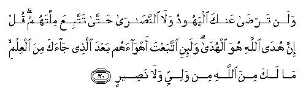
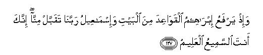
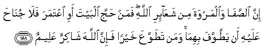
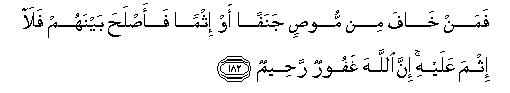
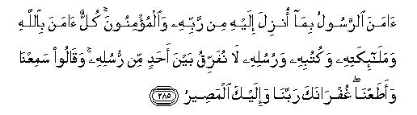

بسم الله الرحمن الرحيم
Sayyid Abul Ala Maududi - Tafhim al-Qur'an - The Meaning of the Qur'an
 2. Surah
Al Baqarah (The Cow)
2. Surah
Al Baqarah (The Cow)
Why the name Al-Baqarah ?
Al-Baqarah (the Cow) has been so named from the story of the Cow occurring in this Surah (vv. 67-73). It has not, however, been used as a title to indicate the subject of the Surah. It will, therefore, be as wrong to translate the name Al-Baqarah into "The Cow" or "The Heifer" as to translate any English name, say Mr. Baker, Mr. Rice, Mr. Wolf etc., into their equivalents in other languages or vice versa , because this would imply that the Surah dealt with the subject of "The Cow". Many more Surahs of the Quran have been named in the same way because no comprehensive words exist in Arabic (in spite of its richness) to denote the wide scope of the subject discussed in them. As a matter of fact all human languages suffer from the same limitation.
Though it is a Madani Surah, it follows naturally a Makki Surah Al- Fatihah, which ended with the prayer: "Show us the straight way." It begins with the answer to that prayer, "This is the Book (that)...is guidance..."
The greater part of Al-Baqarah was revealed during the first two years of the Holy Prophet's life at Al-Madinah. The smaller part which was revealed at a later period has been included in this Surah because its contents are closely related to those dealt with in this Surah. For instance, the verses prohibiting interest were revealed during the last period of the Holy prophet's life but have been inserted in this Surah. For the same reason, the last verses (284-286) of this Surah which were revealed at Makkah before the migration of the Holy Prophet to AI-Madinah have also been included in it.
In order to understand the meaning of this Surah, we should know its historical background:
At Makkah the Quran generally addressed the mushrik Quraish who were ignorant of Islam, but at Al-Madinah it was also concerned with the Jews who were acquainted with the creed of the Unity of Allah, Prophethood, Revelation, the Hereafter and angels. They also professed to believe in the law which was revealed by Allah to their Prophet Moses (Allah's peace be upon him), and in principle, their way was the same (Islam) that was being taught by Prophet Muhammad (Allah's peace be upon him). But they had strayed away from it during the centuries of degeneration and had adopted many un-Islamic creeds, rites and customs of which there was no mention and for which there was no sanction in the Torah. Not only this : they had tampered with the Torah by inserting their own explanations and interpretations into its text. They had distorted even that part of the Word of God which had remained intact in their Scriptures and taken out of it the real spirit of true religion and were now clinging to a lifeless frame of rituals. Consequently their beliefs, their morals and their conduct had gone to the lowest depths of degeneration. The pity is that they were not only satisfied with their condition but loved to cling to it. Besides this, they had no intention or inclination to accept any kind of reform. So they became bitter enemies of those who came to teach them the Right Way and did their worst to defeat every such effort. Though they were originally Muslims, they had swerved from the real Islam and made innovations and alterations in it and had fallen victims to hair splitting and sectarianism. They had forgotten and forsaken Allah and begun to serve mammon. So much so that they had even given up their original name "Muslim" and adopted the name "Jew" instead, and made religion the sole monopoly of the children of Israel.
This was their religious condition when the Holy Prophet went to Al-Madinah and invited the Jews to the true religion. That is why more than one third of this Surah has been addressed to the children of Israel. A critical review of their history, their moral degeneration and their religious perversions has been made; side by side with this the high standard of morality and the fundamental principles of the pure religion have been put forward in order to bring out clearly the nature of the degeneration of the community of a prophet when it goes astray and to draw clear lines of demarcation between real piety and formalism, and the essentials and non-essentials of the true religion.
At Makkah Islam was mainly concerned with the propagation of its fundamental principles and the moral training of its followers. But after the migration of the Holy Prophet to Al-Madinah, where Muslims had come to settle from all over Arabia and where a tiny Islamic State had been set up with the help of the Ansar (local supporters), naturally the Quran had to turn its attention to the social, cultural, economic, political and legal problems as well. This accounts for the difference between the themes of the surahs revealed at Makkah and those at Al-Madinah. Accordingly about half of this Surah deals with those principles and regulations which are essential for the integration and solidarity of a community and for the solution of its problems.
After the migration to Al-Madinah, the struggle between Islam and un-Islam had also entered a new phase. Before this the Believers, who propagated Islam among their own clans and tribes, had to face its opponents at their own risk. But the conditions had changed at Al-Madinah, where Muslims from all parts of Arabia had come and settled as one community, and had established an independent city state. Here it became a struggle for the' survival of the Community itself, for the whole of non- Muslim Arabia was bent upon and united in crushing it totally. Hence the following instructions, upon which depended not only its success but its very survival, were revealed in this Surah :-
The Community should work with the utmost zeal to propagate its ideology and win over to its side the greatest possible number of people.
It should so expose its opponents as to leave no room for doubt in the mind of any sensible person that they were adhering to an absolutely wrong position.
It should infuse in it's members (the majority of whom were homeless and indigent and surrounded on all sides by enemies) that courage and fortitude which is so indispensable to their very existence in the adverse circumstances in which they were struggling and to prepare them to face these boldly.
It should also keep them ready and prepared to meet any armed menace, which might come from any side to suppress and crush their ideology, and to oppose it tooth and nail without minding the overwhelming numerical strength and the material resources of its enemies
It should also create in them that courage which is needed for the eradication of evil ways and for the establishment of the Islamic Way instead.
That is why Allah has revealed in this Surah such instructions as may help achieve all the above mentioned objects.
During this period, a new type of "Muslims," munafiqin (hypocrites), had begun to appear. Though signs of duplicity had been noticed during the last days at Makkah, they took a different shape at Al-Madinah. At Makkah there were some people who professed Islam to be true but were not prepared to abide by the consequences of this profession and to sacrifice their worldly interests and relations and bear the afflictions which inevitably follow the acceptance of this creed. But at Al-Madinah different kinds of munafiqin (hypocrites) began to appear. There were some who had entered the Islamic fold merely to harm it from within. There were others who were surrounded by Muslims and, therefore, had become "Muslims" to safeguard their worldly interests. They, therefore, continued to have relations with the enemies so that if the latter became successful, their interests should remain secure. There were still others who had no strong conviction of the truth of Islam but had embraced it along with their clans. Lastly, there were those who were intellectually convinced of the truth of Islam but did not have enough moral courage to give up their former traditions, superstitions and personal ambitions and live up to the Islamic moral standards and make sacrifice in its way.
At the time of the revelation of Al-Baqarah, all sorts of hypocrites had begun to appear. Allah has, therefore, briefly pointed out their characteristics here. Afterwards when their evil characteristics and mischievous deeds became manifest, Allah sent detailed instructions about them.
This Surah is an invitation to the Divine Guidance and all the stories, incidents etc., revolve round this central theme. As this Surah has particularly been addressed to the Jews, many historical events have been cited from their own traditions to admonish and advise them that their own good lies in accepting the Guidance revealed to the Holy Prophet. They should, therefore, be the first to accept it because it was basically]y the same that was revealed to Prophet Moses (Allah's peace be upon him).
These introductory verses declare the Quran to be the Book of Guidance : enunciate the articles of the Faith -- belief in Allah, Prophethood and Life-after-death; divide mankind into three main groups with regard to its acceptance or rejection -- Believers, disbelievers and hypocrites. 1 - 20
Allah invites mankind to accept the Guidance voluntarily and to submit to Him, the Lord and the Creator of the Universe and to believe in the Quran, His Guidance, and in the Life-after-death. 21 - 29
The story of the appointment of Adam as Allah's Vicegerent on Earth, of his life in the Garden, of his falling a prey to the temptations of Satan, of his repentance and its acceptance, has been related to show to mankind (Adam's offspring), that the only right thing for them is to accept and follow the Guidance. This story also shows that the Guidance of Islam is the same that was given to Adam and that it is the original religion of mankind. 30 - 39
In this portion invitation to the Guidance has particularly been extended to the children of Israel and their past and present attitude has been criticized to show that the cause of their degradation was their deviation from the Guidance. 40 - 120
The Jews have been exhorted to follow Prophet Muhammad (Allah's peace be upon him) who had come with the same Guidance and who was a descendant and follower of Prophet Abraham whom they highly honoured as their ancestor, and professed to follow as a prophet. The story of the building of the Ka`abah by him has been mentioned because it was going to be made the qiblah of the Muslim Community. 121 - 141
In this portion, the declaration of the change of qiblah from the Temple (Jerusalem) to the Ka`abah (Makkah) has been made as a symbol of the change of leadership from the children of Israel to the Muslim Community, which has also been fore-warned to guard against those transgressions against the Guidance that had led to the deposition of the Jews. 142 - 152
In this portion practical measures have been prescribed to enable the Muslims to discharge the heavy responsibilities of the leadership that had been entrusted to them for the promulgation of Guidance. Salat, Fast, Zakat, Haj and Jihad have been prescribed for the moral training of the Ummat . The Believers have been exhorted to obey authority, to be just, to fulfill pledges, to observe treaties, to spend wealth etc., in the way of Allah. Laws, rules and regulations have been laid down for their organization, cohesion and conduct of day-to-day life and for the solution of social, economic, political and international problems; on the other hand, drinking, gambling, lending money on interest etc., have been prohibited to keep the Ummat safe from disintegration. In between these, the basic articles of the Faith have been reiterated at suitable places, for these alone can enable and support one to stick to the Guidance. 153 - 251
These verses serve as an introduction to the prohibition of lending money on interest. The true conception of Allah, Revelation and Life-after-death has been emphasized to keep alive the sense of accountability. The stories of Prophet Abraham (Allah's peace be upon him) and of the one who woke up after a sleep of hundred years have been related to show that Allah is All-Powerful and is able to raise the dead and call them to account. The Believers, therefore, should keep this fact in view and refrain from taking interest on money. 252 - 260
The theme of 153 - 251 has been resumed and the Believers have been exhorted to spend in the way of Allah in order to please Him alone. In contrast to this, they have been warned against the evils of lending money on interest. Instructions have also been given for the honest conduct of day-to-day business transactions. 261 - 283
The basic articles of the Faith have been recapitulated here at the end of the Surah, just as they were enunciated at its beginning. Then the Surah ends with a prayer which the Muslim Community needed very much at that time when they were encountering untold hardships in the propagation of the Guidance. 284 - 286
In the name of Allah, the Compassionate, the Merciful.
[1-4] Alif. Lam. Mim.1 This is the Book of Allah: there is no doubt2 about it. It is guidance to Godfearing people,3 who believe in the unseen,4 establish the Salats5 and expend (in Our way) out of what We have bestowed on them;6 who believe in the Book We have sent down to you (i.e. the Qur'an) and in the Books sent down before you,7 and firmly believe in the Hereafter.8
[5] Such people are on the right way from their Lord and such are truly successful.
[6-7] As for those who have rejected9 (these things), it is all the same to them whether you warn them or do not warn them: they are not going to believe. Allah has sealed up their hearts and ears and a covering has fallen over their eyes,10 and they have incurred the severest punishment.
[8-16] Then there are some who say, "We believe in Allah and the Last Day", whereas they do not believe at all. They thus try to deceive Allah and the Believers, but they succeed in deceiving none except themselves and they realize it not.11 In their hearts is a disease which Allah has increased all the more12 and a painful doom is in store for them for the lie they utter. Whenever it is said to them, "Spread not disorder on the earth", their reply is, "We only seek to put things aright".Beware! they do spread disorder but they realize it not. And when it is said to them, "Believe sincerely as the other people have believed",13 they reply, "Should we believe as fools have believed?”14 Beware! they themselves are the fools, but they know it not. When they meet those who believe, they say, "We, too, are believers", but when they privily meet their evil geniuses,15 they say, "Indeed we are with you: we are only mocking at these people". (Little do they realize that) Allah is mocking at them. He gives them rope enough, and they wander on and on blindly in their mischief and rebellion. These are the people who have bartered away Guidance for error, but this is a profitless bargain that they have made, and they are not at all on the right way.

[17-20] Their condition may be described in a parable: a man kindled a fire and when it illuminated all around him, Allah took away the light from their eyes and left them in utter darkness, where they could not see anything.16 They are deaf; they are dumb; they are blind17 so they will not return (to the right way). Or (still another parable may be cited to depict their condition): heavy rain is falling from the sky, accompanied by pitch darkness, thunder and lightning. When they hear the thunderclap, they thrust their fingers into their ears for fear of death, but Allah is encircling the disbelievers on all sides.18 The lightning terrifies them as if it were going to snatch away their eyesight from them. When they see light, they move on a little further and When it becomes dark for them, they stand still.19 Had Allah so willed, He could have deprived them totally of their hearing20 and their sight. Most surely Allah has power over everything.
[21-22] O Mankind,21 submit to your Lord Who created you and those who were before you; in this way only you may expect to save yourselves.22 It is He Who has made the earth a bed for you and the sky a canopy; and it is He Who sends down rain from above for the growth of every kind of food products for your sustenance. So, when you know this, you should not set up equals to rank with Allah23
[23-24] And if you be in doubt whether the Book We have sent down to Our Servant is from Us or not, then produce, at least, one Surah like this.24 You may call all your associates to assist you and avail yourselves of the help of any one other than Allah. If you are genuine in your doubt, do this. But if you do not do this, and you can never do this, then fear the Fire which has been prepared for the disbelievers and which shall have men and stones for fuel25
[25] And give good news (O Muhammad), to those who believe in this Book and do good deeds (in accordance with its teachings). For them there will be gardens underneath which canals flow. Their fruits will so resemble the fruits on the Earth that every time they will be provided with fruits, they will say, "Such fruits were provided to us before on the Earth.26 " And there will be pure spouses27 for them and therein they will live for ever.
[26-27] Well, Allah is not ashamed to cite the similitude of a gnat or of something even more insignificant than this.28 As for those who believe, they come to know from the same similitude that it is the Revelation from their Lord; but those who disbelieve, say, "What does Allah mean by such similitudes?"29 Allah leads astray many and guides many to the right way by the same thing.30 And He leads astray only those who disobey Allah; who break Allah's covenant after ratifying it;31 who cut asunder what Allah has ordered to be joined,32 and who produce chaos on the Earth.33 These are the people who are indeed the losers.
[28-29] How is it that you adopt the attitude of disbelief towards Allah when the fact is that you were lifeless and He gave you life, and He will take away life from you and wilt again restore you to life: then you shall ultimately return to Him. He it is Who created for you all that there is on the Earth; He then turned to the sky and ordered it into seven heavens.34 And He has full knowledge of everything35

[30-33] Just36 recall the time when your Lord said to the angels,37 "I am going to appoint a vicegerent38 on the Earth." They humbly enquired, "Are you going to appoint such a one as will cause disorder and shed blood on the Earth?39 We are already engaged in hymning Your praise, and hallowing Your name".40 Allah replied, "I know what you do not know."41 After this he taught Adam the names of all things.42 Then He set these before the angels and asked, "Tell Me the names of these things, if you are right (in thinking that the appointment of a vicegerent will cause disorder)". They replied, "Glory be to You. You alone are free from defect. We possess only that much knowledge which You have given us.43 Indeed You alone are All-Knowing and All-Wise." Then Allah said to Adam, "Tell them the names of these things." When Adam told them the names of all those things,44 Allah declared, "Did I not tell you that I know those truths about the Earth and the Heavens which are hidden from you? I know what you disclose and what you hide."
[34] Then We commanded the angels, "Bow yourselves to Adam. "All bowed45 but Iblis46 refused to do so; he waxed proud and joined the defiers.47
[35-37] Then We said, "O Adam, you and your wife, both dwell in the Garden and eat to your hearts' content where from you will, but do not go near this tree;48 otherwise you shall become transgressors"49 After a time Satan tempted them with that tree to disobey. Our Command and brought them out of the state they were in, and We decreed, "Now, go down all of you from here; you are enemies of one another.50 Henceforth you shall dwell and provide for yourselves on the Earth for a specified period." At that time Adam learnt appropriate words from his Lord and repented,51 and his Lord accepted his repentance, for He is very Relenting and very Merciful.52
[38-39] We said, "Now go down, all of you from here.53 Henceforth there shall come to you Guidance from Me now and again: whoever will follow it shall have neither fear nor sorrow and whoever will refuse to accept it and defy Our Revelations54 they shall be doomed to the Fire wherein they shall remain for ever.55
[40] O children of Israel!56 Just recall to mind My favour wherewith I blessed you fulfil your covenant with Me and I shall fulfil My covenant with you, and fear Me alone.
[41-46] And believe in the Book I have now sent down; as it confirms the Scriptures you already possess, be not the first to reject it; barter not away My Revelations for paltry worldly gain,57 and guard yourselves against My wrath Confound not the Truth with falsehood nor conceal it knowingly.58 Establish the Salat, pay the Zakat59 and bow down before Me along with those who bow down. How is it that you enjoin others to follow the Right Way, but forget it yourselves, though you read the Scriptures? Have you no sense at all? Seek help with the Salat and fortitude:60 no doubt, Salat is a hard task but not for those obedient servants, who realize that ultimately they shall meet their Lord and shall return to Him.61

[47-48] O Children of Israel! Just recall to mind My favour that bestowed upon you, and remember that I exalted you above all the peoples of the world.62 And guard yourselves against the Day when no one shall avail anyone anything; nor shall intercession be accepted from anyone; nor shall anyone be acquitted for any (amount of) ransom; nor shall the guilty ones be helped from any quarter.63
[49] Recall64 the time when We delivered you from the slavery of Pharaoh's people.65 They had inflicted a dreadful torment on you: they killed your sons and let your daughters live. And in this there was a hard trial for you from your your Lord.66
[50] Remember the time when We parted the sea to make way for you and let you pass safely through it and then drowned Pharaoh's people before your very eyes.
[51-52] Call to mind that when We invited Moses for a fixed term of forty nights and days,67 you took to calf worship in his absence.68 Though you had committed a wicked transgression, yet We pardoned you even after that so that you might become grateful.
[53] Remember that (at that very time, when you were committing this gross iniquity) We gave Moses the Book and the criterion of right and wrong69 so that you might be guided aright.
[54] Remember that when Moses (returned with the Divine Gift, he) said to his people, "O my people, you have .wronged yourselves grievously by taking the calf for worship. Therefore, turn to your Creator . in penitence and slay the guilty ones among you.70 This is best for you in the sight of your Creator." At that time your Creator accepted your repentance because He is Relenting 'and Merciful.
[55-56] Remember when you said, "O Moses, we are not going to believe you until we see with our own eyes Allah (talking to you)". At that very time a thunderbolt struck you while you were looking on and you fell lifeless. Then We raised you to life so that you might become grateful for this favour.71
[57] (Remember that) We caused the cloud to overshadow you and provided you with72 manna and salva73 for your food, saying, "Eat of the clean and pure things We have bestowed upon you" (In spite of this, your forefathers violated Our commands:) however, they did not harm Us but harmed only themselves.
[58-59] Then call to mind the time when We said, "Go into the town'74 before you and eat to your hearts' content therein, wherefrom you will, but enter the gate bowing down with humility, repeating 'hittatun';75 We will forgive your sins and increase the reward of the righteous". But the transgressors perverted the words said to them entirely into a different thing. So We sent down upon the transgressors a severe torment from the sky : that was the punishment for the disobedience they were showing.
[60] Remember that when Moses prayed for water for his people, We answered, "Strike the rock with your staff" : whereupon twelve springs gushed forth from it;76 the people of every clan came to know their drinking place. (Then they were enjoined:) "Eat and drink of what Allah has provided and do not spread disorder on the earth."
[61] Remember: You grumbled: "O Moses, we cannot endure one and the same sort of food. Pray your Lord to bring for us the products of the earth green herbs, vegetables, corn, garlic, onions, pulses and the like." Moses replied: "What! would you exchange that which is meaner for that which is nobler?77 Well, go and live in a town and you will get there what you demand." By and by, they became so degraded that disgrace and humiliation, misery and wretchedness were stamped upon them and they incurred Allah's wrath. That was because they began to reject the Revelations of Allah78 and kill His Messengers without any just cause;79 that was the consequence of their disobedience and their persistent transgression against the Law.
[62] Rest assured that whosoever from among the Muslims or the Jews or the Christians or the Sabaeans believes in Allah and the Last Day, and performs good deeds, he will have his reward with his Lord and he will have no cause for fear and grief.80
[63-64] Call to mind the .time when We raised above you the Tur and made a covenant with you,81 saying, "Hold fast to the Book which We are giving you and bear in mind the commands and precepts contained therein. It is expected that this will lead you on to the paths of virtue and piety." But even after that you forsook the Covenant: nevertheless Allah did not withhold His grace and mercy from you; otherwise you would have been utterly ruined long before this.
[65-66] And you know well the story of those among you who broke Sabbath.82 We said to them, "Be apes83 despised and hated by all. Thus We made their end a warning to the people of their time and succeeding generations, and an admonition for God-fearing people.

[67-71] Then call to mind the other event: when Moses said to his people, "Allah commands you to sacrifice a cow," they replied, "Do you mean to have a jest with us?" He answered, "I crave Allah's protection from behaving like ignorant people." Then they said, "Please make a request to your Lord to give us some details of the cow." Moses answered, "Allah says that the cow should neither be old nor immature but of middle age. Do, therefore, as you are bidden." But they further asked, "Please request your Lord to make it clear to us of what colour she should be." Moses answered, "He says that she should be of yellow colour, so deep and bright as to delight the beholders." Again they said, "Pray your Lord to specify for us the kind of cow that is required; for cows (of this type) look alike to us. We shall then find her, if God so wills." Moses answered, "Allah says that she should be a cow which has not been yoked nor has ploughed the land nor watered the fields; which is sound and whole, without belemish. " Then they cried out, "Now you have given an accurate description. " Then they sacrificed her but they did not appear to be doing this willingly.84
[72-74] You should also recall to mind another incident: You slew a man and began to dispute about the murder and accuse one another of it, but Allah had decreed that what you were trying to hide should be disclosed. So We commanded, "Strike the corpse of the murdered man with a part of the sacrificed cow. See how Allah brings the dead to life and shows you His Signs, so that you may understand".85 But even after seeing these Signs your hearts hardened and became as hard as rocks; nay, even harder than rocks. For there are some rocks out of which springs gush forth, and others which split open, and water issues out of them; then there are some which tumble down for fear of Allah. And Allah is not unaware of what you are doing.
[75-82] O Muslims, do you then expect that these people will accept your invitation and become believers?86 whereas there have always been among them some who have been hearing the Word of God, understanding it well and then perverting and tampering with it knowingly.87 When they meet those who believe in Muhammad, they say, "We also believe in him." But when they meet one another in private, they say, "Have you got no sense that you disclose to them those things which Allah has revealed to you so that they might bring them as a proof against you before your Lord?88 Do they really not know that Allah is fully aware of what they hide and what they disclose? -- Then there are among them some un-lettered people who have no knowledge of the Book but depend upon empty hopes and are guided by mere conjecture and guess-work.89 So woe to their learned people, who write the law with their own hands and then say to the people, "This is from Allah," so that they might gain some paltry worldly end.90 (They do not see that) this writing of their hands will bring woe to them and what they gain thereby will lead to their ruin. They also say, "The fire of Hell is not going to touch us, and even if it does at all, it will be only for a few days".91 Say, "Have you obtained a promise from Allah which He would not break? Or, do you attribute to Allah things you do not know? Why will not the fire of Hell touch you? Whoever earns evil and becomes engrossed in sin shall be doomed to Hell and abide therein for ever. Only those people who believe and do good deeds, will be the dwellers of the Garden and live there for ever.
[83] Remember that We made a solemn covenant with the children of Israel to this effect: worship none save Allah: be good to your parents, to your relatives, to the orphans and to the helpless; speak aright with the people: establish the Salat and pay the Zakat. But with the exception of a few, you all slid back from it and are paying no heed to it even now.

[84-86] Remember also that We made another solemn covenant with you: you shall not shed blood among yourselves nor expel one another from your homes. And you confirmed it and you are a witness to it. But inspite of this, you are killing your brethren and driving them out from their homes and making unjust and aggressive alliances against one another. And when they come to you as captives, you trade on their ransoms whereas their expulsion itself was unlawful for you. Do you then believe in one part of the Scriptures and disbelieve in the other?92 What other punishment do such people from among you deserve except an ignominious life in this world and the most grievous doom on the Day of Resurrection? Allah is not unaware of what you are doing. These are the people who have preferred the worldly life to the life in the Hereafter. Therefore their torment shall not be lightened nor shall help be given to them (from any quarter).

[87-90] And We gave Moses the Book and sent after him a train of Messengers in succession. Then We sent Jesus, son of Mary, with clear Signs and supported him with the Holy Spirit.93 Then how is it that whenever a Messenger came to you wish that which did not suit your lusts, you grew rebellious against him, and repudiated some and slew others. They say, "Our hearts are secure."94 Nay, the fact is that Allah has cursed them for their disbelief; so they are little disposed to believe. And how are they behaving now towards a Book which has come to them from Allah? Inspite of the fact that it confirms the Scriptures which they already possessed. and, inspite of the fact that, before it came, they used to pray for a signal victory over the disbelievers, they rejected it when it came, although they recognized it.95 May Allah's curse be upon such disbelievers! What a mean thing it is with which they delude their minds.96 They reject the Guidance which Allah has sent down merely because of their grudge why Allah has in His bounty sent it to whom He chose from amongst His servants.97 They have thus incurred wrath after wrath, and for such disbelievers there is a disgraceful doom.
[91-93] When it is said to them, "Believe in that which Allah has sent down," they say, "We believe only in that which has been sent to us", and reject everything else, though it is the Truth and confirms what is with them. Well, ask them, "If you sincerely believed in what was sent down to you, why did you kill the Messengers of Allah (who were sent to you from amongst yourselves)? (More than that:) Moses came to you with clear Signs, yet no sooner was he away from you than you transgressed and took the calf for worship. Recall also to mind the Covenant We made with you while We raised the Tur over you: `Follow strictly the precepts We are giving you and give ear to Our Commandments.' Your forefathers replied, "We have heard but we will not obey." They were so prone to unbelief that they cherished the calf in their hearts. Tell them (O Muhammad). "If indeed you are believers, yours is a strange Faith that enjoins you to do such evil things."


[94-96] Say to them, "If the abode of the Hereafter with Allah is exclusively reserved for you and not for the rest of mankind, then you should long for death, if you arc sincere in your claim."98 Believe it that they will never wish for it, for (they are fully aware of the consequences of) what they have sent before them for the Hereafter. And Allah knows well the mentality of the transgressors. You will find that, of all mankind, they are the greediest for life,99 nay, they are even greedier than the mushriks. Each one of them longs to have a life Of a thousand years, but a long life can, by no means, remove them away from the scourge, for Allah is watching whatever they are doing.
[97-98] Say to them, "Whoever is enemy to Gabriel,100 should understand that he has, by Allah's command, revealed to your heart the Qur'an101 which confirms what was revealed before it,102 and brings Guidance and glad tidings103 to the Believers. (If their enmity to Gabriel is due to this, let them understand that) whoever is enemy to Allah, His Angels, His Messengers, Gabriel and Michael, Allah is enemy to such disbelievers."
[99-103] We have sent down to you Revelations that clearly expound the Truth, and none but the disobedient reject them. Has it not always been so that every time they made a covenant, some of them set it aside? Nay, most of them never believe in it sincerely. And whenever a Messenger came to them from Allah, confirming that Scripture which they already possessed, some from among the people of the Book threw the Book of Allah behind their backs as though they knew nothing about it. (Instead of this,) they began to follow that (magic) to which the devils falsely attributed (the greatness of) the kingdom of Solomon.104 In fact Solomon .was never involved in any practice of disbelief, but the satans, who taught magic to the people were themselves guilty of disbelief. They were after that thing which was sent to Harut and Marut, the two angels at Babylon. Whenever these two angels taught black art to anyone, they would always give a clear warning beforehand, saying, "We are merely a trial for you; so you should not commit blasphemy.105 But in spite of this warning, those people used to learn from the angels the art which caused division between husband and wife.106 Although it was obvious that they could not do any harm to anyone by means of this magic without Allah's permission, yet they learnt that art which could not be profitable even for them but was actually harmful. Moreover, they knew it full well that anyone, who purchased that art, would have no share in the Hereafter. What a vile commodity it was for which they sold off their souls, if they had but known it! Had they believed in Allah and practised piety, they would have received a far better reward from AIIah, if they had but known it.
[104-105] O Believers,107 do not say. "Ra 'ina" but say, "Unzurna " and listen108 a to what is said; for the disbelievers deserve a painful punishment. The people who have rejected the message of Truth, be they the people of the Book or the mushriks, would never like that any good be sent down to you from your Lord, but Allah chooses for His mercy whom He wills, and Allah is Most Bountiful.
[106-107] We bring a better verse or at least the like of it for whatever we abrogate or cause it to be forgotten.109 Do you not know that Allah has full power over everything? Do you not know that the sovereignty of the heavens and the earth belongs to Allah alone and that you have neither any protector nor helper beside Him?
[108-110] Would you then ask your Prophet such questions as were asked of Moses in former times?110 In fact, anyone, who changes the way of belief for that of disbelief, has surely swerved from the Right way. Many of the people of the Book desire to turn you anyhow back to unbelief. They wish this out of the envy of their hearts though the Truth has become quite clear to them. Yet, you should show forbearance and forgiveness to them'111 till Allah Himself enforces His judgement. (Rest assured that) Allah has full power over everything: establish the Salat and pay the Zakat. you will find with Allah whatever good you send forward for your future; Allah is watching everything you do.
[111-112] They say, "None shall enter Paradise unless he be a Jew or according to the Christians) a Christian." These are their wishful fancies.112 Say to them, "Bring your proof, if you are right in your claim." The fact is that no one has any special claim to Paradise; whoever surrenders himself to Allah in obedience and follows the Right Way, shall get his reward from his Lord: there shall be neither fear nor grief for such people.
[113] The Jews say that the Christians have nothing (of the Truth) and the Christians say that the Jews have nothing of it, though both read the Scripture. And those who have no knowledge of the Scripture113 also make similar claims. Allah will surely give His judgement on the Day of Resurrection in all the matters in which they differ.
[114] And who could be a greater wrongdoer than the one who forbids the mention of Allah's name in places of worship and strives for their ruin? Such people do not deserve to enter the places of worship, and, if they enter at all, they should do so in fear;114 for there is ignominy for them in this world and an awful punishment in the Hereafter.

[115] The East and the West, all belong to Allah: you will face Allah in whichsoever direction you turn your face:115 Allah is All-Embracing and All-Knowing.116
[116-117] They say "Allah has adopted a son." Allah is above such things. As a matter of fact, whatever is in the heavens and on the earth belongs to Him and all are obedient to Him. He is the Creator of the heavens and the earth: when He decrees a thing, He merely says, "Be," and there it is.
[118-119] The ignorant people say, "Why does not Allah Himself talk to us or why does not a Sign come to us?"117 The people before them also talked like this, for all (who swerve from the Right Path) have the same mentality.118 We have already shown clear Signs to those who believe;119 (what greater Sign could there be than that) We have sent you with the knowledge of the Truth and made you a bearer of good tidings and a Warner?120 Now, you are not responsible and answerable for those who are bent upon going to Hell.

[120-121] The Jews and the Christians will never be satisfied with you, O Muhammad, until you follow their way.121 Tell them plainly, "The right way is shown by Allah." And if, after all the' knowledge you have received, you were to yield to their desires, you shall find neither any friend nor helper to protect you from Allah's wrath. There are those, even among the people of the Scripture, who read the Book as it should be read and believe in it sincerely;122 as for those who reject it, they are indeed the losers.
[122-123] O children of Israel,123 remember that special favour 1 bestowed upon you, and that I exalted you above all the communities of the world. And dread the Day when no one shall avail anyone in any way; nor shall any ransom be accepted from anyone; nor shall intercession profit any body; nor shall the offenders be helped from any quarter.
[124] Recall to mind that when his Lord put Abraham to test124 in certain things and he fulfilled all of them, He said, "I am going to make you the leader of mankind." Abraham humbly asked, "Does this promise apply to my descendants also?" He replied, "My promise does not apply to the transgressors."125
[125] And remember that We made this House (the Ka'bah) the centre nd sanctuary for mankind and enjoined the people to dedicate to worship the place where Abraham used to stand for prayer, and We urged Abraham and Ismail to keep My House pure for those who would go round it and those who would retire to it for devotion and prayer and for those who would bow down and prostrate themselves there in worhsip.126
[126] And remember that Abraham prayed, "Lord, make this city a city of peace and security, and provide with every kind of fruit those of its people, who believe in Allah and the Last Day'. Allah answered, "As for the disbelievers, I will also provide them with the necessities of life in this world,127 though in the Next World I will drag them to the torment of Hell, and that is the worst abode."


[127-129] And remember that when Abraham and Ishmael were raising the walls of the House, they prayed, "Lord, accept this service from us; You are All-Hearing and All-Knowing. Lord, make us Your Muslims (submissive servants) and also raise from our offspring a community which should be Muslim (submissive to Your Will). Show us the ways of Your worship and forbear our shortcomings: You are Forgiving and Merciful. Lord, raise up from among them a Messenger who shall recite Your Revelations to them and teach them the Book and Wisdom and purify their lives.128 You art All-Powerful and All-Wise".129
[130-133] Now, who else can have aversion to the way of Abraham but the one who has debased himself with folly and ignorance? Abraham was the man whom We chose for Our service in this world, and in the Next World he shall be among the righteous. When his Lord said to him, "Surrender,"130 he promptly responded, "I have surrendered to the Lord of the Universe (and become a Muslim)." He also enjoined on his children to follow the same way. Jacob also did the same131 and his last will to his sons was, "O my children, Allah has chosen the same way of life132 for you. Hence remain Muslims up to your last breath." Were you present at the time when Jacob was on the point of death? He asked his children, "Whom will you worship after me?" They all answered, "We will worship the same One Allah Whom you, your forefathers Abraham. Ismail and Isaac acknowledged as their Allah and to Him we all surrender as Muslims."133
[134] They were a people who passed away; they shall receive the reward of what they earned and you shall have the reward of what you will earn; and you will not be questioned as to what they did.134

[135-136] The Jews say, "Become Jews and you will be rightly guided" ;the Christians say, "Become Christians and you will have the true guidance." Say to them, "Nay, we turn away from every other way and accept the way of Abraham, and Abraham did not associate other gods with Allah."135 O Muslims, say to them, "We believe in Allah and the Guidance which has been sent down to us and which was sent to Abraham, Ismail , Isaac and Jacob and his descendants and which was given by their Lord to Moses and Jesus and to all other Prophets. We do not discriminate against any of them136 and we have completely surrendered to Allah as Muslims."
[137] Then if they believe the way you have believed, they have the right guidance,and if they turn away from this, it will become obvious that they are obdurate. Therefore, rest assured that Allah will suffice to defend you against them: He hears everything and knows every thing.
[138] Say, "Take Allah's colour,137 and who can give a better colour than Allah? Therefore, we worship and submit to Him alone. "
[139-141] O Prophet, say to them, "Do you argue with us concerning Allah, whereas He is our Lord and also your Lord?138 We shall be accountable to Him for our deeds and you for yours; so we have dedicated our worship to Him alone.139 Or do you say that Abraham. Ismail , Isaac, Jacob and his children were all Jews or Christians?" Ask them,"Do you know more than Allah does?140 And who is more unjust than the one who hides the testimony which Allah has entrusted to him? Allah is not unaware of what you are doing.141 They were a people who have passed away and they shall be repaid for what they earned and you for what you earn: you will not be questioned as to what they did.
[142] Of course, the foolish people will say, "What has turned them abruptly away from the qiblah towards which they formerly used to turn their faces in prayer?" 142 Tell them, O Messenger, `'East and West all belong to Allah; He shows the Right Way to anyone He wills."143 Thus have We made you a Community of the "Golden Mean" so that you may be witnesses in regard to mankind and the Messenger may be a witness in regard to you.144
[143] We had appointed the former giblah towards which you used to turn your face merely to test who would follow the Messenger and who would turn back.145 It was indeed a hard test but not for those who had been blessed with Guidance from Allah. Allah will not let go to waste this faith of yours; rest assured that He is full of pity and mercy for mankind.
[144] We have seen you (O Muhammad), turning your face over and over again towards Heaven. Now, therefore, We turn you towards the giblah that you like best: so turn your face towards the Masjid Haram. Henceforth, wheresoever you may be, turn your face at prayer towards it.146 The people who were given the Book know it well that the commandment (about the change of giblah) is in fact from their Lord, and is based on the Truth, but Allah is not unaware of what they are doing (in spite of this)
[145-147] Even though you may show every kind of sign to the people of the Book, they will not adopt your giblah, nor are you going to adopt their giblah; nor will any of them adopt the giblah of the other; therefore if, after the knowledge you have received, you follow their desires, you will certainly be counted among the transgressors.147 As for those to whom We gave the Book, they recognise the place (which has now been made giblah), as clearly as they recognise their own children.148 But some of them are knowingly concealing the truth. This is in fact a Commandment from your Lord; so you should not have any doubt concerning this.
[148] Everyone has a direction towards which he turns in Prayer: so try to excel one another in good works.149 Allah will find you wheresoever you be, for nothing is out of Allah's reach.
[149-152] At whatever place you may be, turn your face towards Masjid Haram (at Prayer time) for this is, in fact, a Commandment of your Lord, and Allah is not unaware of what you do. At whatever place you may be, you must turn your face towards the Masjid Haram, and wherever you may be, you must turn your face towards the same at prayer so that people might not find an argument against you.150 As for the unjust people, they will never stop talking; so do not fear them but fear Me -- (Do this) so that I may complete My favour151 upon you and you may find the way to real success,152 just as (you have found from this: that) We sent the Messenger to you from among you, who recites to you Our Revelations; who purifies your lives; who instructs you in the Book and in Wisdom and teaches you those things that you did not know. So remember ' Me and I will remember you, and give thanks to Me and be not ungrateful.
[153-157] O Believers,153 seek help with fortitude and Salat, for Allah is with those who show fortitude.154 And do not say of those who are slain in the way of Allah, "they are dead." In fact, they are alive but you do not perceive that life.155 We will surely put you to trial by involving you in fear and hunger and by causing loss of property, life and earnings. And give good tidings to those who remain steadfast in these trials: when a misfortune comes to them, they say, "We are Allah's and we shall certainly return to Him,''156 Their Lord will bestow great blessings and mercy upon them; such are the people who are rightly guided.

[158] Indeed Safa and Marwah are among the emblems of Allah: it is, therefore, no sin for him, who performs Hajj or `Umrah157 to the House of AIIah, to run between the two hills;158 and Allah knows and appreciates him who does any good with a willing heart.159
[159-160] Indeed Allah curses, and the cursers, too, curse those who conceal the clear teachings and guidance We have sent down, after We have made these plain in the Book for the guidance of all mankind.160 I, however, will forgive those of them who repent of it, mend their ways and make own what they were concealing: for I am very generous in accepting repentance and showing mercy.
[161-162] Those who adopted the way of disbelief161 and died as disbelievers, are accursed of Allah and of angels and of all mankind: they shall remain accursed for ever. Their punishment shall not be lightened, nor shall they be reprieved.
[163-167] Your Deity is Allah alone: there is no deity save the All-Beneficent and All-Merciful Allah. (If they want a sign for the perception of this Reality) surety there are countless signs for those who use their common sense;162 they can see alternation of the night and day, in the ships that sail the ocean laden with cargoes beneficial to mankind, and in the rain-water which Allah sends down from the sky and thereby gives life to the earth after its death and spreads over it all kinds of animate creatures, in the blowing of the winds and in the clouds which obediently wait for orders between the sky and the earth. (In spite of such clear signs of the Oneness of Allah), there are people who set up equals and rivals with Allah163 and adore them with the adoration due to Allah . whereas the Believers adore Allah most ardently.164 Would that these transgressors could realize now what they will realize, when they will see the chastisement before them that power and authority wholly belong to Allah and that Allah is severe in punishment! When He will inflict punishment, those very leaders and guides whom they followed in the world will disown them. But punishment they shall get and all their bonds shall be cut off. Then those who followed them will say, "Would that we were given another chance to return to the world: then we will disown them just as they have disowned us today.”165 Thus will Allah bring before them the deeds they did in the world in such a manner as to make them wring their hands in regret but they shall be unable to come out of the Fire.
[168-169] O people, eat of what is lawful and clean in the earth and do not follow the ways of Satan,166 for he is your avowed enemy. He enjoins you to commit vice and indecency and induces you to attribute to Allah's name things you do not know to be from Him.167
[170-171] When it is said to them, "Follow the Commands that Allah has sent down," they reply, "We will follow only what we found our forefathers practising. 168 Well, will they go on following their forefathers even though they did not use common sense and did not find the right way? The mental condition of those who rejected the way of Allah may be likened to that of the cattle whom the shepherd calls but they hear nothing except the sound of shouts and cries.169 They are deaf, they are dumb, they are blind; therefore they do not understand anything.
[172-173] O Believers, if you are true worshippers of Allah alone, eat without hesitation of the good and clean things wherewith We have provided you and be grateful to Allah.170 Allah has only forbidden you to eat what dies of itself, and blood and swine flesh and what has been consecrated to any other name than of Allah.171 But one will incur no sin if, forced by absolute necessity, he eats of any of these forbidden things, provided he has no intention of transgressing the law and does not take more than what is absolutely indispensable: for Allah is very Forgiving and very Merciful.172
[174-176] Indeed those, who conceal the Commands that Allah has sent down in His Book and barter them away for paltry worldly gains, fill their bellies with fire.173 Allah will not speak to them on the Day of Resurrection, nor will He regard them as pure;174 "a there is a painful torment for them. They are the people who have bartered away Guidance for error and Allah's pardon for His punishment. How audacious they are: they are ready even to endure the fire of Hell. This was inspite of the fact that Allah had sent down the Book with the Truth but the people who sought differences in the Book swerved far away from the Truth in their disputes.
[177] It is no virtue. That you turn your faces towards the east or the west,175 but virtue is that one should sincerely believe in Allah and the Last Day and the Angels and the Book and the Prophets and, out of His love, spend of one's choice wealth for relatives and orphans, for the needy and the wayfarer, for beggars and for the ransom of slaves, and establish the Salat and pay the Zakat. And the virtuous are those who keep their pledges when they make them and show fortitude in hardships and adversity and in the struggle between the Truth and falsehood; such are the truthful people and such are the pious.
[178-179] O Believers, the lawn176 of retribution has been prescribed for you in cases of murder; if a free man commits a murder, the free man shall he punished for it and a slave for a slave : likewise if a woman is guilty of murder the same shall he accountable for it.177 But in case the injured brother178 is willing to show leniency to the murderer, the blood money should he decided in accordance with the common law179 and the murderer should pay it in a genuine way. This is an allowance and mercy from your Lord. Now there shall be a painful torment for anyone who transgresses the limits after this.180 O men of understanding. There is security of life for you in the law of retribution.181 It is expected that you will refrain from breaking this law.

[180-182] It has been prescribed for you that when death approaches one of you and he is leaving some property behind him, he should bequeath it equitably for his parents and relatives : it is an obligation on those who tear Allah.182 Then if those, who heard the will, change it, they themselves shall bear the sin of this. Allah hears everything and knows everything. If, however. one apprehends genuinely that the testator had ( intentionally or unintentionally ) done some injustice, and then alters the will to set things right between the parties concerned, in that case he does not incur any sin. Allah is Forgiving and Merciful.
[183-184] O Believers, the Fast has been made obligatory on you just as it was prescribed for the followers of the Prophets before you. It is expected that this will produce piety in you.183 The Fast is to be observed for a fixed number of days. If, however, anyone of you be sick or on a journey, he should fast the same number of other days. As for those who can fast (but do not), the expiation of this shall be the feeding of one needy person for one fast day, and whoso does more than this 184 with a willing heart does it for his own good. But if you understand the thing, it is better for you to observe the Fast.185
[185] Ramadan is the month in which the Qur'an was sent down : this Book is a perfect guidance for mankind and consists of clear teachings which show the right way and are a criterion of Truth and falsehood. Therefore from now on whoever witnesses it, it is obligatory on hire to fast the whole month, but if one be ill or on a journey, he should make up for the same number by fasting on other days.186 Allah desires to show leniency to you and does not desire to show any hardship. "therefore this method is being shown to you so that you may complete the number of Fast days and glorify Allah for the Guidance He has shown to you and be grateful to Him.187
[186] And if My servants ask you, O Prophet. concerning Me, tell them that I am quite near to them. I hear and answer the prayer of the suppliant, when he calls to Me. So let them respond to My call and believe in Me.188 Convey this to them, O Prophet; perhaps they may be guided aright.189
[187] It has been made lawful for you to go to your wives during the nights of the fast days. They are as a garment to you and you are as a garment to them.190 Though Allah knew that you were secretly dishonest to yourselves, He has pardoned your guilt and forgiven you. NOW you are permitted to have intercourse with your wives and enjoy what Allah has made lawful for you.191 You are also pemitted to eat and drink during the nights of the Fast months.192 until you can discern the white streak of dawn from the blackness of night.193 Then (abstain from all these things and) complete your fast till night-fall.194 But you should not have intercourse with your wives while you confine yourselves to mosques.195 These are the bounds set by Allah; so do nut go near them.196 In this way Allah makes His Commands clear to mankind. It is expected that they will guard themselves against wrong ways.
[188] Do not usurp one another's property by unjust means nor offer it to the judges so that you may devour knowingly and unjustly a portion of the goods of others.197
[189] They ask you about the phases of the moan. Say, "These are signs for the people to reckon dates and fix the periods for hajj."198 Also tell them, "It is no virtue to enter your houses from their backs during the Hajj days); real virtue is that one should refrain from incurring the displeasure of Allah; so enter your houses by their proper doors. and fear Allah so that you may gain (true) success.199
[190-192] And fight in the way of Allah with those who fight against you200 but do not commit aggression because Allah does not like aggressors.201 Fight against them wherever they confront you in combat and drive them out from where they drove you out. Though killing is bad. persecution is worse than killing202 Do not fight against them near the Masjid Haram unless they attack you there. And if they attack you first (even in that sacred area), strike them (without any hesitation); this is the due punishment for such disbelievers. If, however, they desist from fighting (you should also do likewise), and know that Allah is Forgiving and Merciful.203
[193] Go on fighting with them till there is no more a state of tribulation and Allah's way is established instead.204 Then if they desist from it, there should be no more hostility except against those who had been guilty of cruelty and brutality.205
[194] A prohibited month is to be respected, if the same is respected (by the enemy),206 and likewise there is the law of just retribution for the violation of all prohibited things. Therefore, if anyone transgresses a prohibition by attacking you, you may do likewise, but always fear Allah and bear in mind that Allah is with those who desist from breaking Allah's bounds.
[195] Spend your wealth in the Way of Allah and do not cast yourselves into ruin with your own hands.207 Do all things gracefully, for Allah loves those who do all things with excellence.208
[196] When you make up your mind to perform Hajj and `Umrah,accomplish these to please Allah. But if you are hemmed in somewhere, then offer to Allah whatever sacrifice you can afford.209 And do not shave your heads until the sacrifice reaches its place.210 But whoever among you is sick or has an ailment of the head and has his head shaved shall atone for this either by fasting or by alms-giving or by offering a sacrifice211 However, when you are secure212 (and you reach Makkah before the Hajj season begins), whoever takes advantage of this opportunity to perform `Umrah shall offer the sacrifice that he can afford. But if he cannot afford a sacrifice, he shall fast three days during the Hajj season and seven days after reaching home, that is, ten days in all. This concession is only for those whose homes are not near the Masjid Haram,213 refrain from transgressing these Commandments of Allah and know it well that Allah is very severe in punishment.
[197-200] The months for Hajj are well known to all; whoever makes up his mind to perform Hajj during these fixed months, let him totally abstain from all sorts of sexual indulgence,214 wickedness215 and wrangling216 during the Hajj and remember that Allah knows whatever good you do. Take necessary provisions for Hajj, and piety is the best of all provisions: so refrain from disobeying Me, O men of understanding!217 And there is nothing wrong if you also seek the bounty of your Lord during the pilgrimage.218 Moreover, when you return from 'Arafat, stay at Mash'aril-Haram (Muzdalifah) and remember Allah. And remember Him just as He has enjoined you, for you had gone astray before this.219 Then return from where others return and ask Allah's forgiveness.220 Most surely He is Forgiving and Merciful. And when you have performed your Hajj rites, remember Allah as you had been remembering your own forefathers, or even with greater zeal.221 (Even those who remember Allah do it in different ways). Some say, "Our Lord, give us all the good things here in this world. " Such people shall have no share in the Hereafter.
[201-203] Then there are others who say, "Our Lord, give us what is good in this world and also what is good in the Hereafter and save us from the torment of Fire." Such people shall have their due share (in both the worlds) according to what they earn. And Allah is swift at settling accounts. So pass these few appointed days in remembering Allah; then there is nothing wrong if one hastens on (from Mina) after two days or stays there (a day) longer,222 provided that he spends these days in piety. Do not disobey Him and remember that One Day you shall be mustered before Him.
[204-210] There is a certain type of man who charms you in this worldly life with his glib talk. He calls Allah to witness again and again that he cherishes good intentions in his heart,223 whereas, in fact, he is the deadliest opponent224 of the Truth. When he gets power225 he directs all his efforts towards spreading mischief in the land, destroying harvests and killing the human race whereas Allah (Whom he makes his witness) does not like mischief. And when it is said to him, "Fear Allah," vanity seizes him and makes him adhere to the sin. Hell is the proper place for such a person and it is a very bad dwelling indeed. On the other side, there is another type of man who devotes his whole life to please Allah, and Allah is gracious to such of His servants. O Believers, enter completely into Islam226 and do not follow in" the footsteps of Satan, for he is your avowed enemy. If you lapse back after receiving the clear teachings that have come to you, know it well that Allah is All-Powerful, All-Wise. 227 (If people do not follow the right way even after receiving such clear admonitions), do they await that Allah Himself should come down to them in the canopies of clouds with a retinue of angels, and seal their doom228 Ultimately every thing shall be presented before Allah (for judgement).
[211] Ask the children of Israel how many a clear sign We have shown to them: (also ask them) what a severe chastisement Allah inflicts on the community that, after receiving Allah's favour exchanges it (for wretchdness).229
[212] This worldly life has been made very charming and alluring for those who have adopted the way of disbelief. So they mock at those who have adopted the way of belief ,but (they forget that) the pious people will rank above them on the Day of Resurrection. As to the wordly provisions, Allah has full authority and power to bestow these without measure on anyone He wills.
[213] In the beginning all the people followed the same way. (Afterwards there came a change and differences arose). Then Allah sent Prophets to give good tidings to those who followed the Right Way and warnings to those who swerved from it. And He sent down with them the Book based on the Truth so that it should judge between the people concerning their differences. (Differences arose not because people were not given the knowledge of the Truth in the beginning, nay), differences arose between those very people who had been given clear teachings, and (for no other reasons than that) they wanted to tyrannize over one another.230 So Allah, by His leave, guided those who believed in the Prophets to the Truth about which they had differed; Allah guides whomever He pleases to the Right Way.
[214] Do231 you think that you will enter Paradise without undergoing such trials as were experienced by the believers before you? They met with adversity and affliction and were so shaken by trials that the Prophet of the time and his followers cried out: "When will Allah's help come"? (Then they were comforted with the good tidings): "Yes, Allah's help is near."
[215] The people ask, "What should we spend?" Tell them, "Whatever you spend, spend for your parents, your relatives, orphans, the needy and the wayfarer; and whatever good you do, Allah has knowledge of it.
[216] You have been enjoined to go to war, and you dislike it; it may be that you dislike a thing and the same is good for you, and you love a thing and the same is bad for you: Allah knows but you do not.
[217-218] They ask you (O Muhammad) concerning warfare in the prohibited month. Say, "Fighting is a heinous offence in this month, but in the sight of Allah it is far worse to hinder people from the Way of Allah and to deny Him and to prevent His worshippers from visiting the Masjidal-Haram, and to expel the dwellers of the sacred place from it; and persecution is far worse than bloodshed.232 As for them, they will go on fighting with you till they succeed in turning you away from your Faith, if they can. But (note it well that) whosoever renounces his Faith and dies a renegade, all his works shall be fruitless both in this world and in the Hereafter. All such people deserve the Fire and shall abide in Hell for ever.233 In contrast to them, those, who have believed And left their homes in the way of Allah and exerted their utmost in His cause,234 rightly look forward to His mercy: and Allah is Forgiving and full of mercy.

[219] They ask you about drinking and gambling. Say, "There is great harm in both, though there is some benefit also for the people. But the harm of the sin thereof is far greater than their benefit."235
[220] And they ask"What ought we to spend (in the way of Allah)"? Say"Spend whatever you can spare." Thus Allah makes His commands clear to you so that you may think about the good of both this world and the Hereafter. They ask you about the right way of dealing with orphans. Say "The right way is that which is for their good."236 Then there is no harm if you live a common life with them for they are after all your own brethren. Allah knows well the one who means harm and also the one who means good. If Allah had willed He would have been hard upon you in this matter for He is All-Powerful but He is at the same time All-Wise.
[221] Do not marry mushrik women unless they believe; a slave woman who believes is better than a free woman who does not believe, even though the latter may appear very attractive to you. (Likewise) do not wed your women to mushrik men unless they believe; a slave man who believes is better than a free man who does not, even though he may be very pleasing to you. These mushrik people invite you to the Fire237 while Allah by His grace invites you to the Garden and His pardon, and He makes His revelations plain to the people so that they should learn a lesson and follow the admonition.
[222-223] They ask about the monthly course. Say, "It is a state of impurity;238 so keep apart from women during their monthly course and do not go near them until they are clean.239 When they have cleansed themselves, then you may go to them in the manner Allah has enjoined you."240 Most surely Allah loves those people who refrain from evil and keep themselves pure and clean. Your wives are your tilth : so you may go to your tilth as you please,241 but you should take care of your future242 and refrain from the displeasure of Allah. Know it well that One Day you shall meet Him. (O Prophet !) bear good tidings to the Believers.

[224-225] Do not use Allah's name for such oaths which are taken to keep back from virtue, piety and the welfare of mankind:243 Allah hears everything you utter and knows everything. Allah does not call you to Account for unintentional and meaningless oaths,244 but will surely take you to task for oaths taken deliberately and in earnest : Allah is Forgiving and Forbearing.
[226-227] Those who take an oath to keep apart from their wives are given four months (for a final decision),245 Then if they resume their relations, Allah is Forgiving and Merciful.246 And if they resolve on divorce,247 (let them remember that ) Allah hears everything and knows everything.

[228] Divorced women must wait for three monthly courses. And it is not lawful for them to hide what Allah has created in their wombs, if they sincerely believe in Allah and the Last Day. Their husbands are best entitled to take248 them back as their wives during this waiting period, if they desire reconciliation.249
[229] Divorce may be pronounced twice; then either the wife be kept honourably or parted with gracefully.250 And it is not lawful for you to take back anything out of what you have given them.251 There is, however, an exception to this; if you fear that they might not be able to keep within the limits imposed by Allah, there is no harm if both agree mutually that the wife should obtain divorce by giving something as compensation to the husband.252 These are the bounds set by Allah; therefore do not violate them, for those who violate the bounds of Allah are the tansgressors.
[230] And if the husband divorces his wife (for the third time), she shall not remain his lawful wife after this (absolute) divorce, unless she marries another husband and the second husband divorces her.253 (In that case) there is no harm if they re-marry, provided that the woman and her first husband are convinced that they will be able to keep within the bounds fixed by Allah. And these are Allah's bounds, which He makes clear for the guidance of those who know (the consequences of transgression).
[231] And when you have divorced your wives and they are about to complete their prescribed term, then either retain them gracefully or release them generously. It is transgression to retain them merely for harassment; and whoever' does that indeed wrongs his own self.254 Do not play with Allah's Commandments, and remember that Allah has blessed you with a great favour. He admonishes you to show due respect to the Book and the Wisdom He has sent to you.255 Fear Allah and know that He is fully aware of everything.
[232] When you have divorced your wives absolutely and they have completed their prescribed term, then you should not prevent them from marrying their prospective husbands, if they mutually agree to marry each other in a lawful way.256 You are enjoined not to commit such an offence,if you sincerely believe in Allah and the Last Day. It is most decent and pure for you to desist from this; Allah knows and you do not know.
[233] The (divorced) mothers shall suckle their children for two whole years, if the fathers desire the suckling to be completed.257 In that case the father of the child shall, in the fair known way, be responsible for their food and clothing. But none should be burdened with more than one can bear: neither the mother should be pressed unjustly (to accept unfair terms) just because she is the mother nor should the father be burdened just because he is the father. And the same responsibility for the maintenance of the mother devolves upon the father of the child and his heir.258 There is no harm if they wean the child by mutual consent and consultation. Moreover, there is no harm if you choose to give your children a suckle by a wet nurse, provided that you pay her fairly. Fear Allah and know it well that whatever you do is in the sight of Allah.

[234-235] If those of you, who die, leave wives behind, they should abstain (from marriage) for four months and ten days.259 Then when their waiting term expires, they are free to do whatever they choose for themselves, provided that it is decent; you shall not be answerable for this; Allah is fully aware of what you do. It is no offence if you make indirect proposal of marriage to widows during their waiting term or keep it concealed in your hearts: for Allah knows that you will naturally think of them. But be careful not to make any secret engagement. If you have to do anything, do it in an honourable way. And you should not settle anything finally about the marriage until the waiting term expires. Understand it well that Allah even knows what is hidden in your hearts; so fear Him. Also know that Allah is Lenient and Forgiving.
[236-237] It is no sin if you divorce your wives while you have not yet touched them or fixed any dower for them. In such a case, pay them something anyhow.260 A rich man should pay fairly according to his means and a poor man according to his resources, for this is an obligation on the righteous people. In case you fixed a dower for them and then divorced them before you touched them, you should pay half of the fixed dower. But there is no harm if the woman agrees to forego it or the man, in whose hands is the marriage tie, is generous enough (to pay the dower in full). And if you (men) act generously, it is akin to piety. Do not forget to show generosity in your dealings261 with one another for Allah sees what you do.

[238-239] Take great care of your Prayers,262 especially of a Prayer that has excellent qualities of Salat263 and stand before Allah like devoted servants. Even if you are in danger, you must offer your Prayers anyhow on foot or on horseback. And when you have peace again, remember Allah in the manner He has taught you , which you did not know before.
[240-241] Those264 of you, who shall die and leave wives behind them, should make a will to the effect that they should be provided with a year's maintenance and should not be turned out of their homes. But if they leave their homes of their own accord, you shall not be answerable for whatever they choose for themselves in a fair way; Allah is All-Powerful, All-Wise. Likewise, the divorced women should also be given something in accordance with the known fair standard. This is an obligation upon the God-fearing people.
[242] Thus Allah makes clear His commandments for you: it is expected that you will use your common sense.
[243-245] Have265 you ever reflected upon the case of those who fled their homes for fear of death, and they were thousands in number? So Allah said to them, "Die"; then He again gave them life.266 Indeed Allah is bountiful to mankind, but most of the people are ungrateful. O Muslims, fight in the way of Allah and know that Allah hears everything and knows everything. Who is there among you who will lend to Allah a good loan267 that He may return it after multiplying it manifold? Allah alone can decrease and increase (wealth) and to Him you shall all return.
[246] Have you also reflected upon the matter concerning the chiefs of the Israelites after (the death of) Moses? They said to their Prophet, "Appoint a king for us so that we may fight in the way of Allah."268 The Prophet asked them, "Might it be that you will not fight, if fighting is prescribed for you?" They replied, "How can it be that we would refuse to fight in the way of Allah when we have been turned out of our homes and separated from our children?" But (in spite of this assurance) when they were enjoined to fight, they all, except a few of them, turned their backs. And Allah knows each and everyone of these transgressors.
[247-248] Their Prophet said to them, "Allah has appointed Saul269 to be king over you." Hearing this, they replied, "How has he been entitled to become king over us? We have a better right to kingship than he, for he does not even possess enough riches." The Prophet replied, "Allah has preferred him to you and blessed him with abundant powers of mind and body. And Allah has the power to give His kingdom to whomever He wills: Allah is All-Embracing, All-Knowing." Their Prophet further informed them, "The sign of his appointment as king from Allah is that during his reign you will get back the Ark, wherein are the means of your peace of mind from your Lord, and which contains the sacred relics of the family of Moses and Aaron, and which is being borne at this time by the angels.270 Herein is a great Sign for you, if you are true believers."

[249-251] And when Saul marched out with his army, he warned: "Allah is going to put you to a test by the side of a river: whoso drinks of its water shall cease to be my companion: he alone shall be~my companion who does not quench his thirst with its water: one may, however, take except a few, drank their fill of it.271 Afterwards when Saul, and those who had believed with him, crossed the river and advanced forward, the former said to Saul, "We have no power left this day to fight against Goliath and his hosts."272 But those who believed that one Day they shall meet Allah, declared, "lt has often been that a small host has, by Allah's grace, overcome a big host: for Allah is with those who show fortitude." Accordingly, when they marched forward to fight with Goliath and his hosts, they prayed, "Our Lord, bless us with fortitude, make firm our foothold and give us victory over the unbelieving host." Consequently, by Allah's grace, they routed the unbelievers, and David killed Goliath; and Allah gave him kingship and wisdom and taught him whatever other things He willed. And if Allah had not been repelling one set of people by means of another, the earth273 would have been filled with chaos.274 But Allah is bountiful to the world (and so repels chaos in this way).

[252-253] These are Allah's revelations, which We are conveying to you accurately. And O Muhammad, most surely you are of those who have been sent as Messengers. Of these Messengers (whom We sent for the guidance of mankind), We raised some above the others in rank. Among them was one with whom Allah Himself had direct talks. There were others whom He raised high in rank in other ways. Likewise We gave clear signs to Jesus, son of Mary, and supported him with the Holy Spirit. Had Allah so willed the people who had seen clear signs would not have fought against one another after the Prophets. But (it was not Allah's will to prevent people forcibly from differences: so) they disagreed; then some of them accepted the Truth and others rejected it. If Allah had so willed they would have never fought against one another, but Allah does whatever He pleases (to fulfill His designs.)275
[254] O Believers, spend of the wealth We have bestowed upon you276 (in Our way) before the Day comes when there shall be no buying and no selling: when neither friendship nor intercession will be of any avail. Those, who adopt the way of disbelief are indeed the277 wrongdoers.
[255] Allah: the Everlasting, the Sustainer of the whole Universe; there is no god but He.278 He does neither slumber nor sleep.279 Whatsoever is in the heavens and in the earth is His.280 Who is there that can intercede with Him except by His own permission.?281 He knows what is before the people and also what is hidden from them. And they cannot comprehend anything of His knowledge save whatever He Himself pleases to reveal.282 His Kingdom283 spreads over the heavens and the earth and the guarding of these does not weary Him. He alone is the Supreme and the Exalted.284
[256-257] There is no compulsion and coercion in regard to religion.285 The right thing has been made distinct from the wrong thing: now whoever rejects taghut 286 and believes in Allah has taken a firm support that never gives way. And Allah (Whose support he takes) hears everything and knows everything. Allah is the Helper and Protector of those who believe in Him: He brings them out of the depths of darkness287 into the light. As for the disbelievers, they have taghut288 as their patron, who drives them out of light into the depths of darkness. These are the people who are doomed to the Fire, wherein they shall live for ever.
[258] Have289 you not considered the case of the person who had an argument with Abraham290 as to `Whom Abraham acknowledged as his Lord?' The dispute arose because Allah had given him the kingship,291 (which had made him arrogant). When Abraham said, "My Lord is He Who gives life and causes death," he answered, "I give life and cause death." Then Abraham said, "Well, Allah brings the sun from the east: just bring it from the west." At this the disbeliever was confounded:292 (yet he did not believe), for Allah does not show guidance to unjust people.
[259] Or take the case of the one who passed by a township that had fallen down upon its roofs.293 He exclaimed, "How shall Allah bring back to life this township that has become dead?"294 At this Allah caused him to die and he lay dead for a hundred years. Then Allah brought him back to life and asked him, "How long have you lain here?" He answered. "I might have lain here for a day or a few hours." Allah said, "Nay, you have been lying here in this state for a hundred years: now, just have a look at your food and your drink; they have not become spoiled in the least. Then have a look at your ass, (and see that his very bones have become rotten) and We have done this in order to make you a Sign for the people.295 Look, how We raise up the skeleton and set the bones (of the ass) and cover them with flesh and (put breath of life into them)." And when the Reality became manifest to him, he said, "I know that Allah has power over everything."
[260] Call to mind the other event also, when Abraham said, "My Lord, show me how Thou bringest the dead back to life?" He said "Have you no faith in this?" Abraham humbly replied, "I do believe but I ask this to reassure my heart."296 Allah said, "Well, take four birds and tame them with yourself and then (cut them into pieces) and place a piece of each of them on each hill. Then call them and they will come running to you; know this for certain that Allah is All-Powerful, All-Wise."297
[261-264] The charity298 of those who expend their wealth in the way of Allah299 may be likened to a grain of corn, which produces seven ears and each ear yields a hundred grains. Likewise Allah develops manifold the charity of anyone He pleases, for He is All-Embracing, All-Wise.300 Those people who expend their wealth in the way of Allah, and then do not follow up their charity with reminders of their generosity nor injure the feelings of the recipient, shall get their reward from their Lord; they will have no fear and no sorrow of any kind.301 A kind word and forbearance is better than that charity which is followed up by insult or injury. Allah is Self-Sufficient and Forbearing.302 O Believers, do not spoil your charity by taunts and injury to the recipients like the one who practises charity to be seen by men, while he neither believes in Allah nor in the Last Day.303 His charity may be likened to the rainfall on a rock which had only a thin layer of soil upon it. When heavy rain fell on it, the whole of the soil washed away and the rock was left bare304 Such people do not gain the reward they imagine they have earned by their seeming charity; Allah does not show the Right Way to the ungrateful.305
[265] In contrast to them, the charity of those, who expend their wealth sincerely with the sole desire of pleasing Allah, may be likened to a garden on a plateau. If heavy rain falls, it yields its produce twofold: and even if there is no heavy rain but only a light shower, that too, is sufficient306 for it: whatever you do is in the sight of Allah.
[266] Would anyone of you wish that he should have a green garden of palm trees and vines, watered by canals and laden with all sorts of fruit and then it should be consumed by a fiery whirlwind at the very time when he himself has grown very old and his small children are too feeble to earn anything?307 Thus Allah makes His revelations clear and plain to you that you may ponder over them.
[267-268] O Believers, expend in Allah's Way the best portion of the wealth you have earned and of that We have produced for you from the earth, and do not pick out for charity those worthless things which you yourselves would only accept in disdain by connivance, if they were offered to you. Understand it well that Allah does not stand in need of anything whatsoever and has all the praise-worthy attributes.308 Satan holds out to you the threat of poverty and prompts you to adopt a shameless niggardly conduct, but Allah holds out from Himself the promise of pardon and bounty: Allah is All-Embracing, All-Knowing.
[269] He bestows wisdom upon anyone He wills, and he who is given wisdom is in fact given great wealth,309 but only those who have common sense learn lessons from these things.
[270-271] Surely Allah knows whatever you may have spent and whatever vow you may have made, and the wrong-doers (who spend in the way of Satan) shall have no helpers.310 If you practise charity publicly, it is good; but if you give charity secretly to the needy, it is much better for you,311 for this will expiate many of your sins.312 Anyhow, Allah is well aware of whatever you do.
[272] O Prophet, you are not responsible for their guidance; Allah Himself shows guidance to anyone He pleases. And whatever wealth you spend in charity, it is for your own good. As you spend of your wealth to win Allah's pleasure, you will be given full reward for whatever you spend and you will not be deprived in the least of your rightful due.313
[273] Those who are engaged so much in the cause of Allah that they cannot move about in the land to earn their livelihood and are, therefore, in straitened circumstances, specially deserve help. An ignorant person would suppose them to be well off because of their self-respect; you can know their real condition from their faces, for they are not the ones who would beg of people with importunity. And Allah will surely know whatever you will spend on them.314

[274-277] Those who spend their wealth secretly and openly by day and night, will have their reward with their Lord, and they have nothing to fear nor grieve. But those who devour interest315 become like the one whom Satan has bewitched and maddened by his touch.316 They have been condemned to this condition because they say, "Trade is just like interest”,317 whereas Allah has made trade lawful and interest unlawfu1.318 Henceforth, if one abstains from taking interest after receiving this admonition from his Lord, no legal action will be taken against him regarding the interest he had devoured before; his case shall ultimately go to Allah.319 But if one repeats the same crime after this, . he shall go to Hell, where he shall abide for ever. Allah deprives interest of all blessing and develops charity;320 and Allah does not like an ungrateful, sinful person.321 As to those who believe and do good deeds, establish the Salat and pay the Zakat, they will most surely have their reward with their Lord and they will have nothing to fear nor to grieve.322

[278-281] O Believers, fear Allah and give up that interest which is still due to you, if you are true Believers; but if you do not do so, then you are warned of the declaration of war against you by Allah and His Messenger.323 If, however, you repent even now (and forego interest), you are entitled to your principal; do no wrong, and no wrong will be done to you. If your debtor be in straitened circumstances, give him time till his monetary condition becomes better. But if you remit the debt by way of charity, it would be better for you, if you only knew it.324 Guard against the disgrace and misery of the bay when you shall return to Allah: there everyone shall be paid in full, for the good or evil one has earned and none shall be wronged.
[282] O Believers, when you contract a debt for a fixed;325 term, you should put it in writing.326 Let a scribe write with equity the document for the parties. The scribe whom Allah has given the gift of literacy should not refuse to write. Let him write and let the one under obligation (the debtor) dictate, and he should fear Allah, his Lord, and should not diminish from or add anything to the terms which have been settled. But if the borrower be of low understanding or weak or unable to dictate (for any reason), then let the guardian of his interests dictate it with equity. And let two men from among you327 bear witness to all such documents. But if two men be not available, there should be one man and two women to bear witness so that if one of the women forgets (anything), the other may remind her. The witnesses should be from among such people whom you approve of as witnesses.328 When the witnesses are asked to testify, they should not refuse to do so. Do not neglect to reduce to writing your transaction for a specified term, whether it be big or small. Allah considers this more just for you, for it facilitates the establishment of evidence and lessens doubts and suspicions. Of course, there is no harm if you do not put in writing the common transactions you conclude daily on the spot,329 but in case of commercial transactions you should have witnesses. The scribe and the witnesses should not be harassed:330 if you do so, you shall be guilty of sin. You should guard against the wrath of Allah; He gives you the knowledge of the right way for Allah has the knowledge of everything.
[283] If you are on a journey and cannot find a scribe to write the document, then transact your business on the security of a pledge in hand.331 And, if any one transacts a piece of business with another merely on trust, then the one who is trusted should fulfil his trust and fear Allah, his Lord And never conceal evidence332 for he who conceals it, has a sinful heart: Allah knows everything that you do.
[284] To Allah belongs whatever333 is in the heavens and the earth.334 Allah will call you to account for what is in your minds whether you disclose it or hide335 it. He, however, had full authority to pardon or punish anyone He pleases, for Allah has complete power over everything.336

[285] The Messenger has believed in the Guidance which has been sent down to him from his Lord, and those who believe in the Messenger have also sincerely accepted the same. They all believe in Allah, His Angels, His Books and Messengers. And they say, "We do not discriminate against any of His Messengers. We have heard the Message and submitted to it. Our Lord, we look up to You for forgiveness, for to You we shall all return."337
[286] Allah does not burden any human being with a responsibility heavier than he can bear.338 Everyone will enjoy the fruit of the good that one has earned and shall suffer for the evil that one has committed.339 (O Believers, pray like this to Allah: ) "Our Lord, take us not to task if we forget and lapse into error inadvertently. Lord! lay not on us the kind of burdens that You had lain on the people before us.340 Lord, lay not on us the kind of burden that we have not the strength to bear. 341 Be kind to us, forgive us and show mercy to us. You are our Protector : help us against the disbelievers."342
1Letters of the Arabic alphabet like Alif, Lam, Mim, called the mugatta'at, which are pre-fixed to a number of the Surahs of the Qur'an, were in common use in the Arabic literature of the period when the Qur'an was. revealed. The poets and rhetoricians made use of this style, and instances of this can even be found in the pre-Islamic prose and poetry which has survived. As their significance was appreciated by all concerned, none objected to or questioned their use, because it was no enigma to them. Even the bitterest opponents of the Qur'an, who never missed an opportunity, did not raise any objection against their use. But as their use was abandoned with the passage of time" it became difficult for the commentators to determine their exact meaning and significance. An ordinary reader, however, need not worry about their meanings because they make no difference as tar as the Guidance of the Qur'an is concerned.
2Its simple meaning is: "No doubt, this is the Book of Allah", but it may also imply that this is the Book which contains nothing doubtful. It is not like the common books on metaphysics and religion which are based on mere speculation and guess-work. Therefore even their authors cannot be free from doubts concerning their own theories, in spite of their assertion that they are convinced of them. In contrast to them, this Book is based on the Truth: its Author is He Who possesses full knowledge of the Reality. Therefore, there is indeed no room for doubt about its contents.
3That is, though there is nothing but guidance in this Book, there are a few pre-requisites for benefiting from it. The first pre-requisite is that one should be inclined to avoid vice, and should seek and practise virtue. But there is no guidance in the Qur'an for the people who do not bother to consider whether what they are doing is right or wrong, who follow the ways of the world or their own whims and lusts or move aimlessly in the ways of life.
4The second condition for obtaining guidance from the Qur'an is that one must believe in the "unseen" -- those realities which cannot be perceived by the senses and which do not come within human experience and observation, e.g. the essence and attributes of Allah, Angels, Revelation, Heaven, Hell, etc. These things must be taken on trust from the experts (Prophets) just as we do in many cases in the physical world. Therefore, only such a person, who believes in the "unseen", can benefit from the Guidance of the Qur'an. As for the one who believes only in those things which can be seen, tasted and smelt, or can be measured and weighed, cannot get any guidance from this Book.
5The third condition to benefit from the Qur'an is that one should be willing and ready to put into practice the teachings of the Qur'an. As the Salat ( Prayer) is the first and foremost obligatory duty enjoined by the Qur'an, it is the practical proof and permanent test of the sincerity of one's Faith. Therefore, after a person's profession of Islam, the moment he hears the call to the Prayer (which sounds regularly five times a day from every mosque in the Muslim world), he should join the congregation for the Salat, because this determines whether he is sincere in his profession or not. If he does not attend to the call and join the congregation, it is an indication that he is not sincere in his profession. It must also be noted that "iqama-tus-Salat¦(the establishment of Prayer is the comprehensive term. It means that Salat should be performed in congregation and that permanent arrangements should be made for it in every habitation; otherwise Salat will not be considered to have been established, even if every inhabitant of a place offers the Salat individually.
6The fourth condition to benefit from the Qur' an is that one should be willing to part with one's money according to the instructions of the Book in order to render the rights of Allah and Man and should make monetary sacrifices for the cause of Islam which he has accepted.
7The fifth condition is that one should believe in the truth of all those Books which Allah sent down by Revelation to the Prophet Muhammad (upon whom be His peace and blessings) and the Prophets before him at different times in different countries. Those who do not believe in any kind of guidance from Allah, cannot at all benefit from the guidance of the Qur'an. Likewise those who profess to believe in the necessity of guidance from Allah but do not turn to Revelation and the Prophets for it, or who dub their' own theories as "divine light", cannot obtain any guidance from it. Moreover, guidance is also denied to those who believe only in that revealed Book or Books in which their forefathers believed and reject all other guidance received from the same Source. Apart from all such people, the Qur'an guides only those who believe that they stand in need of Divine Guidance as well as admit that it does not come to every man individually but reaches humanity only through the Prophets and revealed Books.Then those who want guidance should not be slaves to any racial or national prejudices but should be seekers after truth and should submit to it wherever and in whatever form they find it.
8This is the sixth and last condition. "Hereafter" is a comprehensive word which applies to the collection of many beliefs, which are as follows: (a) Man has not been created irresponsible in the world but he is answerable to Allah for all his deeds here. (b) The present world order is not everlasting, but has to come to an end at a time only known to Allah. (c) After the present order has been brought to an end, Allah will create a new world, when He will bring back to life all human beings, born from the beginning of creation till Resurrection, simultaneously and will call them to account for their deeds, and then will reward them justly accordingly to what they had done in the world. (d) Those, who will be judged as good by Allah, will go to Paradise, and those who will be judged as bad will be cast into Hell. (e) The criterion of success or failure is not the prosperity or adversity of this worldly life, but successful in actual fact will be he who comes out successful in Allah's final judgement, and failure he who is a failure there. Those who do not believe in the life-after-death with the above implications, cannot benefit from the Qur'an because the one who entertains' even the slightest doubt about these; not to speak of rejecting them, can never follow the way of life which the Qur'an prescribes.
9That is, they refused to believe and fulfil all or any of the above mentioned six conditions.
10It does not mean that Allah had sealed up their hearts, so they refused to believe. But it means that when they rejected the above-mentioned pre-requisites of belief and chose and adopted for themselves a way contrary to the one presented by the Qur'an, Allah sealed up their hearts and ears. The Qur'an simply states a law of Nature: if one takes a biased view of something and deliberately nourishes prejudices against it in his mind, he can neither see any virtue in it nor hear anything in its favour nor open his heart to consider it dispassionately. This is the law of Nature and, as it is Allah's law, the act of sealing up of the hearts and the ears and the covering of the eyes has been attributed to Him.
11They deceive themselves by imagining that their duplicity will safeguard their interests but obviously their policy will prove harmful in this world as well as in the next. A hypocrite might succeed in deceiving some people for some time but he cannot deceive all people for all times. When such a person is exposed, he loses all honour once and for all. As to the Hereafter, mere lip-service will carry no weight there because it is deeds alone that matter there.
12"A disease": the disease of hypocrisy; and "Allah is increasing their disease all the more" means that He does not punish the hypocrites for their hypocrisy immediately, but gives them respite so that when their duplicity appears to succeed apparently they become more and more convinced of its efficiency and they go on becoming more and more hypocritical in their attitude and conduct.
13That is,"Just as the other people of your nation have accepted Islam truly and sincerely, so should you also accept it truly and honestly, if you profess to accept it".
14They regarded as tools the people who had accepted Islam sincerely and exposed themselves to troubles, hardships and dangers. In their opinion it was nothing but folly to earn the hostility of the whole country merely for the sake of truth and righteousness. They considered it wisdom not to bother about the right and the wrong at all but to look only after one's own interests.
15Shayatin plural of Shaitan, is an insurgent, haughty and devilish person, or an evil genius. This word is used both for the men and the jinn. Though it has mostly been used in the Qur'an for the jinn devils, in some places it has also been applied to human devils, and from the context it can easily be judged where it refers to human and where to jinn devils. Here it refers to the Arab chiefs who were in the fore-front in their opposition to Islam.
16The parable means that when a person, Muhammad (Allah's peace be upon him), spread the light of Truth that discriminated right from wrong and virtue from vice, those who used their faculties properly began to distinguish between these things. But the hypocrites, who were blinded by self-interest, could not see the right path even with the help of this light. "Allah took away the light from their eyes" should not cause one the misunderstanding that the responsibility of not seeing the truth did not lie on them. Allah deprives of the sight only him who is not himself a seeker after truth, who chooses error for himself instead of guidance, who shuts his eyes to the truth. When they themselves turned away from the light of truth and chose to wander only in the darkness of falsehood, Allah also let them go astray.
17"Deaf" to hear the Truth, "dumb" to speak the Truth and "blind" to see the Truth.
18By thrusting their fingers into their ears, they delude themselves for a while that they have escaped destruction. But they cannot, in fact, save themselves because Allah, with all His powers, is encircling them on all sides.
19The first parable depicts those hypocrites who in their inmost hearts did not believe in Islam at all, but had become 'Muslims' for the sake of self-interest or expediency. The second parable gives a description of those hypocrites who were suffering from doubt, suspicion and lack of faith. Though they were not wholly unbelievers, they practised Islam only to the extent which might not involve them in trouble. In this parable rainfall stands for Islam which came as a blessing to humanity; pitch darkness, thunder and lightning stand for the impending obstacles, the threatening dangers and the glaring difficulties which were being experienced on account of the strong resistance from the opponents of Islam. When the situation eased a little, they began to move onward on the path of Islam, but when the clouds of difficulties began to appear, or when they were given such commands as were against their self-interest or their superstitious beliefs and prejudices, they again stood still in sheer perplexity.
20That is, Allah could, if He so willed, totally deprive these hypocrites also of the power to see the Truth just as He deprived the hypocrites described in the tirst parable. But Allah does not do so because it is His will to give them respite to see the Truth and hear the Truth to the extent they want to see and hear it. That is why He left them with only as much power as they made use of in seeing and hearing the Truth.
21Though the Qur' an invites all human beings to its message, to benefit or not to benefit from it depends on whether the people are really willing and inclined to benefit from it and on Allah's grace accordingly. Therefore, in the preceding verses distinction has been made between the people to show as to which of them can benefit from the guidance of this Book and which cannot. Now, the actual message for which the Qur'an was revealed is presented before all mankind.
22From errors of judgement and action in the world and from the punishment of God in the Hereafter.
23That is, "When you yourselves admit and acknowledge that all this has been done only by Allah, then you should serve and worship Him alone." "To set up others to equal in rank with Allah" means to hold others besides Allah as worthy of some kind of service and worship. As will be explained by the Qur'an below, there are certain kinds of worship which should exclusively be performed for the sake of Allah; associating others with these is the shirk for the eradication of which the Qur' an was sent down.
24This challenge had been given several times in the Qur'an at Makkah. It was meant to convince the opponents that the Qur'an is Divine Word and could not be produced by human mind. Now it was reiterated at Madinah. (See Yunus, X: 38-39, Hud XI: 13-14).Bani Israel XVII: 88, At Tur LII:33-34).
25The allusion means: "You alone will not become fuel for Hell, but the idols of stone which you worship as deities in the world, will also be there with you to show that they had no share whatever in Godhead."
26It will be a pleasant surprise for the dwellers of Paradise to have fruits just like the ones with which they were familiar on the earth. Of course, they will be much more delicious. For instance, they will be like mangoes, pomegranates, oranges, etc., in shape and colour and the dwellers of Paradise will at once recognize them as such but they will be infinitely more delicious than the mangoes, pomegranates and oranges of the world.
27The word azwaj (sing. zauj) as used in the original is used both for the husband and for the wife: the wife is zauj for the husband, and the husband zauj for the wife. In Paradise the spouses will be joined on the basis of piety. For instance, if a certain man lived a pious life in this world, but his wife did not, their marriage will be dissolved in the Hereafter, and the pious man will be united with another pious woman whose marriage had similarly been dissolved and so on. But if both the husband and the wife led pious lives here, they will continue to live as husband and wife for ever in Paradise.
28Here an objection has been answered without making mention of it. The objection was that if the Qur'an had been the Book of Allah, it would not have adduced illustrations from such insignificant things as gnats, spiders, ants, bees, etc.
29Those people who do not want to understand the Reality and do not seek the Truth, get entangled in the words of such similitudes, draw wrong conclusions and go astray from the Truth on account of their own perversion. On the contrary, the seekers-after-truth, who are possessed of insight, ponder over the wisdom contained in them and are convinced that these sublime things can only be from Allah.
30"Fasiq ": disobedient, the one who transgresses the bounds set by Allah.
31The edicts or instructions issued by a sovereign to his subjects are called 'ahd according to the Arabic idiom, because they are obligatory on them. In this verse the word 'ahd has been used in the same sense. Allah's `ahd is His standing command to mankind to submit to Him, to obey Him and worship Him alone. The ratification of the same refers to the covenant to which the while of mankind agreed at the creation of Adam: it was that they would submit to Allah. (For further details, please refer to Al-A'raf, VII: 172).
32That is, these people break off the relations which Allah has enjoined to be established and upon the establishment and strength of which depends man's individual and collective well-being. This concise sentence is so vast in meaning that it covers the whole of the moral world, ranging from relations between two persons to international relations. "Breaking off relations" not only implies violation of human relations but it also implies abuse of relations in any way, because the result will be the same if and when these relations are not observed rightly and. properly. The Qur'an, therefore, abhors not only their violation but also their abuse as it causes chaos, conflict and disorder in the world.
33In these sentences the full definition of fasiq has been given: he is one who breaks off or vitiates relations between man and Allah or between man and man, and thus produces chaos on the earth. "
34It is not easy to determine the significance of "seven heavens". In every age man has been formulating different theories about cite heaven and the expanse of space surrounding the earth and beyond it according to his observations and speculations, which have been always changing. Hence it will not be correct to link anyone of these with the "seven heavens" referred to in the Qur'an. It may either mean that God has divided the whole Universe beyond the earth into seven permanent spheres, or that the part of the Universe in which the earth lies consists of seven spheres.
35Here, the people have been warned of two things: first, that they cannot, and should not, adopt an attitude of disbelief and rebellion against Allah, Who knows everything and from Whom nothing that one does remains hidden. Second, that the God Who knows everything is, in fact, the Source of true knowledge. Arty one who turns away from Him, will surely go astray into the darknesses of ignorance. When none beside Him is the source of knowledge, and none beside Him can provide the light by which one may walk one's way of life, what is then the good of turning away from Him?
36In the foregoing verses, Man has been asked to submit to Allah because He is his Creator and Sustainer and has power over his life and death, and because He is the Master and Ruler of the Universe in which he lives. In these verses, he has been exhorted to submit to Him because he is His vicegerent on the earth. As such, he is not only bound to serve Him but also to obey and act according to the Guidance sent down by Him. For if he did not do so and yielded to the temptations of Satan, his eternal enemy, he would be guilty of the worst crime of rebellion against Allah and meet with evil consequences. In the foregoing verses, Man has been asked to submit to Allah because He is his Creator and Sustainer and has power over his life and death, and because He is the Master and Ruler of the Universe in which he lives. In these verses, he has been exhorted to submit to Him because he is His vicegerent on the earth. As such, he is not only bound to serve Him but also to obey and act according to the Guidance sent down by Him. For if he did not do so and yielded to the temptations of Satan, his eternal enemy, he would be guilty of the worst crime of rebellion against Allah and meet with evil consequences. Incidentally, the Qur'an here throws light on the truth about man and his correct position in the Universe and presents the chapter of human history, which man could not have ascertained in any other way. The important results that this chapter yields, are far more precious than the results which man tries to obtain by excavating miscellaneous bones from the earth and joining them together by speculation and conjecture.
37"Malak'' literally means a "messenger", which is translated farishta (angel). Angels are not mere abstract powers without personality; they are beings with personalities and are so to speak the agents of Allah, Who employs them for the administration of His Kingdom. Ignorant people mistook them for associates in Godhead; others thought they were related to God and started to worship them as deities.
38Khalifah: one who exercises the delegated powers on behalf o: another as his vicegerent. Khalifah thus is not the master, but deputy of the Master; his powers are not his own but delegated to him by the real Master. He has, therefore. no right to have his own will but he is there to fulfil the will of the delegating Authority. It would be dishonesty and treason, if he assumed sovereign powers, or used them according to his own whim, or if he acknowledged another as his sovereign and submitted to his will.
39This was not an objection but a query raised by the angels, for the angels dare not object to any scheme of Allah. From the word Khalifah they had understood that the one, who was about to be created, was going to be entrusted with some powers, but they could not understand how an autonomous creature could fit in this totalitarian system of the universe. They also could not understand how that part of the universe, in which someone was entrusted with autonomy, could be free from disorder.
40By this, the angels did not mean to say that they should be entrusted with the vicegerency because they deserved it. They simply meant to say, "We are carrying out orders obediently, faithfully and earnestly and are keeping the whole universe clean and in order, and sing hymns of Your praise and sanctify You as Your humble servants. Therefore, we are unable to understand what need then is there for a vicegerent." The word tasbih has a double meaning: it means "to sanctify" as well as "to work earnestly and do one's utmost." Similarly taqdis also means both to sanctify and to purify.
41This was the reply to the second doubt of the angels: "You can not understand the need and wisdom of the appointment of a vicegerent as I do. Your services do not suffice for the purpose that I have in view. I want something more than the services you have mentioned. That is why I am going to create a being on the Earth and endow him with some powers."
42Nomenclature is the means by which human mind grasps the knowledge of things. Hence, the whole information of man, in fact, consists of assigning names. for things. Thus, teaching Adam the names of all things was meant to impart their knowledge to him.
43It appears that the knowledge of each angel and of each species of angels is confined only to his or its own special sphere. For example, the angels who deal with the air, know everything about the air but nothing about water. The same is true about the angels who are responsible for other spheres. In contrast to them, man has been granted comprehensive knowledge. He may not know as much about these things as the angels in charge of a special sphere do but the comprehensiveness of knowledge that man has been granted has not been granted to the angels.
44This demonstration was the answer to the first doubt of the angels. Thus, Allah, so to say, informed them: "I am not giving Adam only authority but also knowledge. The chaos that you apprehended from his appointment is only one aspect of the matter. It has its good aspect also, which is more weighty and valuable than the evil aspect, and a wise man does not give up a greater good because of a lesser evil."
45This was symbolic of the submission and subjugation to Man of all the angels appointed to manage the Earth and that part of the Universe which is connected with it in any way. As Man was being appointed vicegerent in this part by Allah's command, it was ordained that all the angels, who worked in it must, as tar and as long as Allah willed, cooperate with him in their respective spheres whether he wanted to use the powers given to him rightly or wrongly. This implied: "You must help him in whatever he wants to do, irrespective of whether it is right or wrong. If he wants to commit theft or offer the Prayer, or intends to do another good or evil, you must cooperate with him in both cases as long as We allow him to act according to his will and choice." This may be illustrated by the example of a government officer. He is obeyed within his jurisdiction by every official but no sooner is he deposed by the government than those very officials, who carried out his orders promptly cease to obey him. They even handcuff him and take him to prison, if the government so orders. The command given to the angels to bow down before Adam was in the same nature. Possibly the word sajdah (bowing down) here is symbolic of only submission, but this also is possible that the angels were ordered to perform some such act actually to signify their subordination, and this seems to be more correct.
46Iblis dejected and desperate. As a term it is the name of the Jinn who disobeyed Allah and refused to bow down to Adam as a symbol of subordination to him and his offspring and asked Allah to grant him the opportunity of tempting mankind up to the Last Day. He is also called "ash-Shaitan" (Satan). He is not merely an abstract power of evil but is a being with his own personality like that of man. He was not an angel as is commonly understood but was one of the jinn who form a distinct species of their own separate from the angels. (Refer to Al-Kahf, XVIII: 50).
47From the words of the Text it so appears that probably Iblis was not alone in refusing to bow down before Adam, but a group of the jinn also was bent upon disobedience. Iblis has been particularly mentioned because he was their chief who led the rebellion. But this verse can also be translated as: "He was of the disbelievers." In this case, it would mean that there already existed a group of rebellious and disobedient jinn and Iblis belonged to it. The word "shayatin" in the Qur'an has generally been used for these jinn and their species, and wherever there is no basis for taking shayatin to imply men, this same jinn satans are implied.
48This
shows that Adam and Eve were first kept in the "Garden"
for a trial of their inclinations before they were to be sent to the
Earth, the place where they were appointed as vicegerent. A tree was
chosen for this purpose and they were forbidden even to go near it.
They were duly warned that if they violated the command, they would
be considered guilty of iniquity in the sight of Allah. The
discussion as to what tree it was and why they were forbidden to go
near it, is unnecessary. They were not forbidden because there was
something intrinsically evil in the tree itself by which Adam and
Eve could be harmed. It was chosen for the purpose of trial to see
how far they remained constant on obedience to Allah's command as
against the temptations of Satan. For this purpose it was enough to
select a tree. That is why Allah has not mentioned the name and any
characteristics of the tree. The Garden was a very suitable place
for this trial because it was meant to show to Man that Paradise
alone was the fit place for Allah's vicegerent, but if he yielded to
satanic temptations, he would deprive himself of it. The only way to
regain it was to oppose the enemy successfully who was always on the
look-out to mislead him
The tree has not been named or pointedd
out specifically in the Quran because there was nothing
intrinsically evil in the tree itself. It was merely chosen for the
purpose of trial.
49The Arabic word zalim is very comprehensive in its meaning. Zulm is "violation of a right or duty" and zalim is one who violates a right or duty. Anyone who disobeys Allah really violates three basic rights. First, he violates the rights of Allah Who is worthy of obedience. Second, he violates the rights of all those things and beings whom he employs in this disobedience, e.g., his own limbs and faculties, his fellow beings and those angels who contribute to the fulfilment of his will and all those things which he uses for the performance of the work of iniquity, for they have a right to be used only in accordance with the will of the real Master but it is an act of iniquity, if he abuses the powers he has over them. Lastly, he violates his own rights on himself, for his own self has a right that he should do his best to save it from destruction. He is also guilty of iniquity against himself when he brings the wrath of Allah on himself by his disobedience. That is why the Qur'an, in many places has used the term zulm for sin and zalim for the sinner.
50That is, "Satan shall be the adversary of man and man the adversary of Satan". The fact, that Satan tries his utmost to beguile man from the path of Allah to the path of destruction, is a clear proof that he is the arch-enemy of man. On the other side, man's humanity demands that he should fight Satan as his enemy. But it is a pity that man is so beguiled by the temptations of Satan that he begins to take him as his friend. This, however, does not mean that their mutual enmity has really been changed into friendship. It only means that man has been beguiled by his opponent and caught in the snare which has been laid for him.
51When Adam felt sorry for his guilt and wanted to repent and return to Allah, he could not find appropriate words for asking Allah's pardon. Then Allah took pity upon him on account of his grief and helplessness and taught him the appropriate words. The Arabic word "taubah" means both "to turn back" and "to turn to". When applied to man, it means that he has turned back from rebellion to submission, and, when it is ascribed to Allah, it means that He has again turned with compassion to the penitent person.
52Here the Qur' an rejects the theory that the consequences of sin are inevitable and every man shall bear these anyhow. This is one of those selfinvented, nusleading theories which have done great harm to humanity. As a result of this, one loses for ever all hope of reform, when once one is involved in sin. Even if he feels sorry for a past sin and wants to make amends for it and changes his life for the better, this theory confronts him with despair: there is no hope for you because you are doomed for ever: you must bear the consequences of what you have done in the past. In contrast to this, the Qur'an says, "It lies absolutely fn Allah's power to reward a virtue or to punish a sin. If you are rewarded for a virtue, it is not on account of the natural result of your virtue, but it is through Allah's grace. He has full power to reward it or not. In the same way, if you are punished for a sin, it is not because of the inevitable consequences of the sin but because Allah has full power to punish or pardon it. Of course, being All-Wise, He does not use these powers indiscriminately, but takes into consideration the intention of the doer. If He rewards a virtue, He does so when He sees that His servant performed the good deeds to please Him. And if He rejects an apparent virtue, He does so because He knows that it lacked sincerity. In the same way, He punishes the crime which is committed in a spirit of rebellion and is not followed by self-reproach but by an evil desire to commit more crimes. He, however, exercises His grace, and forgives the sins for which His servant feels sorry and makes up his mind to change for the better. It is thus clear that the rejection of the theory of the inevitability of punishment for sin holds out new hopes of reform for sinners. Even the worst criminals and the staunchest unbelievers need not despair of forgiveness from Allah, provided that they confess their sins (of course, before their Lord and not before a priest), feel ashamed of their disobedience, give up their attitude of rebellion and adopt the attitude of submission instead.
53The repetition of this command after forgiveness is very significant. In the preceding verse, it has been said that Adam repented and Allah accepted his repentance. Thus Adam was not only absolved from the sin of disobedience, but his future descendants also were made immune from its effect. There was, therefore, no need for Allah to crucify "His only son" for the atonement of the sin of Adam and of his offspring.' On the contrary, Allah not only accepted his repentance but also appointed him as His Messenger to show Guidance to his children. The repetition of the command, "Go down from here", shows that the real purpose of Adam's creation was to make him vicegerent on tire Earth. He was kept in the Garden merely for trial and training, (please see E.N. 48). That is why he was not kept in the Garden after the acceptance of his repentance. He was sent to the Earth not by way of punishment but as a matter of course.
54Ayat is plural of ayat, which literally means a "sign" or "symbol" that points to something. The Qur'an has used this word in four different senses. At some places, it means merely a sign or symbol. At other places, the different phenomena of Nature have been termed as ayat of Allah, because each phenomenon points to the Reality which is hidden behind such curtains. Then the miracles which were given to the Messengers have also been called ayat (signs) hecause these showed that they were the representatives of the Ruler of the universe. At some places the verses of the Book have been called "ayat" because they point not only to the Truth and the Right but also to the Great Author of the book It is not only the subject matter of the Book but also its words and mode of expression and its style that point to its Author. The meaning of the word ayat in a particular place becomes clear from the context in which it occurs.
55The law of Allah, contained in vv. 38-39 about the Guidance, has been in force ever since the creation of man and will remain so up to the Last Day. It has been called Allah's "covenant" in verse 27. It is meant to warn man not to invent a way of life for himself but to follow the Guidance of his Lord, for he is His servant as well as vicegerent. And there are only two means of knowing this: either a man should receive direct revelation from Allah, or follow the one who has received Revelation from Him. There is no third way of knowing Allah's Will. Therefore, every other way than these two is not only wrong but also rebellion which will lead ultimately to Hell. The story of the creation of man and the advent of mankind has been described in six other places in the Qur' an: Al-A'raf, VII: 11-25; Al-Hijr, XV: 2648; Bani Isra'il, XVII :60-b5; AI-Kahf, XVIII 50 : Ta Ha, XX :116-123, Sad, XXXVIII 71 - 85. It will be useful to read the same story in the Old Testament (Genesis, Chapters 1 to 3). The comparison of the Qur' anic version with the Biblical one, will conclusively show that the Qur' an has remained intact in its pure, original and unadulterated form just as it was revealed by Allah, while the Bible has been tampered with. It will also be interesting to contrast the conversation between Allah and the angels as has been given here in the Qur'an with that cited in the Talmud. The latter is not only void of spiritual values but is also ridiculous. According to it when the angels asked Allah why He was going to create Man, He answered that He was doing that so that good people should be born on the Earth. He did not mention the birth of bad people lest the angels should withhold their permission for the creation of Man.
56'Israel' means the servant of Allah. This was the title that Allah had bestowed upon Jacob, who was a son of Isaac, and a grandson of Abraham (Allah's peace be upon them all ). His descendents are called children of Israel. Up to verse 39, it was an introductory discourse meant for all mankind. From verse 40 to verse 121 is a new discourse in which the children of Israel have been especially and particularly addressed. In some places it has also been directed towards the Christians and the mushriks of Arabia and in between towards the people who believed in the Prophet Muhammad (upon whom be Allah's peace and blessings). In order to understand the full significance of this address, the following should be kept in view. First, it aims to appeal to those few followers of the former Prophets, who were still capable of reforming themselves to believe in the Truth which the Holy Prophet (upon whom be peace) had brought and to cooperate with the mission which he had been appointed to perform. They are, therefore, told that the message of the Qur'an is the same as of the Scriptures of the former Prophets, and the mission of the Holy Prophet also was the same as theirs. It means to say: "At tirst this mission was entrusted to you so that you may put the Message into practice and then invite the world to accept it. But, not to speak of carrying out the mission, you discarded the Guidance and went on degenerating. The past history of your community and its present moral and religious degeneration are a standing witness against you. Now Allah has sent another Servant of His with the same Message and mission and there is nothing new or strange in this for you. You should not, therefore, oppose the Truth knowingly. The best thing for you is to accept it and cooperate with those who are doing the same work that was once entrusted to you." Secondly, it aims to argue the Jews out of their wrong position and to expose their moral and religious degeneration thoroughly. Therefore, it proves conclusively that their attitude towards Islam was absolutely wrong; for they were opposing it, whereas they knew that its fundamentals were exactly the same as of their religion and that there was nothing in the teachings of the Qur'an that was different from or opposed to the teachings of the Torah in principle. It also shows that they had utterly failed to follow the Guidance which was given to them and fulfil the obligations of the leadership entrusted to them. As a proof thereof, such incidents have been cited as they could not deny. Moreover, this address unravelled the plots they were hatching, the doubts they were arousing, the crooked arguments they were advancing and the evil machinations they were contriving to defeat the mission of the Holy Prophet Muhammad (upon whom be Allah's peace and blessings), though they knew it to be from Allah. This also exposed their "piety", for it lacked sincerity and righteousness and was motivated by obduracy, prejudice and self-worship. It also proved beyond any shadow of doubt that they did not really want virtue to thrive. This produced the desired effect: it opened the eyes of the righteous element among the Jews and put an end to the spiritual and moral superiority they enjoyed against the common and polytheistic Arabs of Madinah. Besides, when they themselves were once exposed, they were so dismayed that they dared not oppose Islam openly with the courage of conviction. Thirdly, in the preceding verses, mankind had been invited to accept the Guidance of Allah. Now the example of the Israelites is being cited to show the consequences of discarding that Guidance. The reason why the Israelites have been held out as an example is that they are the only community whose history during the last four thousand years has been a living object lesson for all the nations of the world. In its history one can see all the ups and downs which result from following the Divine Guidance or from discarding it. Fourthly, though the appeal is addressed to the Jews, it is also meant to forewarn the Muslims against the pitfalls of degeneration into which the followers of the former Prophets had fallen. That is why, on the one hand, the moral weaknesses of the Jews, their wrong notions about religion, their wrong ways of thinking and living, have been pointed out, one by one, while, on the other, the demands of the true faith have been stated so that the Muslims are able to see the Right Way clearly and avoid wrong. ways. The Holy Prophet knew by Divine inspiration that, by and by, the Muslims also would follow the same ways that had been pointed out in this discourse. Therefore, according to a Tradition, he forewarned that they would discard the Guidance and follow, step by step, the communities of the former Prophets, that is, the Jews and the Christians, in their wrong ways. It is a pity that they have not paid any heed to this warning and adopted the same ways of degeneration.
57"Paltry gains": worldly gains for the sake of which these people discarded the commandments and precepts of Allah. As a matter of fact, even the whole wealth of the world put together is worthless, if it is gained in exchange for Allah's Guidance.
58In
order to understand this verse, it should be kept in mind that the
Arabs were generally illiterate and uneducated people. As against
them, education was common among the Jews, who had among them great
scholars renowned even beyond Arabia. That is why the Arabs were
overawed by the scholarship of the Jews, more so because their
scholars and rabbis made a great show of their learning and piety
and reinforced it with the practice of charms and amulets. The
people of Madinah in particular were overawed by the learning of the
Jews, for they were surrounded by big Jewish tribes and came in
contact with them day and night. As a result, they were immensely
influenced by them just as illiterate people usually are influenced
by the neighbours who are more educated, more civilized and more
religious in character.
Such were the conditions when the Holy
Prophet upon whom be peace) presented himself as a Prophet and began
to invite the people to Islam; naturally the illiterate Arabs turned
to the Jews for guidance in this matter, and said: "You are the
followers of a Prophet and possess a Book, so tell us what you think
of this man and his teachings, who claims to be a Prophet."
This question was repeatedly asked of the Jews by the people of
Makkah, and when the Holy Prophet came to Madinah, here also many
people visited the Jewish scholars again and again to ask them the
same question. But their scholars never gave them the right answer.
For they could not say that the doctrine of Tauhid that Muhammad
(upon whom be Allah's peace and blessings) was preaching was wrong,
nor that the knowledge which he imparted about the Prophets,
scriptures, angels, and the Hereafter was wrong, nor that there was
something wrong about the moral principles that he taught. They were
neither ready to admit in plain words the righteousness of the
teachings of the Holy Prophet; nor had they the courage to refute it
openly; nor were they willing to profess the Truth candidly.
Instead, they devised a subtle strategy to oppose it: they created
one suspicion or the other about the Holy Prophet, his followers and
his mission; they would concoct allegations against him and his
followers and make false propaganda against them or raise frivolous
objections so as to involve them in useless discussions. That is why
they have been warned not to conceal the truth by covering it with
falsehood, nor suppress it by spreading suspicions and by raising
silly objections, nor mix it up with falsehood.
59The Salat and the Zakat have always formed the essential elements of the revealed religion (Islam). Like all other Prophets, the Israelite Prophets also had strictly enjoined these, but by and by the Jews became wholly neglectful of them. They gave up the performance of Salat in congregation and the majority of the people did not even offer it individually. Instead of paying Zakat, they started charging interest on money.
60That is, "If you face some difficulties in following the righteous way, sabr and Salat will help remove the difficulties and strengthen you to walk the way easily." Lexically, sabr means to check and tie, but in usage it stands for patience, perseverance, endurance and fortitude. The Qur'an uses this word to express that fortitude, that moral strength, that firmness of purpose and decision, that determination, moral discipline and self-control which enable a person to proceed with patience and courage in the face of afflictions, privations and temptations on the way he chooses in accordance with the dictates of his conscience. What the Qur'an means to stress is that the Muslims should develop this moral quality in themselves and should observe the Salat regularly to reinforce it from without.
61Salat is a hard task" only for the one who is disobedient to Allah and does not believe in the Hereafter. But it is a joyful duty for the one who is willingly and happily obedient to Allah and who believes that one day he will have therein. It is expected that this will lead you on to the paths of virtue and piety." But even after that you forsook the Covenant: nevertheless Allah did not withhold His grace and mercy from you; otherwise you would have been utterly ruined long before this.
62It refers to the period when the Israelites were the only people in the world who possessed the knowledge of the Truth from Allah and were, therefore, made leaders of the people of the world and were required to invite all other nations to His submission and to guide them on the Right Way.
63In this verse the Israelites have been warned to guard against their wrong notion about the Hereafter, for this was the main cause of their degeneration. They were under the delusion that they would win salvation just because they were the descendants of great Prophets and had relations with great saints and pious and righteous people. That is why they neglected we religion and involved themselves in sin. Here they are being disillusioned and warned that they will not escape the consequences of their evil deeds by virtue of their relation with some holy person or his intercession in their behalf. That is why immediately after reminding them of the favour (v. 47) they have been warned that they shall be punished like the guilty people who lived in this world without belief in the Hereafter.
64The events recalled here were well known to all and sundry among the Jews. Therefore, only brief references have been made to these historical events to show that they had remained ungrateful and had persisted in evil deeds in spite of the continuous favours showered upon them by Allah.
65"AI-i-Fir' aunö includes both the people of Pharaoh's own family and the people belonging to the ruling class of Egypt.
66It was a trial of their character. They were made to pass through the fire of the test to see whether they were pure gold or a base metal. Moreover, they were put to the test to see whether they would be grateful to Allah after their miraculous escape.
67When after their escape from Egypt the Israelites entered the Sinai Peninsula, Allah invited the Prophet Moses to Mount Tur for forty days and forty nights to give him Laws, Instructions and Commands for the guidance of the people who had recently been liberated from slavery. (For details, please see Exodus, chaps. 24 to 31). It should, however, be noted that the Tur, referred to here, is not the modern port of Tur on the eastern shore of the Gulf of Suez.
68Cow-worship was very common in Can'an, Egypt and the neighbouring countries. When the Israelites degenerated and became slaves of the Copts after the death of the Prophet Joseph, they learnt this evil practice too from their rulers along with other evils. (The incident of the calf-worship is given in detail in Exodus, 32).
69"Furqan": a criterion for distinguishing truth from falsehood. Here it stands for the knowledge and understanding of religion which enables a person to discern between right and wrong, truth and falsehood.
70That is, those who made the calf a deity and worshipped it.
71When Moses went up to Mount Tur for forty days and forty nights, he was also told to bring with him seventy of the chiefs of Israel. Then Allah bestowed upon him the Book and Criterion and gave him the stone tablets with Instructions and Commandments inscribed on them for the guidance of the people, and he presented these to the chiefs. The Qur'an says that at that time some wicked people from among them began to say: "How can we believe, on a mere statement of yours, that Allah has had a talk with you?" At this Allah became angry with them and punished them. But the Bible says, "And they saw the God of Israel: and there was under his feet as it were a paved work of sapphire stone, and as it were the body of heaven in his clearness. And upon the nobles of the children of Israel he laid not his hand: also they saw God, and did eat and drink". (Exodus, 24: 1011). Strange though it may appear, the same Bible also tells us that Moses said," "I beseech thee, skew me thy glory. And He said, "Thou canst not see my face, for there shall no man see me, and live." (For further details please see Exodus, 33:18-23).
72That is, "We sheltered you with clouds when you entered the Sinai Peninsula and had no place of shelter from the heat of the sun." One should remember that the Israelites had emigrated in large numbers from Egypt and had no place in the Sinai Peninsula to hide their heads, not to speak of houses and tents. Had Allah not kept the sky cloudy for a long time, they would have perished by the scorching heat of the desert sun.
73Manna and salva were the natural relief provisions supplied by Allah to feed the Israelites in the wilderness. Manna fell on the ground like dew-drops and salva flew in thousands like quails. There was such a plenty of these provisions that a whole nation lived on them for forty years and was never confronted with starvation or famine. In modern times even a well developed and resourceful country fords it extremely difficult to make adequate food arrangements for a few hundred thousand emigrants if they happen to enter it suddenly and unexpectedly. (For details refer to Exodus, 16; Numbers, 11:7-9, 31-32; Joshua, 5:12).
74The identity of the town has not so far been determined. As this incident took place when the Israelites were still wandering in the Sinai Peninsula, most probably it was situated somewhere there. But it is also possible that it might have been Shittim which was situated on the eastern bank of the Jordan, opposite to Jericho. According to the Bible, the Israelites conquered this city during the last years of Moses and committed debaucheries. Consequently, Allah inflicted a terrible punishment on them in the form of an epidemic which killed twenty-four thousand of them. (Numbers, 25: 1-9).
75They were told not to enter the town like cruel and ruthless tyrants but to go in meekly and with humility like God-fearing people, just as the Prophet Muhammad (Allah's peace be upon him) did at the conquest of Makkah. "Hittatun" can have two meanings: "You should enter the town, (1) begging Allah's forgiveness for sins, and (2) granting general amnesty and refraining from plundering and murdering the inhabitants."
76That rock can still be seen in the Sinai Peninsula with the twelve holes of the springs. Twelve springs were caused to flow for the Israelites in order to avoid water disputes among their twelve clans.
77It does not mean: "You are asking, instead of manna and salva which you get gratis, things for which you will have to till and cultivate the land." But it means: "You are neglecting that grand purpose the purification of your hearts and the preparation for the leadership of the world for which you are being made to travel in the desert: instead of this, you are after the gratification of your taste and palate and cannot forego those things even for some time. " (For comparison, see Numbers, 11: 4-9).
78They rejected the Revelations in different ways: (a) They refused to accept anything as revealed, if it went against their own ideas or desires; (b) they brazen-facedly violated the clear injunctions of Allah, knowing full well that they were discarding His Commandments; and (c) they distorted and twisted the meaning of Revelations in order to suit their desires and lusts.
79The history of the Israelites abounds in instances of the persecution of their own Prophets. We cite here a few from the Bible: (1) After the death of the Prophet Solomon, the kingdom of the Israelites was split into two states the kingdom of Judah with its capital at Jerusalem, and the kingdom of Israel with its capital at Samaria. As the two were often at war with each other, the things came to such a pass that the kingdom of Judah asked for help from the Aramaic kingdom of Damascus against their own brethren. At this the Prophet Hanani by God's command severely rebuked Asa king of Judah for relying on the king of Syria instead of relying on "the Eternal your God." But Asa instead of heeding the warning sent the Prophet of God to the prison house. (2 Chronicles, 16: 1-10). (2) When the Prophet Elijah rebuked the Israelites for serving and worshipping Baal, and asked them to serve and worship One God alone, they became his mortal enemies. King Ahab of Samaria threatened to kill him because his idolatrous wife incited him against the Prophet Elijah. In terror he ran for his life to the mountains in the Sinai Peninsula. During the period of affliction, he said, "I have been very jealous for the Lord God of hosts: for the children of Israel have forsaken thy covenant, thrown down thy altars, and slain thy prophets with the sword; and I, even 1 only, am left; and they seek my life, to take it away". (1 Kings, 19: 1-10). (3) King Ahab sent another Prophet, Micaiah, to prison for speaking out the truth. "And the king of Israel said, Take Micaiah, and carry him back unto Amon the governor of the city, and to Joash the king's son; and say, "Thus saith the king, Put this fellow in the prison, and feed him with bread of affliction and with water of affliction, until I come in peace." (1 Kings, 22: 26-27). (4) When the people of Judah began to worship idols openly and to do what was evil in the sight of Allah, the Prophet Zecharia raised his voice against these evils, saying: "Why transgress ye the commandments of the Lord, that ye cannot prosper? because ye have forsaken the Lord, he hath also forsaken you. And they conspired against him, and stoned him at the commandment of the king in the court of the house of the Lord. " (2 Chronicles, 24: 20-21) (5) When the Israelite state of Samaria was destroyed by the Assyrians, and the Jewish state at Jerusalem was threatened with imminent danger, the Prophet Jeremiah began to bewail and warn his people of their degeneration and its evil consequences. He lamented and cried, "Mend your ways otherwise you will meet with a far worse doom than Samaria." In answer to this the Jews cursed him, beat him and imprisoned him. They accused him of treachery against the nation and shouted, "You are deserting to the Chaldeans." He was arrested and flogged and confined in the dungeon cells. Then they put him into an underground cistern, lowering him down with ropes so that he should sink in the mud and die on the spot from starvation. (For details please refer to Jeremiah, I5: 10, 18: 20-23; 20:1-18 and Chapters 36 to 40.) (6) About the Prophet Amos, it is written that when he rebuked the Israelite state of Samaria for its evil and immoral doings and warned them of their evil are doing. These are the people who have preferred the worldly life to the life in the Hereafter. Therefore their torment shall not be lightened nor shall help be given to them (from any quarter). consequences, he was served with the notice:"O thou seer, go, flee thee away into the land of Judah and prophesy there." (Amos, 7: 10-13). (7) When John the Baptist raised his voice against the immoralities which were being openly practised in the court of Herod, king of Judah, he was arrested and bound in prison. Then at the request of Herodias, his wife, who had a grudge against him, he sent one of the guards to bring his head. The man went and beheaded him in the prison and brought, his head on a dish to be presented to her. Thus, the Prophet of God was killed without any cause. (ark, 6: 17-29.) (8) The last victim of the evil designs of the high priests and the elders of the jews was Jesus Christ, who took them to task for their sins and hypocrisies and advised them to lead a righteous life. For this"crime" of his, they plotted against him: bought Judas, one of his twelve disciples, and sent a large mob with swords and cudgels to seize him and take him away to the house of the high priest. After binding him, they led him off, and handed him over to Pontius Pilate, the Roman Governor. They tried to procure false evidence against him in order to have him put to death. They had become so hardhearted that they asked Pilate to release Barabbas, a murderer, as a boon at the festival but to "crucify him" . In this verse, the Qur'an briefly refers to this most shameful chapter of the history of the Israelites and declares that they fully deserved the curses and condemnation of Allah. They chose their worst offenders against law and morality and made them their chiefs and leaders, and sent their most pious and righteous men to the gaol or the gallows.
80The context in which this verse occurs shows that the Qur'an is not laying down here the details of the creed and righteous deeds, which one should believe and practise in order to earn salvation. These things have been described in their proper places. Here, the object is to refute the self-delusion of the Jews that salvation was their sole monopoly. They were suffering from the delusion that they had some special relationship with God; therefore whoever belonged to their race, would go straight to Heaven, irrespective of his creed and deeds, and all other people were born to become fuel of Hell. To remove this misunderstanding of theirs Allah declares that salvation does not depend upon one's connection with any group but on one's right beliefs and good deeds. Whoever goes before Allah with these provisions will find his reward with Him, for Allah's judgement will be based on one's real worth and not on the census registers.
81The way this incident has been described at different places in the Qur'an, shows that it was at that time a well known incident among the Israelites, but now it is difficult to understand and know what actually happened. One may, however, understand that at the time of making the covenant at the foot of the mountain a dreadful situation was created and it so appeared that the mountain was going to fall upon them. A similar scene has been depicted in Surah AI-A'raf, VII: 171. (Please see E.N. 132 of VII, Al-A'raf) Although its description in the Bible is a little different from that of the Talmud, it depicts the scene very vividly: "And mount Sinai was altogether on a smoke, because the Lord descended upon it in fire: and the smoke thereof ascended as the smoke of a furnace, and the whole mount quaked greatly." (Exodus, 19: 18.) "And all the people saw the thunderings, and the lightnings, and the noise of the trumpet, and the mountain smoking : and when the people saw it, they removed, and stood afar off. And they said unto Moses, Speak thou with us, and we will hear : but let not God speak with us, lest we die." (Exodus, 20 :1819).
82Sabbath: Saturday. The Israelites were enjoined to keep the Sabbath as "a sign between me and you throughout your generations" for a perpetual covenant. "Six days tray work be done; but in the seventh is the Sabbath of rest, holy to the Lord: whosoever death any work in the Sabbath day, he shall surely be put to death." (Exodus, 31: 12-17) But when the Israelites became corrupt morally and religiously. they began to desecrate it openly and began to do business without hesitation on the Sabbath.
83This incident has been described in detail in Al-A'raf, VII: There is a difference of opinion as to what actually happened. Some are of the opinion that they were physically transformed into apes, while others hold the view that from that time onward they began to behave like apes. The words of the Qur'an, however, indicate that it was not a moral but a physical metamorphosis. In my opinion their bodies were transformed into those of apes, but their human minds were left intact in order to subject them to extreme torture.
84The Israelites were commanded to sacrifice a cow in order to rid them of the sanctity and worship of cow which they had adopted from the pagan nations around them. It was a test of their faith: if they really believed in Allah as their only Deity and did not make anyone or anything else the object of their worship, they should break the idol of their former worship with their own hands. But this proved to be a very hard test. They tried to evade and avoid the sacrifice because their belief in One God had not become firm as yet. They went on asking one detail after the other in order to put it off, but the more questions they asked the more they were driven into a tight corner. So much so that at last they were specifically told to sacrifice that very golden-coloured cow, which was being specially chosen for worship at that time. The Bible also mentions this incident, but does not tell how the Israelites tried to put it off by asking a number of unnecessary questions. (Please refer to Numbers, 19: 1-10).
85The wording of the Qur'an clearly shows that the murdered man came to life for a little while and told the name of his murderer. However, there is some ambiguity concerning the method applied for discovering the murderer, that is, the striking of the dead body of the murdered man with a piece of "the sacrificed cow". A method similar to this described in Deut. 21: 1-9, confirms the interpretation put forward by the ancient scholars, that is, the dead body was struck with a piece of the flesh of the sacrificed cow and it came to life. In this way, a Sign of Allah was shown and at the same time it was demonstrated that the object of their worship was so powerless that its slaughter did not cause any harm. On the contrary, its slaughter proved useful.
86Here the addressees are the new converts of Madinah, who had embraced Islam only recently. They had become interested in the Holy Prophet because they had often heard from the neighbouring Jews about Prophethood, Revelation, Angels, Divine Law, etc. They had also heard from them that they were expecting a new Prophet whose followers would prevail over the whole world. That is why the people of Madinah turned to the Holy Prophet when they heard of him and entered into the fold of Islam in large numbers. Naturally, they expected that the Jews, who possessed revealed Scriptures and who themselves had foretold the coming of a Prophet, would be the first to welcome Muhammad (Allah's peace be upon him) as a Prophet and would be in the forefront of his supporters. When, contrary to their expectations, the Jews did not come forward, the new Muslims themselves went to them and invited them to accept Islam, but they failed to persuade them. The hypocrites and the opponents of Islam used this rejection as an argument against Islam itself. They argued like this: there must be something suspicious about it: had Muhammad (Allah's peace be upon him) really been a Prophet, these pious and learned followes of the earlier scriptures, would nothave rejected him Knowingly, and ruined their Hereafter. In order to counteract the mischief caused by this fallacy, the past history of the Jews has been related to show that nothing better could be expected of them. This also cautioned the simple Muslims against cherishing any hope that the Jews of their city would in a body welcome Muhammad (Allah's peace be upon him) as the Prophet about whom prophecies has been made in their own Books. They have been warned that they should not entertain such expectations from the people whose history has been so and so. This was necessary because they were liable to become disheartened because of the rejection of Islam by them. As to the Jews, they had become so degenerate and hard-hearted that they were not moved even by those verses which melted the hearts of the pagans who formerly used to kill their own daughters. Not only this, these hard-hearted Jews made fun of those very verses also. Therefore, the zealous Muslims were warned that they should understand the real condition of the Jews, who had corrupted the Truth to suit their own desires and then had the audacity to have their hopes centred on the religion which they had themselves perverted. it was wrong to entertain any vain hopes that such people would accept the Truth as soon as it was presented before them.
87"Some among them": their rabbis and jurists. "Word of God": the Torah, Psalms and other Books which they had received through their Prophets. The Jewish scholars not only twisted, distorted and misinterpreted the revealed scriptures, and read into them the meaning they wanted to read, but they also tampered with the actual words of the text.
88When they met secretly, they warned each other not to disclose to the Muslims those passages of the Torah and other Scriptures which contained prophecies about the Holy Prophet. They also warned each other not to inform the Muslims about those verses and teachings of their holy books which, they feared, would expose to objection their own present condition and attitude for they were afraid that the Muslims would present these as arguments against them on the Day of Judgement. This is an instance of the kind of belief they held about Allah's knowledge. They were under the delusion that if they succeeded in hiding the Truth and their corruption of the Scriptures in this world, there would be no possibility of bringing a case against them in the Next World. That is why in the parenthetical clause that follows they have been asked whether they really believed Allah to be unaware of the affairs of the people.
89This refers to the common people of the Jews, who were totally ignorant of the teachings of their own Scriptures. They had neither any knowledge of the fundamentals of religion, nor of the regulations concerning morality and rules of everyday life, nor of the principles leading to ultimate success or failure. And the pity is that they had formed their own notions about religion without this knowledge and were living on false hopes.
90This refers to what their learned people did. They not only perverted their Scriptures to suit their desires and vanities, but also blended with the Text of the Bible their own interpretations, their national history, their superstitions, their self-made theories, philosophies and laws. Then they presented all this mixture before the people as if it were actually from God. Every historical fiction, every interpretation, every man-made creed, and every bye law that had somehow entered into the Holy Book, became the "Word of God," and it was absolutely obligatory for every Jew to believe in all these things and, if one did not, he was declared to be a renegade or a heretic.
91There was a general belief among the common Jews and their religious leaders that they would not be seat to Hell in spite of their wrong beliefs and evil deeds just because they were Jews. They thought that even if any punishment was imposed on them, it would be for a few days only after which they would be sent to Paradise.
92As a concrete example of this may be cited the strange conduct of the different clans of the Jews, who lived in the neighbourhood of Madinah. Before the migration of the Holy Prophet, they had entered into alliances with the neighbouring Arab clans, Aus and Khazraj. When one Arab clan went to war with the other clan, their respective Jewish allies also went to war against each other. Thus Jews waged war upon Jews, whereas this was clearly against the teachings of their Scriptures which they knowingly violated. But when the Jews of one clan fell into the hands of the other clan as prisoners of war, they would redeem them after taking ransom for them. When they were questioned about this inhuman trade of their own brethren, they tried to justify it, saying that it was allowed by the Scriptures. It is strange that they forgot the same Scriptures which they brazenfacedly violated by going to war against each other. Thus on the one hand, they accepted that part of the Scriptures which allowed ransom for prisoners and , on the other hand, rejected that part which prohibited war against their own brethren in faith.
93''Ruh-ul-Qudus" (Holy Spirit) May refer to Revelation or to angel Gabriel who brought it to the Prophets or to the Holy Soul of Jesus Christ which Allah had created pure. "Clear Signs" refer to his miracles and to his wonderful personal qualities and his miraculous birth, which were to every lover of truth a clear proof of the fact that he was a true Prophet of Allah.
94By this they meant to say, "We are so staunch in our Faith that we are not going to be influenced by anything that you might say to the contrary." All those are slaves of irrational prejudices, delude themselves like this. They regard such an obstinate attitude as a sign of their firm Faith and, therefore, a virtue. In tact, there can be no greater vice than to stick to one's own traditional creeds and beliefs even though there are strong arguments against them.
95Before the advent of the Holy Prophet, the Jews were looking forward with great longings to the Prophet about whom there were many prophecies in their own Scriptures. They used to pray: "May he come soon so that we should triumph over the disbelievers and regain our lost glory! ". The people of Madinah themselves bore witness that the Jews lived in this expectation. It had become a bye-word with them to proclaim: "Let the pagans tyrannise over us as much as they like. When that Prophet comes, we will settle accounts with them." Accordingly, when the people of Madinah learnt that Muhammad (Allah's peace he upon him) had declared himself to be a Prophet, they recalled these things and thought that he might be the very Prophet about whom they had heard so much from the Jews. So they said to one another, "Let us go and accept him lest the Jews should forestall us." That was the reason why the Muslims of Madinah could not understand the attitude of the Jews who, instead of accepting him as the Prophet for whom they had been so anxiously waiting, had become his greatest opponents. As to the fact that "they did recognize the Holy Prophet," many proofs were furnished at that very time. The most authentic evidence is that of Hadrat Safiyyah (one of the wives of the Holy Prophet), who was the daughter of one learned Jew and the niece of another. She says, "When the Holy Prophet migrated to Madinah, my father and uncle went to see him. When they returned home, I myself heard the following conversation between them: Uncle: Is he really the same Prophet about whom there occur prophecies in our books? Father: By God, he is the same. U Are you quite sure of it? F. Yes. U. Then what is your intention? F. I will oppose him as long as I live and will not let his mission succeed. ( lbn Hisham, Vol. II, p. 165, Cairo Edition, 1936).
96The verse may also mean: "What a miserable thing it is for which they have sold off their future life and salvation in the Hereafter!"
97They wished that the Prophet should have been one of their own race; therefore, they refused to accept him when he was raised among a race which they considered to be inferior to theirs. This meant that Allah ought to have consulted them before appointing His Messenger, and when Allah did not do so, and in His bounty appointed one He chose by Himself, they were offended.
98This was a retort which implied that if they really were sure and enamoured of the Hereafter, they would not dread death, but would prefer it to the life in this world. They, however, were (and are) so much given to this worldliness that they were terrified by the very thought of death and the Hereafter.
99The literal translation of the word ala hayat-in"is "any kind of life". It means that they wished to live without giving any consideration to the kind of life they led. It did not matter whether that was a life of honour and grace, or a life of dishonour and disgrace.
100The Jews not only reviled Muhammad (Allah's peace be upon him) and the believers, but also spoke abusively of Gabriel, the chosen Divine Messenger. They said. "He is our enemy: He is not an angel of blessings but of affliction. "
101As Gabriel revealed the Qur'an to Muhammad (Allah's peace be upon him) by Allah's Command, so by abusing Gabriel they actually abused Allah.
102That is, "You abuse Gabriel for no other reason than that he has brought down the Qur'an, whereas the Qur'an confirms the teachings of the Torah; so, in a way, you abuse the Torah as well.
103In the preceding verses, the Jews have been warned of the consequences of their attitude towards the Qur'an and the mission of the Holy Prophet. In this part of the verse, they have been admonished to consider the matter from another point of view. As the Qur'an shows the way to right guidance and brings good tidings to the believers, it is sheer folly to oppose it and reject it. Thus ney harm none but themselves by depriving themselves of the true success which follows its acceptance.
104Shayatin may refer both to the devils from among the jinn or to the devils from among human beings. Here it refers to both. When the Jews fell to the lowest depths of degeneration, morally and materially, and lost all the noble qualities because of their captivity, ignorance, poverty, homeless wanderings, etc. they turned to magic, sorcery, enchantment, witchcraft and other black arts and "occult sciences." They began to adopt methods through which they could attain all their ends without putting in any kind of labour and toil. Then the devils began to beguile them by ascribing the origin of the occult sciences to Solomon and proclaimed that Solomon owed his wonderful kingdom and his extraordinary powers to the occult sciences which they were teaching the people. Jews at once succumbed and welcomed these as a great boon: so much so that even their rabbis began to practise magical arts. Consequently they lost all their interest in the Scriptures and would not listen to those who invited them to Allah's Guidance. 104-a. Here the Quran refutes not only the false accusation of sorcery against Solomon, but also the other charges levelled against him in the Bible (I Kings, Chapter 11). According to it "Solomon was a lover of women and his wives seduced him to follow foreign gods, and he did what was evil in the eyes of the Eternal and put up shrines and idols of their gods." The Quran refutes these charges, so as to say, "Solomon was never involved in any practices of disbelief, and only that one who was a disbeliever could be guilty of `love of women', `worship of gods and idols' and what was evil in the eyes of the Eternal."
105The incident referred to in this verse has been interpreted in different ways, but what I have been able to understand is this: It appears that when the Istraelites were captives in Babylon, Allah sent two angels in human guise to test them. Just as the angels were sent to the people of the Prophet Lot as handsome boys, so they were sent to the Israelites as saints and religious guides. For this purpose, they might have set up an institution to teach magic and might also be warning everyone who came to learn these things, saying: "We are holding out these temptations merely for your trial. You should not, therefore, ruin your Hereafter by seeking this "science". But in spite of this warning, the people came to them in large numbers for talismans, charms and amulets. There is nothing strange in the coming of angels in human guise. Being agents of Divine Kingdom they are endowed with extraordinary powers to perform their respective duties. As to the question why they taught magic to the people, we can understand this by an illustration. It is like the case of the police who sometimes arrange to hand over signed currency notes to corrupt officials as bribes in order to catch them red-handed. Just as there is nothing wrong in this, so there is nothing wrong in what the angels did for the trial of the degenerate Jews.
106The greatest demand on this occult science was for an amulet or a device to help separate a wife from her husband in order to entice her. This shows how depraved they had become. Their greatest enjoyment was to make love with other people's wives and to separate them from their husbands. This was the worst form of depravity because it struck at the root of family life which is the very foundation of society. If the relations between husband and wife are sound. the whole society will be sound and solid. But if they are bad, the whole society will become rotten. Thus they were the worst offenders because they cut at the root of those relations on which depended their own solidarity and that of their society. A Tradition of the Holy Prophet says that Satan sends his agents to the tour corners of the world. When they come back to him to report, they relate the deeds they have performed. One says that he has created such and such dispute and the other that he has spread chaos and so on, but Satan goes on commenting, "You have done nothing." Then comes another one who says; "I have caused division between a man and his wife." Satan hugs him and says, "You have indeed done a great deed." In the light of this Tradition, it becomes clear why the two angels were sent to the Israelites with the charm that caused division between man and wife; that was, in fact, the very standard which could measure accurately their moral degradation.
107From this verse onward, the Believers have been warned to be on their guard against the different kinds of mischief which the Jews were fomenting against Islam and the Islamic Community. Besides this, doubts and suspicions which were being disseminated by them in the minds and hearts of the Muslims have been removed and those special problems which , came up for discussion between the Muslims and the Jews have been dealt with. Here it should also be kept in view that when the Holy Prophet came to live at Madinah, and Islam began to spread in the country' around it, the Jews tried to involve the Muslims in various kinds of religious disputes and theological controversies. They also tried to affect the simple and sincere Muslims with the same disease from which they themselves were suffering, that is, the malady of hair-splitting and asking frivolous and irrelevant questions. For this purpose, they attended even the meetings of the Holy Prophet and resorted to cunning and subtle talk, which showed how depraved they had become.
108Whenever the Jews came to attend the Holy Prophet's assembly they showed every kind of outward respect to him but surreptitiously tried their worst to insult and slight him. They would use ambiguous words derisively or twist them into an insult by a slight mispronunciation. For instance, if they wanted to invite his attention to any particular thing they would say "Ra'i-na"which means "Just pay attention, please," but it has other meanings also. In Hebrew there was a word of similar sound which meant, "Listen, may you become deaf," and in Arabic itself it also meant, "a proud and ignorant person." Besides this, in colloquial speech it meant, "If you listen to us, we will listen to you." Then with a little twist of the tongue it could be turned into ra- i -ya-na which means "Our shepherd". In order to guard against the use of such ambiguous words as sounded complimentary but might be abused by wicked people, the Believers were advised to say, "unzurna: " Kindly pay attention to us," which could serve the same purpose without having any secondary bad sense like "ra'i-na. "They were also advised to listen attentively to the Holy Prophet so that there should be no need of inviting his attention.
109This is the answer to an objection which the Jews raised to create doubts in the minds of the Muslims. They argued like this: The Qur'an says that the former Scriptures had been sent down by Allah and that it also has been sent down by Him. If it is so, why does the Qur'an then give such commands as differ from those contained in the former Books'? How can the same Allah give different commands at different times? Besides, they said, "The Qur'an asserts that the Jews and the Christians have forgotten a part of the teachings sent down to them. How is it possible that the teachings of Allah could be obliterated from memory?" They did not raise these objections for the sake of arriving at the truth but for the sake of creating mischief. Allah answers their objections thus: "I am the Sovereign and My powers are unlimited. I can repeal any order of Mine or allow it to be forgotten, but I substitute for it something that serves the same purpose better or at least equally well."
110The Jews were addicted to hair-splitting. They put subtle and unnecessary questions to the Muslims and would incite them to inquire about the same from the Holy Prophet. As they intended merely to create mischief, Allah warned the Muslims not to follow their example. The Holy Prophet also advised the Believers not to indulge in the pastime of making fine distinctions and asking unnecessary questions because such things had ruined the communities that went before them. They should do what they were asked to do and refrain from what they were prohibited. They should not waste their powers and energies in useless pursuits but attend to important matters.
111That is "their enmity and jealousy should not incite you to lose your balance of mind and involve you in arguments, discussions and disputes with them. You should not lose your dignity and waste your precious time in such useless pursuits but should go on doing the right and wait patiently for Allah's judgement . You should remember Allah and do good deeds because these are the things that will avail you before Allah and not those things and the like."
112It means, "In fact these are merely their own wishes, but they assert these as if it were actually going to happen so."
113It refers to the idolaters of Arabia, who were ignorant of the Scriptures, and sanctuary for mankind and enjoined the people to dedicate to worship the place where Abraham used to stand for prayer, and We urged Abraham and Ismail to keep My House pure for those who would go round it and those who would retire to it for devotion and prayer and for those who would bow down and prostrate themselves there in worhsip.
114That is, the places of worship should not be in the hands of such transgressors, who become their trustees, but under the management of those who possess power and fear Allah. This arrangement will prevent the wicked people from doing any mischief there for fear of retribution. It also implied that the disbelievers of Makkah had quite unjustly prevented their own brethren (who had embraced Islam) from entering the Ka'bah which they themselves called the "House of Allah".
115That is, "Allah is not confined to any one direction, eastern or western, but is Master of all directions and places. If a particular direction is fixed for worship, it does not mean that Allah resides in that direction only. There is, therefore, no need to enter into disputes as to why a certain direction and place has been fixed instead of the other or why faces were at first turned towards a particular direction but now are being turned towards a different direction and a different place. "
116Allah is neither limited nor narrow-minded nor short-sighted nor indigent, as they suppose He is. On the contrary, His Kingdom is boundless and so are His vision and generosity. He also knows which of His servants remembers Him and also where and when and with what intention.
117They demanded hat either Allah Himself should come before them and say, "This is My Book and these are My Instructions for you to follow." Or, He should show such a Sign to them as would conclusively demonstrate that Muhammad (Allah's peace be upon him) was really a Messenger of Allah and that what he presented was revealed to him by Allah.
118That is, "The objections and demands of those who are opposing the Truth today are not new. These are exactly the same as have always been put forward by those who go astray from the Right Way, as all the wicked people of all ages think alike and follow the same line of argument."
119The demand that Allah Himself should speak to them was so absurd that it needed no reply. As to the other demand that Allah should show them a Sign, Allah answers that He has shown many clear Signs but those who are not inclined to believe cannot see them.
120Not to speak of the other Signs, the most conspicuous Sign was the personality of Muhammad himself (Allah's peace be upon him). They knew everything about his life before Prophethood; the conditions of his country and nation and the circumstances and environment under which he was brought up and how he spent the first forty years of his life before his appointment as a Prophet;
121That is, "The reason why these people are displeased with you is not that they are sincere seekers after Truth and that you have failed to make it as clear to them as it should have been. On the contrary, they. are offended with you just because you have made the Truth so clear that no loop-hole has been left for them to make religion a paying concern for the gratification of their desires and lusts. Therefore leave them alone and do not try to reconcile them because it is not possible to please them unless you also adopt the same attitude towards religion as they have adopted. They would have been very happy with you, if you had acted hypocritically like them and made God-worship a cloak for self-worship. It is impossible to please them unless you follow their bad example in your beliefs and practices."
122The reference is to the pious among the people of the Book, who study the Qur'an honestly and sincerely and accept as true what is true according to the Book of Allah.
123From here begins a new discourse. In order to understand it, the following should be kept in mind
(1) After Noah, Abraham was the first Prophet who was appointed by Allah to spread the universal Message of Islam. He began his mission in his own country, 'Iraq, and invited the people to Islam (submission to Allah). Then he visited Syria, Palestine, Egypt and Arabia with the same mission. Afterwards he appointed his deputies in different places. He deputed Lot, his nephew, to Trans-Jordan, Isaac, his son, to Syria and Palestine, and Ismail, the elder son, to Arabia. Then he was commanded by Allah to build at Makkah that house of worship which is called the Ka'bah and to make it the centre of his mission.
(2) From the two sons of the Prophet Abraham sprang two nations Isma`ilites and Israelites. The former were the descendants of Ishmael who settled in Arabia. The Quraish and some other Arab clans were his direct descendants but even those Arab clans which were not his descendants claimed to he Isma 'ilites because they were more or less influenced by his mission. The latter, the Israelites, were the descendants of Jacob, son of Isaac. Jospeh, Moses, David, Solomon, John, Jesus (may Allah's peace be upon them all) and many other Prophets rose from among them. They were called Israelites after Israel, the second name of Jacob. Some other people who accepted their religion also merged into them. All the Prophets of Israel, including Jesus, preached Islam, submission to Allah, but when the Israelites became degenerate and lost their religion (Islam) they invented Judaism and later Christianity.
(3) Abraham was appointed to invite the world to surrender to Allah and to reform the people in accordance with Allah's Guidance. He himself surrendered and acted upon the knowledge he received from Allah and exerted his utmost to propagate that knowledge and to persuade all the people to submit to the Sovereign of the Universe. Therefore he was made the leader of the world. Afterwards this leadership, with all its responsibilities, was transferred to the Israelites, the descendants of Isaac and Jacob. This was the special favour which the Israelites were asked, over and over again, to remember. Accordingly, during the time of Solomon, the Holy Temple at Jerusalem became the centre and the qiblah (the place towards which face is to be turned for prayer) of all the worshippers of Allah, as long as the Israelites remaind the leaders of this mission.
(4) In the foregoing address (vv.40-121), Allah has charged the Israelites with their sins of omission and commission during their leadership. Therefore the Qur'an points out their moral condition and tells them plainly, "You have proved yourselves quite unworthy of the favour shown to you. You have not only neglected to perform the obligations of leadership but have also discarded the Guidance of Allah from your own lives. Now the things have come to such a pass that you havebecome a community utterly unfit for leadership."
(5) Now they are being told that leadership is not the privilege of the descendants of Abraham as such, for none has any exclusive claim to it by the mere accident of birth. It was bestowed only upon those who submitted to Allah and followed His Guidance like Abraham. As they have swerved from that Way, and proved utterly unworthy of leadership, they are deposed from it.
(6) It also implied that the non-Israelite followers of the Prophet Moses and Jesus, who were proud of their relationship with Abraham had also swerved from the way of Abraham. Similarly, the idolaters of Arabia, who were also proud of their relationship with Abraham and Ismail have been told that they too were utterly unworthy of leadership, for they, too, had swerved from the Way of Abraham and Ismail.
(7 ) Now that the Israelites had been deposed from leadership, the argument proceeds to show why Muhammad (Allah's peace be upon him) was raised as a Prophet from among the descendants ofIsmail, in answer to the prayer of Abraham and Ismail . It is because he followed the same Way as was followed by Abraham, Ishmael, Isaac, Jacob and all the Prophets before him. He and his followers believed in all the Prophets sent by Allah, and invited the world to the same Way that was shown by the former Prophets. Therefore the followers of this Prophet alone were worthy of that leadership.
(8) With the transfer of leadership, it was essential to change its centre as well. As long as the Israelites were the leaders, the Holy Temple at Jerusalem was the centre and giblah of all the followers of the Truth. That was why the Holy Prophet and his followers also used to turn their faces at first towards it at prayer. But when the Israelites were deposed from leadership, the Holy Temple automatically ceased to be the giblah. It was therefore, declared that the Ka'bah at Makkah, where Muhammad (Allah's peace be upon him) started his mission, is to be the giblah in future. As it also was the centre of Abraham's mission, neither the Israelites nor the Arabs could object to it because both acknowledged Abraham as their Prophet and ancestor. Thus there was no reason left for them to raise any objection against making the Ka`bah the centre of the Divine mission. But the fact is that obdurate people will goon arguing against the Truth even after knowing it to be the Truth.
(9) After declaring the Muslims to be the leaders, with the Ka`bah as their centre, Allah gives instructions (vv. 153-286) for their guidance to enable them to carry out their obligations as leaders of the world.
124At different places the Qur'an has described in detail the hard test to which Abraham was put before he was made the leader and guide of mankind. When he passed successfully through all those trials and proved himself fit and capable of performing this great responsibility, he was exalted to this high position. Ever since the Truth was revealed to him, his whole life was a series of sacrifices in its cause. He sacrificed everything which is valued in life, and encountered every kind of danger in the way of Truth.
125That is, "This promise shall apply only to those of your descendants who will be good and capable, and not to those who will be transgressors." Thus, obviously, the misguided children of Israel and the idolatrous children of Ishmael were not entitled to this promise.
126The purification of the House was not only to be from rubbish but also from all kinds of false worship so that the name of Allah alone should be glorified in it. The real purification of Allah's House is that no other name than His should be mentioned in it. For the worship of anyone else or the invoking of any other name for help really polluted the House. This verse charges, in a subtle manner, the Quraish with the crime of keeping idols in the Ka`bah and worshipping them instead of Allah. It implies that these idolaters who were proud of being the heirs of Abraham and Ismail were not discharging the obligations of that heritage. Hence they, like the Israelites, have forfeited all rights to the promise of Allah made to Abraham.
127When Abraham prayed to Allah to provide his descendants with the necessities of life, he excluded from his prayer the would-be transgressors, because Allah had excluded them from His promise of leadership. Allah, however, removed his misunderstanding immediately, saying, "There is a great difference between the two things. While the righteous leadership will be bestowed upon the true believers only, the necessities of life will be given to both the believers and the unbelievers." It also implies that the possession of wealth is not the standard to judge whether Allah is pleased with one or not. If one is given abundance of wealth, it does not necessarily mean that Allah is pleased with him and considers him to be worthy of leadership as well.
128"Purify their lives:" purify their beliefs, ideas, deeds, habits, customs, culture, politics, in short, every aspect of life.
129As .Allah has full powers and perfect wisdom, He granted this prayer of the Prophet Abraham and made Hadrat Muhammad (Allah's peace be upon him) His Messenger.
130The word used in the text is "aslim," that is, "become a Muslim," or "adopt the attitude of Islam" (surrender to the will of Allah). Thus a Muslim is one who surrenders himself completely to Allah and obeys Him; who acknowledges Allah alone as His Lord, Master, Sovereign, Ruler, Lawgiver and God of worship; and who adopts the way of life prescribed by Him. Islam is the religious system based on this creed and attitude. This was the religion of all the Prophets who came to different countries and different nations.
131Special mention of Jacob has been made because the Israelites were his direct descendants.
132The Arabic word "din" has a much wider scope than the English ward "religion".It covers life in its entirety, and no aspect of individual or community life is outside its realm.
133Though Jacob's death has been described in detail in the Bible, no mention has been made of this last will of his. It, however, has been given in detail in the Talmud and its substance is more or less the same as that contained in the Qur'an: "At the time when Jacob quitted this world, he summoned his sans and said to them, 'Serve the Lord your God, and He will deliver ye from all trouble. even as He delivered your fathers ..... Teach your children to love God, and observe His commandments, for God will guard those who do justly and walk in righteousness through all his ways .....' And the sons of Jacob responded, 'All that you have commanded us, our father!, we will do. May God he with us.' And Jacob answered: 'The Lord will be with ye if ye shall depart not from His ways to the right hand or the left'." The same thing about the Prophet Jacob's will has been cited by Rodwell front Midr. Rabbah, "Have ye any doubts in your hearts concerning the Holy One, Messed be He." They said, "Hear O Israel, our Father. As there is no doubt in thy heart, so neither is there in ours. For the Lord is our God, and He is One."
134That is, "Though you are their descendants, you have no real connection with them; nor have you any right to claim relationship with them, when you have swerved from their way. Allah will not ask you what your forefathers did but He will ask you what you yourselves did " What we call our "actions and deeds" are, according to the Qur'an, our earnings, because every action and every deed either produces a good result or a bad consequence. If it is good, Allah will be pleased with us and give us its due reward. If it is bad, He will inflict due punishment upon us. The Qur'an refers to actions and deeds as earnings in order to focus attention on the serious results produced by them.
135In order to understand the true significance of this answer, two things should be kept in mind.
(1) Judaism and Christianity were born long after the death of Abraham. Judaism, with its special rituals, peculiar regulations, etc., took its birth and name some tour hundred years before Christ. As to "Christianity", it took its name and adopted its special creed and form long after the recall of Jesus. Thus it is clear that their claim that one must become a Jew or a Christian in order to obtain guidance was historically untenable. For in that case, Abraham, Jesus and all the other Prophets and all the good people who had passed away long before the birth of Judaism and Christianity could not be counted among the right-guided persons for the simple reason that these "religions" did not exist at the time they lived. Thus, it was obvious that the Jews and Christians could not say that these Prophets were not right-guided, nor could they claim that they followed Judaism or Christianity. As a corollary to this, true Guidance did not, even according to them, consist of the particular features which divided them into two distinct religions, but it was that eternal universal way which has been shown by all the Messengers of Allah and which has always been followed by the good people of all ages.
(2) It also meant to warn the Jews and the Christians that both practised shirk and had, therefore, swerved from the way of Abraham, who did not associate any other object with Allah in his worship, his reverence, his submission and his obedience to Him. They could not deny this because their own Scriptures bore testimony to it.
136"We do not discriminate against any of them" means that we believe in all the Prophets of Allah and reject none. It is obvious that all the Prophets who came from Allah brought the same Truth and invited the people to the same Guidance and Right Way. Hence anyone who follows the Truth must accept all the Prophets. Those who accept one Prophet and reject the other really reject even the one whom they profess to accept. Had they followed the universal Guidance taught by Moses, Jesus and other Prophets, they could not have rejected any other Prophet (i.e. Muhammad, Allah's peace be upon him). As a matter of fact, they were not following the teachings of any Prophet, but merely professing to accept their own Prophets just because their fathers did so. Thus their real religion was prejudice, race-worship and blind imitation of their forefathers.
137It may also mean, "We took Allah's colour." Before the advent of Christianity, it was a custom among the Jews to give a bath to those who accepted Judaism. It meant to imply that all the sins of the baptised person were washed away and he had received a new colour of life. This same custom was later on adopted by the Christians and it was termed "Baptism", which is a ceremonial immersion in water or an application of water as an initiatory rite or sacrament of the Christian Church. It is applied not only to the new converts but also to all newly-born babies. The Qur'an says that there is nothing substantial in this ceremonial "colouring," since it is not necessary for salvation. For this purpose one should take colour from Allah by adopting His Way and submitting to His Law.
138That is, "What we only say is that Allah is Lord of all of us, and we should all submit to Him. Why should you then have any dispute with us concerning Allah? Is it a thing concerning which you should have any dispute with us'? As a matter of fact, it is we who have a cause of dispute and not you, for it is you (and not we) who associate other objects of worship with Allah." The original Arabic words tray also mean: "Are you having a dispute with us for the sake of Allah....?" It would then mean: "If you really are having a dispute with us for the sake of Allah and not for the sake of prejudice or worldly interests, it can be settled amicably.
139That is, "You are responsible for your deeds and we are for ours. If you have associated other partners with Allah in His Godhead and if you worship and obey them, you are free to do so but you yourselves will bear its consequences. As to the dispute between us, it can be ended if you allow us the same freedom of worship that we allow you. When we do not dispute with you about your associating other gods with Allah, you should at least concede us the right to worship the One Allah without associating any partner with Him, Whom we have chosen for exclusive worship and submission."
140This question was addressed to the common people of the Jews and Christians, who in their ignorance sincerely believed that all these great Prophets were Jews or Christians.
141This question was addressed to their scholars, who were not ignorant of the fact that Judaism and Christianity with their special rituals, etc., were the products of a later age. In spite of this they were under the delusion that the Truth was confined to their own sects, and they kept their common people under the delusion that salvation depended on those beliefs, ways and regulations, which had been invented, long after the Prophets, by their own rabbis and priests, spiritual leaders and interpreters. Whenever they were confronted with the question: "To which of these sects of yours did Abraham, Isaac, Jacob and other Prophets belong?", they would never answer this directly. For they could not claim that those Prophets belonged to their particular sect as they knew that history proved that claim to be absurd. But, in spite of this established fact, they could not admit it in clear words that the Prophets were neither Jews nor Christians, because this would have automatically refuted their claims.
142After the Hijrah the Holy Prophet (upon whom be peace) continued to turn his face in the Prayer towards the Temple (at Jerusalem) for about 16 or 17 months; then he was commanded to turn his face towards the Ka'bah (at Makkah). This change of the qiblah (direction of Prayer) with its implications has been described in detail in the succeeding verses.
143Those foolish people who did not have the sense to appreciate the true significance of this change began to raise different kinds of objections in order to create doubts in the minds of the Believers. Being narrow-minded, they thought that Allah was confined to a particular point or direction and the change of qiblah meant turning away from Him. This absurd objection has been removed by the declaration that east, west and all other directions belong to Allah. The fact that the qiblah lies in a certain direction does not mean that Allah is confined to that direction only. Those people who are blessed with guidance cannot entertain such narrow ideas. (Also refer to E.N.'s 115 and 116).
144This is the declaration of the leadership of the Muslim Community. "Thus" refers both to the Guidance of Allah which was sent through Muhammad (Allah's peace be upon him) and to the change of the qiblah. It was by following the Guidance that the Muslims achieved those excellences which led to their appointment as the "Community of the Golden Mean," and it was the change of the qiblah from the Temple to the Ka`bah that was an indication that the Israelites had been deposed from the leadership and the Muslims had been appointed to it. Therefore the change of the giblah from the Temple to the Ka`bah was not merely a change of direction as the foolish people took it to be, but it was really the formal declaration of the change of leadership from the Israelites to the followers of Muhammad (Allah's peace be upon him).
The word "ummat wasat" is so comprehensive in meaning that no English word can correctly convey its full sense. It is a righteous and noble community which does not go beyond proper limits, but follows the middle course and deals out justice evenly to the nations of the world as an impartial judge, and bases all its relations with other nations on truth and justice.
The meaning of "We have appointed you as ummat wasat so that you may be witnesses in regard to mankind and the Messenger may be a witness in regard to you" is: On the Judgement Day when all mankind will be called to account together, the Messenger, as Our authorised representative, will give evidence in regard to you to prove that he had imparted to you, by word and by deed, without any reservation, the whole teaching of sound thought, righteous deed and justice given by Us. Then you, being representatives of the Messenger, in your turn, will be required to give evidence to prove that you had done your utmost to impart, by word and deed, to mankind whatever the Messenger had imparted to you just as you had received it from the Messenger.
Thus, a person or group's being appointed by God a witness by itself amounts to its being exalted to the office of leadership and religious guide in the world. Though it is a position of honour, it carries very onerous responsibilities with it. It requires that the Muslim Community should become a living witness of piety, truth and justice before the world just as the Holy Prophet bore witness before it, and its wards and deeds should suffice to demonstrate to the world the meaning of truth, justice and piety. It also implies that it is a great responsibility for which the Muslim Community is accountable. Just as the Holy Prophet was responsible for conveying the Guidance of Allah, so the Muslims are responsible for conveying it to the people of the world. If they fail to prove in the Court of Allah that they have discharged this responsibility to the best of their ability, they will be condemned there. And they along with their evil geniuses and accomplices shall be accountable for all the evils which prevailed during their term of leadership, if they had shown any relaxation in the performance of their obligation as witnesses of the Truth. On the Day of Judgement, Allah will surely ask, "What did you do to prevent it when you saw the epidemic of sin, tyranny and impiety breaking out in the world?"
145The change of the qiblah also served to separate the Believers from the slaves of prejudice and racialism. On the one side, there were the Arabs who were not ready to give up their own Ka'bah and to adopt the Temple at Jerusalem as the qiblah. They were tried first. It was a hard test but the sincere believers passed successfully through this and the worshippers of the idol of nationalism failed. Now when the qiblah was changed from Jerusalem to the Ka'bah, those Jews and Christians who had embraced Islam were put to the test. It was very difficult for them to accept any other qiblah than the one of their forefathers. Thus the worshippers of race, who turned back from Islam were separated from the worshippers of Allah and fatally the worshippers of Allah only remained with the Holy Prophet.
146This is the commandment for the change of the giblah, which was enjoined in Rajab or Sha'ban, A.H. 2. When this was revealed, according to Ibn Sa'd, the Holy Prophet was leading the Zuhr (early afternoon) prayer in the house of Bishr bin Bara' bin Ma'rur where he had gone in response to an invitation. This verse was revealed when he had gone through half of the prayer. lie at once turned his face towards the Ka'bah during the prayer and those who were saying their Prayer following his lead did the same. Afterwards it was announced publicly in Madinah and its suburbs that the giblah had been changed. Bara' bin Azib says that at one place this announcement was heard at a time when the people had bent down in the Prayer. But when they heard the commandment, they turned about in the same posture towards the Ka'bah. Anas bin Malik says that the people of Bani Salamah heard of the change of the qiblah next morning at a time when they had already gone through half of the Prayer. As soon as they heard the announcement: "Beware, the giblah has been changed to the Ka'bah," the whole congregation turned about towards the Ka`bah.
In this connection, it should also be kept in mind that the Holy Temple at Jerusalem is to the north of Madinah and the Ka`bah at Makkah to the south of it. The Imam (who led the Prayer) must have walked to the rear of the congregation, who had to turn about and also to move about a little in order to adjust the rows. All these things have been related in detail in the Traditions.
Moreover, it is quite clear from "We have seen you turn your face over and over again towards heaven" and "We turn you towards the giblah that you like best" that the Holy Prophet used to pray for, and was expecting this change, for he himself was feeling that the term of the leadership of the Israelites had come to an end and consequently Jerusalem had also ceased to be the centre. Therefore Ka`bah which had been set up by the Prophet Abraham should be the qiblah.
"Masjid Haram" means the "Inviolable place of worship and reverence". It refers to that place of worship at Makkah which has the Ka'bah in its centre.
The Commandment "Turn your face towards the Ka'abah" does not mean that one should turn one's face exactly to the point of the Ka'abah from every part of the globe. Obviously it is very difficult for everyone to do so at all times from all places of the globe. That is why the Qur'an directs us to turn our faces towards the Ka'abah and not to the point of the Ka'abah : We should do our best to find out the exact direction of the Ka`abah : then if we are satisfied that a certain direction is most probably the correct direction, we should turn our faces towards it. But when it is not possible to ascertain the exact direction (for example, in a boat or a train, etc.) one should turn one's face to the probable right direction, and if during the prayer the correct direction is found out, one should turn one's face towards it at once.
147That is, "You cannot convince by argument those who are disputing with you about the wisdom of the change of the giblah because they are not disposed to listen to any reasoning on account of their deep prejudices and obduracy: nor can you end this dispute by adopting the giblah of anyone of them; for all of them have different qiblahs, and, as a Prophet of Allah, you cannot make compromises on the principle of "give and take". Therefore the only thing you have to do is to stick to Our Commandments strictly and firmly. If you turn away from these, you will be transgressing the limits of Prophethood and showing ingratitude towards the favour of leadership with which We have blessed you."
148This Arabic idiom is employed when one knows something with certainty and has absolutely no doubt about its identity. The metaphor has been derived from the fact that none can make any mistake in recognizing one's own children. Here it has been used to show that the learned people of the Jews and Christians knew it as a fact that the Ka'bah was built by the Prophet Abraham, just as they knew their own children. They also knew that the Holy Temple at Jerusalem was built by the Prophet Solomon some 1,300 years after the Ka'bah was built by the Prophet Abraham. The Ka'bah, therefore, had priority and superiority over the "Temple" and the Jews and the Christians should have no difficulty in recognizing and acknowledging it as the qiblah in the light of the above historical facts.
149There is a subtle gap between the first sentence and the second, which has been left for the reader to fill. Everyone who wants to offer his Prayer must turn his face to one or the other direction. But the real thing that matters is not the direction of the face at prayer but those virtues which are to be gained by offering the prayer. Hence the thing that really matters is the spirit and real purpose of the Prayer and not any particular direction or place.
150That is, "We have reiterated this Commandment lest anyone of you should turn his face to any other direction in the prayer and give to opponents cause to say, `These people of the ummat wasat claim that they are witnesses of the Truth but their behaviour falsifies it. While they profess that the Commandment about the change of the giblah has come from their Lord, they do not act upon it'.
151The blessing refers to the blessing of leadership which Allah had wrested from the children of Israel and invested in the Muslims. This is the greatest reward which is given to any community when it adopts and follows the righteous way and is entrusted by Allah with the work of guiding the world on the path of virtue. Here Allah tells the Muslims, "The change of giblah is symbolic of the change of leadership. You should, therefore, observe this Commandment strictly, lest leadership should be wrested from you on account of your disobedience or ingratitude. This favour will be conferred on you in perfection, if you obey the Commandment
152That is, "You should expect this blessing if you submit to this Commandment about the change of the giblah." This promise is very encouraging for a servant of Allah. The assurance gives him great consolation that he should expect such a great reward from his King, if he obeys His Commandments with all his heart and soul.
153After their appointment to leadership, the Believers from hereon are given such instructions and directions as are essential for training and enabling them to discharge the duties of that position of responsibility. They are first of all warned that leadership is not a bed of roses but a bed of thorns. They will be confronted with difficulties, hardships, and trials at the very outset and will have to undergo untold sufferings and losses. But if they went Through all those ordeals with fortitude and proceeded on in the way of Allah, they would be blessed with countless blessings and rewards by Him.
154That is, "Fortitude and Prayer will generate in you the power which is required to bear that burden of responsibility with which you have been entrusted. Fortitude will give you that patience and courage under the afflictions, privations and temptations which you are bound to encounter and that moral strength and endurance which will be sorely needed in Allah's way, which is full of dangers. The Prayer will train you in discipline and other moral qualities which are essential for the right type of leadership.
155It is forbidden to refer to those who are martyred for Allah's sake as "dead" because the very word "death" and its thought are very discouraging, and kill the spirit of self-sacrifice and the urge to fight in the way of Allah. Instead, the Muslims are told to believe that those who fall martyrs in the way of Allah in fact enjoy eternal life. And this is a reality which revitalises and keeps alive the spirit of courage and valour.
156These words are to be uttered merely with the tongue, but we whould believe sincerely from the core of our hearts that "We belong to Allah and to none else." Thus, if anything is sacrificed in the way of Allah, if is spent rightly because it has gone to His service to Whom it really belonged."
"We shall certainly return to Him" :"We shall not live here for ever but shall have to leave this world one day. Thus, sooner or later we must die and go to Allah. It is, therefore, far better to fight in His way and lay down our lives for His sake than to pass our lives in self-seeking and self-worship and then die of some disease or accident."
157Hajj is pilgrimage to the Ka'bah during the fixed days of the month of Dhul-Hijjah and 'Umrah is the voluntary visit to the Ka'bah in other than the Hajj days. Directions about Hajj and 'Umrah are being given at this place because the Ka'bah had recently been made the giblah and naturally questions and problems connected with it had arisen.
158The running between Safa and Marwah (the two hills) near the Ka'bah was one of the rituals taught by Allah to Abraham in connection with Hajj. But afterwards when the people began to associate false gods with Allah, they built temples on Safa and Marwah and dedicated these to two idols, Asaf and Na'ilah, and went round them in reverence to them. When the Arabs embraced (slant, a question arose whether running between Safa and Marwah was one of the original rituals of Hajj or whether this had been invented by the worshippers of false gods and whether they would not be guilty of practising shirk by running between the two hills.
Besides this, a Tradition related by Hadrat 'A'ishah says that the people of Madinah had an old aversion to running between Safa and Marwah even before they accepted Islam for they were devotees of Manat and did not worship Asaf and Na'ilah. Therefore, now when the Ka'bah was made the qiblah, Allah removed their misunderstanding concerning the running between Safa and Marwah and told them that this ritual had really been connected with Hajj ever since the time of the Prophet Abraham and was not the invention of the ignorant people after hire.
159That is, it is far better to run between the two hills with a willing heart to please Allah than as a mere compliance with a Command from Him.
160The greatest crime of the Jewish scholars was that they had made the teachings of their Scriptures the monopoly of their rabbis and professional scribes. Not to speak of imparting these to the Gentiles, they did not teach them even to the common Jews. As a result, the Jews began to practise irreligious things because of their ignorance. Even then their rabbis did not do anything to reform and educate them. Instead of this, they went on, directly or indirectly, certifying every irreligious practice as legal merely for the sake of winning and retaining popularity. The Muslims are being forewarned that as leaders of the world they should propagate and spread the Guidance given to them and should not keep it back from the common people as the Jewish rabbis and scribes did.
161The literal meaning of the word kufr is "to conceal". By and by it came to be used for the concealment of the Truth and then for its rejection, as the antonym of imam n. Iman means to believe, to accept and to admit, and kufr means to disbelieve, to reject and to oppose. According to the Qur'an, one shall be guilty of kufr.
(1) If one does not believe in Allah at all or refuses to accept Him as the Supreme Authority or as one's Master and that of the entire Universe or as the only God of worship, or
(2) If one professes to acknowledge Allah but refuses to accept His commandments and Guidance as the sole source of the knowledge of Truth and of Law, or
(3) If one accepts on principle the Guidance of Allah, but refuses to accept the authority of the Messengers whom Allah has sent with His Commandments and Guidance, or
4) If one accepts a particular Messenger (or Messengers) and rejects others according to one's whim or prejudices, or
(5) If one discards the whole or any part of the Islamic creed, or its code of life, or the teachings of the Messenger, or
(6) If one accepts all these things in theory but discards the Commandments of God deliberately in practice and persists in this conduct and leads a life of rebellion instead of submission.
All the above modes of thought and action are rebellion against Allah and are kufr according to the Qur'an. Besides the above usages, the Qur'an sometimes uses the word kufr in the sense of ingratitude as an antonym of shukr. Shukr means that one should be grateful only to Him Who has bestowed the blessing, should appreciate His favour,.should use and spend the blessing only according to His Will, and should submit to Him completely and faithfully like a loyal servant. On the contrary, kufr or ingratitude is that one should either refuse to acknowledge the favour of one's benefactor, and should regard it as a result of one's own ability, or as a favour and result of the influence of another one, or should depreciate the blessing bestowed by Him and waste it, or should use the blessing against His Will, or should adopt an attitude of rebellion against him inspite of His favours and blessings. Such an attitude of kufr is generally described as ingratitude, disloyalty, rebellion and treason.
162Anyone who does not look around like an animal but makes an intelligent observation of the great system of the universe that is working day and night before his very eyes, and is not blinded by prejudice or obduracy, can see many a sign pointing to the Reality. He will certainly see that it is being ruled only by the All-Powerful, All-Wise Sovereign. He can also understand that Allah alone is the God of the whole universe and that there is absolutely no room for any kind of interference or partnership, for no one else has any quality or power or authority to entitle him to the claim of Godhead.
163They set up equals......": they ascribe some of the exclusive qualities and powers of Allah to others and render all or some of His exclusive rights to false gods. For instance, though Allah alone has control over all the forces of nature and has the power to fulfil all the needs of His creatures and to hear their prayers and requests, and although He alone knows all that is open or hidden, yet they invoke others for help or attribute all or some of these powers and qualities to others than Allah and thus set up compeers to rank with Him.
Again it is the exclusive right of Allah that His subjects should acknowledge Him as the Supreme Authority, bow down their heads before Him and fear Him alone in open and secret. But as they render all or some rights to others than Allah, they set up compeers with Him. Then, Allah alone is entitled to prescribe what is lawful and what is unlawful, what is clean and what is unclean. He alone has the authority to define the rights and duties of His subjects, lay down commands and prohibitions for them, etc. Therefore those who arrogate to themselves any of these rights shall be guilty of shirk. Again, He alone deserves to be acknowledged as the Sovereign and, as His subjects, the people should consider His Commandments to be final and turn to Him for guidance; therefore those who ascribe any of these rights to others than Allah, set up compeers with Him; likewise those institutions or persons who claim to possess any of these qualities or rights or assume to themselves any of these qualities or rights or demand that others should accede these to them, set themselves as compeers with Allah, whether or not they put forward formal claims to Godhead.
164Belief in Allah demands that one should prefer His Will to one's own will or to that of others, and cherish His love so dearly as to be ready to sacrifice all other affections for its sake.
165This helpless end of the ring-leaders and misguiders and their followers has been specially mentioned here to warn the Muslims to be very careful in selecting and electing their leaders and guides. The former communities weal astray because they followed wrong leaders and evil guides. The Muslims should, therefore, learn a lesson from their end and discriminate between leaders and misleaders and should not follow the latter.
166They have been told to break all those restrictions which superstition and ignorance had imposed upon articles of food and drink.
167That is, "Satan makes people believe that these superstitious customs and restrictions upon food and drink are a part of religion and have been enjoined by Allah, although there is no authority to show that they are from Him."
168The only authority they have for their superstitious practices is that these have been the customs of their forefathers, and the foolish followers consider this a good authority.
169This parable has two aspects:
(1) That these people are like those herds of cattle which merely hear the call and cry of the drovers and move about at the sound of their call without understanding the meaning of their words.
(2) That preaching before them is like preaching to the cattle which only hear the sounds but do not comprehend the meaning and the implication of the words that are spoken to them. The words used are comprehensive and cover both the aspects.
170The Believers are enjoined to break all sorts of unnecessary, improper and unlawful restrictions imposed by the pundits, the priests, the rabbis, the clergies, the forefathers, etc.
For if they really believe in Allah, as they profess, they should abstain from eating only what Allah has forbidden and eat, without any hesitation, only what Allah has declared lawful.
According to a Tradition of the Holy Prophet, "One who offers the Salat in the way we offer, turns his face towards the giblah to which we turn our face, and eats what we have slaughtered, is a Muslim." Therefore if one has any scruples regarding the eating of those things which Allah has declared lawful, he has not as yet become a true Muslim, even if he offers the Salat, turning his face towards the Ka`bah. He should give up the prejudices and superstitions of ignorance if he really and sincerely has become a Muslim. For the very observance of old traditions and customs is a proof that he is still imbued with the poison of ignorance.
171This applies both to the flesh of the animal which is slaughtered in the name of any other than Allah and to the food which is offered as a vow to any other than Allah. As a matter of fact, everything whether animal, corn, or another eatable:, actually belongs to Allah and is given by Him; therefore it should be offered as charity, or as vow, only in His name as a mark of gratitude to Him. If it is offered in any other name it means that one regards it also, instead of Allah, or along with Allah, as supreme, and the bestower of favours and blessings.
172In this verse, permission for the use of an unclean thing has been given on three conditions: (1) It must be really a case of extremity. For instance, if one is dying of hunger or thirst or if one's life is in danger because of some disease and there is nothing available except an unclean thing, one is permitted to take it. (2) One should not cherish any desire in one's heart to break the law of Allah. (3) One should not take even a bit more than what is absolutely necessary. For example, if in a certain case, a few bits or drops of an unclean thing can save life, then nothing more than this absolute minimum should be taken.
173These were their learned people, who, in spite of possessing the knowledge of the Divine Book, kept it back from the common people, and were responsible for all the superstitions, false customs and unnecessary restrictions which were prevalent among them and which gave birth to new codes of law. Besides this, they were also guilty of another crime. They did not utter a word against the evil practices which began to spread as a result of that ignorance which had been deliberately created among them. Not only this: the majority of them considered this sorry condition to be advantageous to themselves and so let the Commandments of Allah remain hidden from the people.
174These were their learned people, who, in spite of possessing the knowledge of the Divine Book, kept it back from the common people, and were responsible for all the superstitions, false customs and unnecessary restrictions which were prevalent among them and which gave birth to new codes of law. Besides this, they were also guilty of another crime. They did not utter a word against the evil practices which began to spread as a result of that ignorance which had been deliberately created among them. Not only this: the majority of them considered this sorry condition to be advantageous to themselves and so let the Commandments of Allah remain hidden from the people.
175In order to show the futility of excessive emphasis on external religious forms, it has been pointed out, as an instance, that there is no real virtue in the mere act of turning faces to the east or to the west in prayer.For the mere performance of some religious rites or formalities or show of piety is not real virtue which may have any importance or value with Allah.
176The Arabic word "visas"stands for the return of life for life in cases of murder. It does not, however, mean that the murderer should be killed in the same manner in which he committed the murder. It only means that his life should be taken as he took the life of the other.
177The principle of the equality of the value of human life has been prescribed here in order to meet the strictest claims of justice. The value of blood and consequently retribution for it are not to be determined by the rank of the slain or that of the murderer. It has, therefore, been clearly laid down that the murderer himself shall be made to pay for the blood.
Before the advent of Islam, they put a higher value on the blood of a member of their own clan and demanded the life of a man of the same rank from the clan of the murderer or the lives of scores or even hundreds from the tribe of the murderer according to the value put on the blood of the slain. On the other hand, if the murderer happened to belong to a higher rank than that of the slain, their "judgement" was that the life of the murderer should not be taken for the life of the slain. And this inequality in the evaluation of blood was not confined only to that age of ignorance. Even today the "civilised" nations are not ashamed of declaring openly that if one person of their nation is killed, they will take the lives of fifty men from the nation of the murderer. And they put these challenges into practice. We often hear that so many people belonging to the subject nation have been put to death to avenge the murder of one person belonging to the ruling nation. But if the murderer belonged to a "civilised" ruling nation and the slain to an "uncivilised" subject nation, their judges would not pass the sentence of death on him. In order to guard against these unjust rules, Allah has ordained that the life of the murderer and the murderer alone should be taken for the life of the slain, irrespective of the rank or race of the murderer or that of the slain.
178The use of the word "brother" here contains a kind of recommendation. That is, "Though the murderer has injured you very grievously, he is after all your brother by the human relation. Therefore, if you restrain your rage against your erring brother and refrain from retaliation and remit the penalty of death, you will raise your standard of humanity."
This verse also shows that, according to the lslamic Penal Code, even murder is a compoundable offence. The heirs of the murdered person have the right to pardon the murderer, if they deem it proper. In that case the court cannot insist on taking his life. Of course, the murderer will have to pay the blood money if the rightful claimants demand it.
179The word "ma'ruf" has been used in many places in the Qur'an. It refers to those just and rational rules of conduct which are generally known and accepted by all fair-minded people. They are so clear and well known that everyone who is not blinded by self-interest and prejudice will acknowledge them as right and just, and the Islamic law recognizes them in all those matters for which it has not laid down any regulations. Such common laws and general usages are termed "ma ruf .
180For instance, it will be transgression if the heirs of the slain try to retaliate even after accepting the ransom, or if the murderer does not mean to pay the ransom gracefully, or otherwise reacts in an ungrateful manner.
181This verse refutes the opinion of those people who go to the other extreme and advocate total abolition of capital punishment. If it is inhuman to insist on retaliation, it is equally inhuman to encourage murder by totally abolishing capital punishment, as has been done in some "civilised" countries. That is why Allah declares that there is life for society in the law of retribution. If a society does not pay due regard to the sanctity of life and tries to protect a murderer, it sets a premium on crime and puts in danger the lives of many innocent people.
182This commandment about making a will for the distribution of property was given at a time when the law of inheritance had not yet been prescribed. Its object was to safeguard the rights of the lawful heirs against injustice. Afterwards when Allah Himself prescribed a law for the distribution of inheritance (as laid down in Surah An-Nisa below), the Holy Prophet (upon whom be peace) enjoined the following two rules in explanation of the commandments concerning the making of will and distribution of inheritance:
183Islam proceeded step by step and by degrees in the imposition of its obligatory duties. The same was done in the case of the Fast. At first the Holy Prophet (upon whom be peace) advised the Muslims to observe fasts only for three days in a month but this was not obligatory. Then in the second year of the Hijrah, this Command (v. 183) about fasting in the month of Ramadan was revealed. This, however, left an option for those who were able to fast but did not. They were required to feed one poor man as an expiation of one day's fast (v. 184). Then, later, the final commandment contained in the next verse (185) modified this, and the concession for able-bodied people was withdrawn, but retained for a sick person or wayfarer and by analogy for a pregnant or a suckling woman and for those old people who were not able to fast.
In a lengthy statement quoted by lmam Ahmad bin Hanbal, Hadrat Mu'az hilt Jabal says: "The Salat and the Fast took their present form gradually. At first the Muslims faced Jerusalem during the Salat but after some years they were commanded to turn their faces towards the Ka`abah, Makkah. Besides this, at first they used to inform one another about the time of each Salat but afterwards the same was proclaimed by means of Azan (the call for prayer). (As to the Fast), when the Holy Prophet migrated to Al-Madinah, he observed fasts for three days in a month and also on the tenth of Muharram. Then Allah made it obligatory to fast during the whole month of Ramadan but allowed the feeding of one person as an expiation for one who did not observe fasts, though he could. Afterwards this concession of feeding one person for one day of fast was cancelled in the case of healthy persons and the one not on a journey (Ibn Kathir, p.2 14).
Bukhari, Muslim, Abu Dawud and other scholars have also quoted Traditions from Hadrat `A'ishah, `Abdullah bin `Umar, and `Abdullah bin Mas'ud to the same effect. In support of the same, Ibn Jarir Tabari, a famous commentator of the Qur'an, has quoted Traditions citing the authority in full from several Companions and their followers. In one of these Traditions, he quotes the following explanation of Hadrat Mu'az bin Jabal: "As the Arabs were not used to fasting, it was hard for them at first to observe fasts. They were, therefore, given the option to feed one poor person on the day they did not observe fast during the month of Ramadan. Afterwards a Commandment was revealed, cancelling this concession except in the case of a sick person or one on a journey". He quotes another tradition from Ibn `Abbas to this effect. In the first Commandment (v.184), Allah had allowed expiation for fasts even for an able-bodied person who could fast but did not. In verse 185 which was revealed next year, the concession for an able-bodied person was cancelled but was retained for a sick person or a wayfarer.
184More than this": to feed more than one person for each fasting day, or to feed one as well as observe the fast.
185The fast commandment about fasting contained in vv. 183-84 was revealed in the second year of Hijrah before the battle of Badr. The subsequent verses were revealed a year later but were inserted here because they dealt with the same matter.
186It has been left to the option of the individual to observe or not to observe fasts during a journey. Some of the Companions of the Holy Prophet observed fasts and some did not when they were on a journey with him and neither raised any objection against the other. The Holy Prophet himself sometimes observed fasts on a journey and sometimes did not. Once he saw people gathered round a man who had fallen to the ground and asked what was the matter with him. He was told that he had become too weak to stand on account of observing fasts; he remarked that it was no virtue to observe fasts in such a condition.
During war time, he used to issue orders for postponing the fasts. Hadrat 'Umar has related that they did not observe fasts twice during the month of Ramadan when they went to war under the command of the Holy Prophet: on the occasion of the battle of Badr and at the conquest of Makkah. Ibn 'Umar says that on the eve of the conquest of Makkah, the Holy Prophet declared, "As we are going to tight our enemy you should postpone your fasts so that you may conserve your strength to tight." 'there is no clear injunction from the Holy Prophet for the prescription of a minimum standard of distance for postponing the fasts. His Companions also differed in practice with regard to the standard. But it is obvious that the fast may be postponed for that distance which is commonly understood to be a journey and in which one begins to feel being on a journey.
There is a difference of opinion as to whether the people of a city, which is attacked by an enemy, can postpone the fast for the sake of Jihad, inspite of being the residents. Some scholars do not allow this. But Imam Ibn Taimiyyah has maintained with strong arguments that postponement of the fast under such circumstances is permissible.
187Allah is so bountiful that He does not want to deprive His servants of the blessings of fasting. Therefore He has not confined it to the month of Ramadan but has opened another way for its completion for those who fail to complete it during this month for genuin reasons. They should make up the deficiency by observing fast on other days in order to show their gratitude for the revelation of the Qur'an during the month of Ramadan.
It is clear from this verse that fasting in Ramadan has been prescribed not only as a form of worship and a training for piety, but also to show gratitude for the great blessing of the Revelation of the Qur'an during the month of Ramadan. And the best way to show gratitude for a favour is to fulfil the object for which it was bestowed and to prepare oneself for its completion as best as one can. The object for which Allah has bestowed the Qur'an upon us is to reveal His Will so that we may fulfil it ourselves and persuade others to do the same. Fasting provides the best training for the fulfilment of this object and is both a devotion and a sign of gratitude for the favour shown in the form of the Qur'an.
188That is, "Although you cannot see Me nor perceive Me with your senses, yet you must never imagine that I am far from you. Nay, I am so near to every servant of Mine that he can invoke Me and place his request before Me wherever he is. So much so that I hear and answer even those requests which are not expressed in words but are made only in the innermost heart. As to the false and impotent gods you have created in your ignorance and folly, you have to travel co them, and even then they do not hear and answer you. But here am I, the Sovereign, the absolute Ruler of the boundless universe and Possessor of all powers and authority, so near to hear and answer you that you need no recommendation of intercession for making any request anywhere at any time you like. Therefore you should free yourselves from the folly of running from door to door after false gods, and accept My invitation and turn to Me and trust in Me and submit to Me and become My servants."
189That is, "They may learn this truth from you and adopt the right attitude, in which lies their own good. "
190That is, just as nothing can intervene between the clothes and the body and each fits into the other naturally, so is the relation between the husband and the wife: each is a means of comfort, protection and happiness for the other.
191Although at first there was no clear injunction forbidding intercourse between husband and wife during the nights of Ramadan, yet the Muslims had a vague notion that it was not lawful to do so and it was with a guilty conscience that sometimes some of them went to bed with their wives. There was thus a danger of developing a criminal and sinful mental attitude. Therefore, Allah first warned them of their dishonest behaviour towards their conscience and then made it lawful so that they might do it with a clear conscience.
192There was also a misunderstanding about the timings of eating and drinking during Ramadan. Some people were of the opinion that eating and drinking was prohibited after the `Isha' (night) Prayer up to sunset of the next day. Others thought that one was permitted to eat and drink as long as one kept awake after the 'Isha' Prayer, but could not do so after one had fallen asleep; they were often put to great inconvenience on account of these notions of their own creation. In this verse their misunderstandings were removed and the duration of the period of fasting was fixed from the dawn of the morning to the sunset, and eating and drinking and intercourse with wives were permitted from sunset to dawn. Besides, the Holy Prophet instructed that a meal should be taken before the dawn (of morning) as a preparation for fasting.
193Islam has set a standard of time for its practices which can be applied universally by people at every stage of civilization and in every part of the globe. That is why it does not fix the boundary lines of its religious practices by watches and clocks but by clear signs in the sky. This is a standard which can suit the people of every age and country, and can be set by watches between these prescribed bounds to suit their circumstances and convenience. But those people who do not understand its philosophy raise foolish objections. For example, they say that this standard cannot work near the Poles, because there the duration of the day and the night is of many months. They forget that even in the polar regions, the signs of morning and evening and mid-night appear as regularly as in other places and the inhabitants regulate the tunings of work, play, sleep, etc. in accordance with the appearance of these signs. When there were no watches and clocks, the inhabitants of the Arctic Circle fixed their timings by these signs. Thus when these signs can help them to fix the timings in other matters of life, they can also serve them to fix the timings of the Prayer and of the commencement and end of the Fast.
194"Complete your fast till nightfall" means: "Your fast ends where the boundary of the night begins." It is obvious that the boundary line of the night begins at sunset: therefore the fast should be broken at the time of sunset for which we should look at the eastern horizon. If we see the darkness of the night rising up there, it is a signal for the breaking of the fast. In the same way, the rising of the white streak of the morning in the eastern horizon is a signal for the beginning of the fast.
It must be clearly understood that in the Islamic Code of Law there are no hard and fast limits, exact to the second or minute, for the duration of the fast. There is great latitude in both the limits. Differences of a minute or a second either way do not make the fast defective. The fast becomes complete as soon as the darkness of night begins to rise in the east. It should, therefore, be broken at sunset. In the same way, when the dawn of the morning appears in the eastern horizon, the boundary line begins for observing the fast and eating and drinking, should be stopped. But here, too, there is an allowance for one to finish ones meal even though the dawn of the morning might have appeared, if one could not wake up in time for it. There is a Tradition of the Holy Prophet to this effect: "If one, while taking his meals, hears the call for the morning Prayer (or the sound of the siren as in our age) for beginning the fast, one should not withdraw one's hand inunediately from food, but should finish the meal." Likewise, one is enjoined to break the fast without delay as soon as the dark line of the night appears in the east.
195I'tikaf is a special voluntary practice of devotion during the last ten days of the month of Ramadan. One confines oneself to a mosque and devotes one's whole time to prayer and meditation in addition to the prescribed obligatory religious duties. One is required to abstain from all worldly pursuits, desires, lusts, etc., and is not to leave the mosque except to attend to the call of nature etc.
196The wording of the Commandment about the extreme limits is very significant. It not only prohibits one from transgressing them but also warns one not even to go near them. It is very dangerous to roam about on the boundary lines of the forbidden territory for one is liable to enter into it by mistake. Going near them has, therefore, been prohibited. The Holy Prophet emphasized the same pint, saying, "Every king has some reserved land and Allah's 'reserved' land is hounded by those limits which prescribe the lawful and the unlawful, the right and the wrong. The animal which grazes near the last bounds of the reserved land might one day enter into it." It is a pity that. inspite of this clear warning. many people, who are ignorant of the spirit of Islamic law, persist in going to the extreme limits and many "learned" people try to find excuses for them from the same Islamic Code of Law that warns the Muslims not to go near the boundary line. That is why many people get involved in vice and stray front the straight path. Obviously, it is not an easy thing to demarcate these tine boundary lines and to control oneself from transgressing them, when one is roaming near them.
197This verse has two aspects: One should not try to seize the property of another by bribing the judges, and one should not go to the court of law to seize the property of another through specious arguments. It is just possible that the judge might decide, on the basis of available evidence, in favour of the transgressor, but it does not mean that the property has thereby really become lawful for him. The Holy Prophet warned such people. saying, `'After all I am a human being. It is just possible that in a case brought before me, one better versed in the art of talking than his opponent might persuade me to decide the case in his favour. But let it be understood that anything gained in this way from a brother will, in fact, mean the acquiring of a piece of Hell for himself in spite of my decree in his favour."
198The phases of the moon have attracted the attention of mankind in every age, and different kinds of rites and superstitions have been connected with these in every country. The Arabs also had some superstitions connected with these. They took omens from them for journeys, marriage ceremonies, business, etc., and performed some superstitious practices, for they believed that the phases and the eclipse of the moon affected their fortunes. Therefore they questioned the Holy Prophet concerning this. Allah answered their question and informed them that the phases of the moon were nothing but uatural calendar in the sky to indicate dates of the month to the people simultaneously throughout the world. Hajj has been specially mentioned in this connection because of its religious, cultural and economic importance to the Arabs. Four months of the year were fixed for Hajj and 'Umrah during which war was suspended and the routes were made safe, and business flourished on account of peace.
199This was one of their superstitious customs. As soon as they put on the Ihram, the ceremonial dress for Hajj, they would not enter their houses by the front doors, but would enter them by jumping over the walls or through windows in the rear of their houses. In this verse, Allah has not only refuted this superstitious custom but also warned that virtue has nothing to do with the superstitious rites and customs which were being practised merely in blind imitation of their forefathers, for they did not affect the fortune of man in any way.
200That is, "Fight with those people who hinder you from the way of Allah; who have become your enemies because you are trying to reform the way of life in accordance with the Guidance of Allah; who are preventing you from the work of reform by force and persecution." Before this, when the Muslims were yet weak and scattered, they were commanded to propagate Islam and bear all tyrannies with fortitude. But when they had established a tiny state at Madinah they were. far the tirst time, allowed to go to war against those who were opposing this reformative movement with force. The battle of Badr took place after this and a series of battles started with it.
201The Muslims were warned that the aim of their war should not be self-interest nor material gain nor retaliation. They should not, therefore, go to war against those who were neither opposing them nor hindering them from their work. Besides this, the Holy Prophet gave detailed instructions for keeping the war humane. He asked the Muslims to refrain from barbaric methods in warfare and from doing any kind of harm or injury to children, women, old people and the wounded. He also prohibited the dishonouring of the dead bodies of the slain, the wanton destruction of harvests, trees, animals, etc., and all other forms of cruelty, barbarism and vandalism. The Muslims were allowed to use farce only where it was absolutely indispensable and to the extent it was absolutely necessary.
202"Persecution and suppression of opinion by violence, force or threat," is the exact translation of the Arabic word "fitnah," as used in this verse. The verse implies that it is a heinous offence to persecute a person or party by Harassing and oppressive treatment for holding ideas and theories opposed to those in vogue at the time, and it is abominable to intlict on people injury and punishment for adhering to and propagating those ideas and theories with a view to reforming the ways of society. Though bloodshed is an evil thing, to oppress and harass others for adhering to their own faith and principles and to force them to give these up and adopt those of the oppressors is tar worse. Therefore it is lawful and justifiable to use force against such people as a resort to brute force instead of argument.
203That is. "You should create in yourselves those qualities which are the attributes of Allah in whom you believe. tie forgives even the worst offenders and criminals and shows mercy to theta. You also should try to mould yourselves after this model. Your war should not he to quench your thirst for revenge but for the cause of Allah. As long as they oppose the way of Allah and continue their light against you, you also should fight against them, but no sooner do they stop fighting and give up their hostile attitude titan you also should stop fighting.
204Here the word "fitnah" has been used in a different sense from that in verse 191. The context clearly shows that here it denotes that condition of society which is not safe and free for adoption of the way of Allah. That is why the Muslims have been exhorted to continue the tight to change this state of affairs and to restore peace and freedom fur the way of Allah. It should also be noted that the Arabic word din' which has been translated here into "Way"' originally means "submission" and is technically used for the way of life which is built on the sovereignty of someone whose commands and regulations are to he followed. Therefore that condition of society in which there is the rule and sovereignty of man over man and in which it is not possible for anyone to follow the Way of Allah is fitnah. The aim of war in Islam is to abolish fitnah and establish Allah's Way so as to enable people to live as servants of Allah in accordance with the Divine Law.
205It does not wean that Islam incites the believers to go to war to force unbelievers at the point of sword to give up disbelief and polytheism and adopt the Way of Allah instead. War is to be waged only to make them give up fitnah. As a matter of fact, Islam allows freedom of belief to all non-Muslims. One may adopt any way of life that one chooses and may or may not worship anyone or anything. It exhorts the believers to preach and to persuade the unbelievers and the wrong doers by argument to give up their false faith and evil ways, but it does not allow the unbelievers the right to enforce on God's earth any ungodly law and make the servants of Allah the servants of some one else. In order to remove such an unjust condition, Islam allows both preaching and fighting according to the requirements of the occasion. The believers, therefore, cannot rest content unless this fitnah, political domination and legal sovereignty of unbelievers, is eradicated and freedom for the Way of Allah is secured.
From the words, "Then if they desist from it, there should be no more hostility except against those who had been guilty of cruelty and brutality," it has been deduced that when the Islamic rule replaces ungodly rule, there should be a general amnesty save for those who had been extremely cruel and tyrannous in opposing the Truth when in power. Although in this case also it behoves the believers to show forgiveness at the time of victory, yet they would be perfectly justified in punishing those who broke all limits in their blind opposition and persecution. The Holy Prophet, who was an embodiment of mercy and clemency, himself availed of this permission and sentenced to death `Uqbah bin Abi Mu'ait and Nadr bin Harith, two prisoners of war taken in the battle of Badr: Moreover, although a general amnesty was proclaimed after the conquest of Makkah, seventeen persons who were the worst offenders against Islam were made an exception and four of these were sentenced to death.
206This verse answered the question that arose about fighting during the four sacred months of the lunar year, that is, Dhul-Qa'dah, Dhul-Hijjah and Muharram dedicated to Hajj and Rajab to `Umrah. These were called the prohibited months because ever since the time of the Prophet Abraham, war, murder, robbery and every sort of violation and infringement of law were forbidden during these months so that pilgrims might go to and return from the Ka`bah in peace and security.
But by and by the Arabs began to violate their sanctity by a crooked device. They used to alter the usual order of the months to suit their convenience: If they wanted to attack for robbery, revenge, etc., they would violate a sacred -month and then consecrate another month instead. The Muslims were, therefore, at a loss to know what to do if the unbelievers committed a breach of the sanctity of a sacred month by resorting to this vicious practice and attack them in that sacred month.
This verse removed their difficulty by allowing them to fight with them in a sacred month, if the disbelievers began hostilities in it but they, on their part, should not transgress the limits in any case: and if the unbelievers observed the sanctity of the sacred months and desisted from war, the Muslims also should do the same, but if they violated the same and attacked the `Muslims, they should also retaliate in the same prohibited month.
207"To spend in the Way of Allah" is to make monetary sacrifices for the establishment of the way of life prescribed by Allah. The verse implies, "If you behave selfishly and do not spend your wealth to establish the Way of Allah; you will bring yourselves to ruin in this world and to damnation in the Hereafter. In the world, Allah will set the unbelievers to dominate over you, and, in the Hereafter, He will condemn you and hold you accountable for not spending the wealth by Him in His Way.
208The word ihsan as used in the original is from hush which means to do a thing well. One kind of action is that a person should rest content with the mere performance of duty: this is obedience, which requires nothing more than the fear of Allah. The superior kind of deed, however, is that he should do it well: should put all his abilities and resources into it: should exert his utmost to complete it with all his heart and mind and body. This is ihsan which is motivated by a deep love for and dedication to Allah.
209That is, in case you are prevented in the way from proceeding on to the Ka`bah and are obliged to break your journey, you should make offering of whatever animal is available camel, cow, goat to Allah.
210There is a difference of opinion as to what is meant here by "the sacrifice reaching its place" . According to the Hanafi school of thought, it refers to the bounds of the Masjid Haram. If a person is prevented on the way, he should send the animal or the money to buy one to be sacrificed there on his behalf: According to Imam Malik and Imam Shafe'i, the sacrifice should be made at the very place where one has been prevented. One should not, have one's head shaved or the hair cut until one has offered the animal sacrifice.
211According to a Tradition, the Holy Prophet directed that in such a case, one should observe fast for three days or feed six indigent persons or sacrifice at least a goat.
212"Security" here refers to the removal of the cause, whatever that might have been, including the hostility of an enemy, and whatever was mainly responsible for the prevention from Hajj at that time. Just as "prevention" includes all the causes which prevent one from performing Hajj, so security includes the removal of all the causes of prevention.
213Before the advent of Islam, the Arabs thought it was a great sin to perform both Hajj and `Umrah during one and the same journey. According to their self-made law, different journeys had to be undertaken for each. In this verse Allah removed the self-imposed restriction save for those who lived within the appointed bounds of the "Sanctuary," because it was not difficult for them tc undertake different journeys for Hajj and `Umrah. They had merely to put off the pilgrim's garment (ihram) and release themselves from the prescribed restriction and ceremonials after the performance of `Umrah and then renew the same during the Hajj days.
In order to understand the references to the Hajj rites in the succeeding verses, it will be worthwhile to state these briefly. The pilgrims should put on the pilgrims' garment (ihram) as soon as they reach a miqat, one of the fixed points on all the roads to Makkah. After this they should abide by the code prescribed for Hajj. If on reaching Makkah, a pilgrim wished to perform 'Umrah, he might then put off, ihram and release himself from restrictions imposed by it up to the 7th of Dhul-Hijjah. On the 8th, he should again put on ihram at Makkah and go to Mina, a valley, about six miles from there. On the 9th he should proceed to the valley of `Arafat, which is about five miles further from Mina and stay there up to the evening. Then he should return to Mash'aril-Haram (Muzdalifah) which is midway between 'Arafat and Mina, and pass the night between the 9th and the 10th there in prayer, meditation and devotion. On the morning of the 10th, he should come back to Mina and offer sacrifice there. After this he should get his head shaved, put off the ihram and return to Makkah and perform Tawwaf-i-Ziarat (going round the Ka`bah). Then he should go to Mina and stay there for two or three days. The three days (from the 11 th to the 13th of Dhul-Hijjah) are called the days of " Tashriq."
214While in the state of ihram, not only intercourse between husband and wife is prohibited but that sort of conversation too, which might excite sexual passions.
215Though all sorts of evil deeds are unlawful at all times, they become all the more grave when committed during the course of Hajj.
216One cannot even rebuke a servant.
217Before the advent of Islam, taking of provisions for the pilgrimage journey was considered to be a worldly act and it was expected that a pious than would go to the House of Allah without any worldly goods. Here it is declared that it is no virtue to go without provisions on pilgrimage to Makkah. Real virtue is that one should fear God, obey Him and keep one's life pure. If a pilgrim does not take any provisions with him, but commits evil deeds without any fear of Allah, he makes a profitless show of piety. In the sight of Allah and men, such a man will dishonour both himself and the pilgrimage he is performing. On the other hand, if a pilgrim has fear of Allah embedded in his heart and keeps his morals pure, he will gain honour with Allah and men, though he may have provided himself fully with provisions.
218The Arabs had another wrong notion about Hajj. They considered it a worldly thing to do any kind of business during the Hajj season. The Qur'an removes this misconception also and declares that if a pious man observes the Law of Allah and then does some business to earn his livelihood, he really seeks the bounty of Allah. And there is nothing wrong in seeking the bounty of Allah along with seeking His pleasure.
219That is, "You should give up all those ungodly customs of ignorance which you used to practise in pre-Islamic days along with the worship of Allah. Now worship Allah exclusively in accordance with the Guidance He has revealed.
220Ever since the time of the Prophet Abraham and Ishmael (may Allah's peace be upon them), the pilgrims used to go to `Arafat from Makkah on the 9th of Dhul-Hijjah for the performance of Hajj and then returned from there to Muzdalifah on the morning of the 10th. But later when the Quraish established their own priesthood, they arrogantly asserted: "It is below our dignity to go to `Arafat along with the common Arabs because we live in the Sanctuary." Accordingly, they reserved this mark of distincion for themselves and would halt at Muzdalifah and let others proceed on to `Arafat. Then this distinction was extended to Bani Khuza'ah and Bani Kinanah and the other tribes with whom the Quraish had marriage relations. Later, even the allies of the Quraish adopted this privilege of distinction and they too would stop short of 'Arafat. In this verse the same privilege of distinction and pride has been abolished. Addressing the Quraish, their relatives and allies in particular and the common Arabs in general it has been enjoined that they should accompany others to perform the essential ceremonials at `Arafat, halt there and return along with them to Makkah, and should ask Allah's forgiveness for their breach of the Prophet Abraham's way, which they committed in the past on account of tribal pride and distinction.
221After performing their Hajj, the Arabs used to hold meetings in Mina and brag about their own achievements and those of their forefathers. Here they were told to give up these customs of ignorance, and pass their time in remembering and glorifying Allah instead of singing praises of their ancestors.
222That is, "It does not matter whether you return from Mina to Makkah on the 12th or the 13th of Dhul-Hijjah during the Tashriq days. The real thing that matters is not the number of days you stayed at Mina but whether you spent those days in establishing your relation with Allah during those days or in merry making."
223This typical man of the world pretends to show that he is a sincere well-wisher of the people. Time and again he assures the people, saying, "Allah is my witness that I intend nothing but good. I am not working for self-interest but for the sake of truth and right and for the welfare of the people." But all glib talk of this worldly-wise man is hypocritical.
224He is "the deadliest opponent of the truth." because in his enmity, he does not hesitate to employ any kind of falsehood, dishonesty, treachery or any other crooked method, in spite of his smooth tongue, plausible talk and solemn oaths in the name of Allah. talk."
225It may also mean, "When he returns to everyday life after this glib
226That is, "Come into the fold of Islam completely without any reservation. Your thoughts, your theories, your culture, your sciences, your manners, your dealings, your efforts etc., should in every aspect of life, be subordinated to Islam. You should not divide your life into different compartments so as to follow Islam in one and discard it in the other. "
227That is, He is All-Powerful and also knows how to punish the criminals.
228Particular attention should be paid to these words for they enunciate a great universal truth. Allah has sent man to this world to undergo a test. He has revealed the Truth through His Messengers and given man the freedom to believe or not to believe in it, and after believing in it to submit or not to submit to it. He keeps the Reality hidden from man and leaves it to him to judge it rationally in the light of the teachings of his Messengers, His Books and the Signs shown by His Messengers. He never makes the Reality so naked as to leave no alternative but to acknowledge it, for after that no question of a trial is left and success or failure in the test becomes meaningless. That is why Allah gives warning, as if to say, "Do not wait for that time when Allah with His angels will come before you in His glory. At that time your doom shall be sealed and no more chance left for any test. Then belief and submission will have no value. Belief has a value only as long as the Reality remains hidden from your senses and you recognize and acknowledge it by means of your own reasoning and then prove your moral courage by submitting to it without any coercion. When you see with your own eyes Allah on the throne of His glory and angels functioning on the earth and in the heavens and find yourself completely in His power, then belief and submission will have no value. At that time even confirmed sinners and obdurate unbelievers will not dare to disbelieve or disobey. But then it will be useless because the time for test will be over. When the curtain is raised and the `Reality' is seen by everyone, then no more chance shall be given nor shall there be any more test because that will be the time of the Judgement.
229The Muslims have been told to enquire about it especially from the children of Israel because the latter were a living object lesson for the former who were now replacing them as leaders of the world; The children of Israel had been favoured with Prophethood and Divine Book and had been entrusted with leadership for the guidance of the world but they had deprived themselves of this blessing (leadership) for involving themselves in wretchedness in the lusts of this worldliness, duplicity and in the evil deeds of pseudo-knowledge. Therefore the Muslims who were replacing them were forewarned to be on their guard against these evils and learn a lesson from their history.
230Here the theory of evolution in religion has been refuted. The socalled scholars say that man began his religious life in the darkness of polytheism: then by and by he began to worship God, but associated other gods with Him. This went on for a long time; at last he recognized and accepted the Oneness of God. But the Qur'an contradicts this and says that human life began in full Divine light. When Allah created the first Man, Adam, He revealed the Truth to him and showed him the Right Way. Adam's descendants followed his way for a long time and all of them were members of one and the same community. Then they began to follow new ways and invented new religions. And they did so inspite of the fact that the Truth had been shown to them just because they wanted to misappropriate to themselves more than their own due share and rights sanctioned by it. In order to prevent the misguided people, from this evil, Allah sent His Messengers to invite them to the original Divine Way. They were not sent to found new religious communities after their own names, but to bring those who had swerved from the Right path to the original religion of mankind and to the same one community which was formed in accordance with the Guidance of Allah, at the time when Man began his life on the earth.
231A whole story has been left out between this verse and the preceding one, for this verse itself points to it and because it had already been related in detail in the Surahs which were revealed before this at Makkah. In the preceding verse it was stated that the Messengers, were sent to remove those differences which had arisen in religion, but the story of their hardships and long persecutions was omitted because it had already been described in detail in the Makki Revelations. Hence the believers are warned that the Messengers and their followers have always had to struggle hard with the rebels against Allah in order to establish His Way, and that the true Faith of Islam has never been a bed of roses. One has to exert one's utmost to establish it and to fight against all those evil forces that oppose its establishment, even at the sacrifice of one's life, if need be.
232The
objection, which was raised in the form of a question about warfare
in the sacred month, refers to an incident which took place in the
month of Rajab in the second year of Hijra.
The Holy Prophet
sent a detachment of eight men to Nakhlah, a place midway between
Makkah and Ta'if. He toad them to watch the movements of the Quraish
and find out their future plans. Though he had not given them
permission to fight, they attacked a small trading caravan of the
Quraish, killed one than and took the rest prisoners and brought
them to Madinah along with their goods.
As this incident took place at a time when it could not be said with certainty whether the month of Rajab had come to an end and the month of Sha'ban had commenced, it was doubtful whether the attack was made in Rajab, a prohibited month, or in Sha'ban. Nevertheless, the Quraish and their secret allies, the Jews, and the doublefaced "Muslims" of Madinah, took it as a God-given opportunity to make strong propaganda and raise serious objections against the Believers. They ironically remarked, "What a pious people they are! They do not hesitate to shed blood even in a prohibited month." Such objections have been answered in this verse which implies, "No doubt, bloodshed is a very bad thing but their objection is not reasonable, coming as it does from the mouths of those people who themselves had carried on for thirteen years the most cruel form of persecution against hundreds of their own brethren for no other reason than that they believed in one Allah. They not only forced these brethren of their own to leave their beloved homes but also prevented them from paying a visit to the Ka`bah, although this sacred place was not the property of anyone. Their crime was all the more heinous because such a wicked antagonism had never existed during the previous two thousand years or so. Therefore those workers of iniquity, the list of whose crimes was so black, had no right to raise objections on the basis of a trivial border incident. " Moreover, this incident took place without the permission of the Holy Prophet, and was, therefore, nothing more than an' irresponsible act on the part of a few members of the Islamic party.
It should also be kept in view that when this detachment came to the Holy Prophet with the prisoners and the spoils, he said, "I never gave you permission to fight." He also refused to accept the share due to the public treasury from the spoils. This clearly showed that it was an unlawful and unauthorised act. The common Muslims also took their men to task for this incident and there was not a single Muslim in the whole of Madinah who approved of this act of theirs.
233Some simple-minded Muslims regarded as genuine the abovementioned objection raised by the disbelievers and the Jews. They were under the wrong impression that this and the like were honest objections, and if they were removed, the objectors would be satisfied and there would be peace with them. In this verse, these Muslims have been warned not to cherish any such expectations about them because they did not raise these objections for clarification but to make propaganda against the Muslims. Their real objection against the Muslims was that they had accepted Islam and were inviting the world to it: There could, therefore, be no peace between them and the objectors as long as they stuck to their belief in Allah. Therefore the Muslims were told not to under-rate the enemies of their Faith. They should remember that the one who tries to turn them away from their Faith is a worse enemy than the one who tries to rob them of their wealth, for the latter tries to ruin only their life in this world, which is after all transitory, while the former tries to ruin their life in the Hereafter, which is eternal.
234The word "jihad'' means to exert one's utmost for the achievement of an object. It is not a synonym for "holy war" but has a far wider meaning than this and covers every kind of effort. And the mujahid is one who is always after the achievement of his ideal, plans for it, propagates it with his tongue and pen and struggles for it with all his heart and body. In short, he spends all his efforts and resources for its achievement and fights against all those forces that oppose it; so much so that he does not hesitate to put even Ms very life in danger for his ideal. The struggle and fight to such a person will be technically Jihad. A Muslim, however, is required to do all this in the way of Allah alone under certain moral restrictions for establishing the Way prescribed by Him and for elevating His Word above all. And there should be absolutely no other object than this before a Muslim in performing Jihad. It has thus become clear that the Jihad of a Muslim is not "general war of extermination against infidels"
235This was the first instruction about alcoholic and intoxicating drinks and games of chance for stakes. At first a mere disapproval of these things was pronounced to serve as a preliminary to their final prohibition. The next step in this direction was that the Muslims were prohibited from offering the Prayers when they were drunk. Finally drinking, gambling and the like were made absolutely unlawful. (Please refer to An-Nisa', IV: 43 and Al-Ma'idah, V: 90).
236Before the revelation of this verse, very strict warnings had been administered for the preservation of the rights of orphans. Warnings like "those who misappropriate the property of orphans fill their bellies with fire," had made the Muslims so fearful that the guardians of the orphans had made separate arrangements for their meals etc. But, inspite of all this, they feared lest any part of the property of the orphans should get mixed up with their property and they should incur the wrath of Allah. That is why they asked the Holy Prophet to define for them the limits of their relations with orphans. They have been told to do sincerely what is best in their interest and at the same time warned that Allah knows everything.
237The reason why the believers have been prohibited from marrying musrhik spouses is that `they invite you to the Fire'. This means that such marriage might mislead the Muslim spouses to the ways of shirk, for the relations between husband and wife are not merely sexual but spiritual and cultural as well. It is possible that the Muslim spouse may influence the mushrik spouse and his or her family and their offspring in favour of the Islamic way of life. But it is equally possible that the mushrik spouse may imbue the Muslim spouse, his (or her) family or their offspring, with the spirit and ways of shirk. Most probably as a result of such a marriage, a mixture of Islam and un-Islam will be bred in such a family. A non-Muslim might approve of this, but a Muslim cannot. One who sincerely believes in Islam can never take such a risk merely for the sake of the gratification of his lust. He would rather suppress his passions than do anything that might mislead him to disbelief, blasphemy and shirk or, at least mislead his progeny.
238The Arabic word "adha" stands both for illness and for uncleanliness. Menses are not only a state of impurity but also of disease. During the monthly period, women are medically nearer a state of illness than of health.
239The Qur'an uses indirect and covert hints and suggestions for the expression of such delicate matters. The instructions, "They should be separated" and "Do not go near them", do not mean that the women should be made untouchables during their monthly periods, as they are made by the Jews, the Hindus and some other communities. The Holy Prophet explained that this commandment meant only to prohibit intercourse with them during the menses. All other relations with them may be continued as before.
240The Arabic word amr does not refer to any legal injunction but to the natural instinct that has been embedded in the nature of every human being and animal and is known to every one.
241Allah has not created women merely for the enjoyment and entertainment of men. The relation between the two is as serious an affair as that of a farmer and his field. The farmer does not go to his field merely for recreation and enjoyment but for cultivation to get produce from it. In the same way, a man should go to his wife to produce children. Allah's law, however, is not concerned with the method of cultivation but with the demand that man should go to the field and not elsewhere and to his own field and for production.
242The Arabic words are comprehensive. They may imply : "You should try to produce children for the continuation of your race",or that "You must take special pains to bring up and train them morally to be good men." Here both the aspects are implied. That is why they have been warned, in the next sentence, that they shall be called to account by Allah for any deliberate disregard of these obligations.
243We learn from authentic Traditions that if anyone takes a thoughtless oath to do or not to do a thing and afterwards realizes that fairness demands its abrogation, he should abrogate it and expiate for it. The expiation for breaking an oath is the feeding of ten needy persons or clothing them or the liberation of a slave. If one cannot afford this, he must observe fast for three days. (Please see Al-Ma'idah, V : 89).
244There is neither expiation nor any punishment for those oaths that one utters unawares as a by word.
245Although it is true that relations between husband and wife do not always remain cordial, yet Allah's law does not allow that the strained relations should continue indefinitely. Therefore it lays down the maximum period of four months for a separation in which they legally remain husband and wife but practically live separate lives without any conjugal relations between them. Such a separation is termed "ila" in the Islamic code of Law. During this period they must either make a reconciliation between themselves or part for good so that they may be free to marry a suitable person of their liking.
From the words "Those who take an oath" the jurists belonging to the Hanafi and Shafi'i schools of thought conclude that this period of four months applies only to those cases of separation which are made on oath; if they remain separate for any length of time without an oath, this law would not apply to them. On the other hand, the jurists belonging to the Maliki school of thought are of the opinion that the maximum period of four months applies to all cases of separation. A saying of Imam Ahmad also supports this opinion.
Hadrat `Ali, Ibn `Abbas and Hasan Basri are of the opinion that this law applies only to that case of separation which is the result of strained relations, and does not apply to the case in which the husband. and the wife agree to discontinue conjugal relations with mutual consent for some common good and at the same time keep cordial relations. There are other jurists who are of the opinion that the law of 'ila' would apply to every case of separation made on oath irrespective of the fact whether their relations remain good or bad; hence it should not go beyond the prescribed term of four months.
246Some jurists interpret this to mean that if they break their oaths within four months and re-establish conjugal relations, there would be no expiation for this; Allah will forgive the breach of their oath without expiation. But the majority of jurists are of the opinion that expiation must be made in any case. "Allah will forgive and show mercy" does not mean that the expiation will be remitted. It merely means that Allah will accept the expiation and forgive wrong done by each against the other during their separation.
247According to the verdict of Caliph `Uthman, lbn Mas'ud, Zaid bin Thabit and some other jurists, they can reunite only within four months. The expiry of this term itself is a proof that the husband has decided upon divorce. Hence after its expiry, divorce will automatically take place and the husband will forfeit the right of reunion during the waiting term. If, however, both of them agree, they can remarry. There is a verdict to the same effect from Hadrat `Umar, `Ali, Ibn `Abbas and Ibn 'Umar and the jurists of the Hanafi school have accepted the same.
Hadrat Said bin Musayyib, Makh-ul, Zuhri and some others are of the opinion that after the expiry of four months, there shall be an automatic divorce but this will be a single revocable divorce and the husband will have the right to reunite within the term (`iddat) and if he does not reunite within the term, they may remarry if they so desire.
As against this, Hadrat `A'ishah, Abud-Darda' and many other jurists of Madinah are of the opinion that after the expiry of four months the case should be taken to a court so that the judge may order the husband either to reunite with his wife or divorce her. There is also a verdict of Hadrat `Umar, Hadrat `Ali and Ibn `Umar to this effect and the same has been accepted by Imam Malik and Imam Shafi'i also.
248That is, ''Fear Allah and do not divorce your wives for frivolous and unjustifiable reasons, for He knows everything."
249Jurists differ in the interpretation of this verse. According to one section of them, divorce does not take place and the husband retains the right of reunion up to the time of the purification of the wife by a bath after the third monthly course. This is the opinion of Hadrat Abu Bakr, `Umar, `Ali, Ibn `Abbas, Abu Musa Ash-'ari, Ibn Mas'ud and some other Companions of the first rank, and the Hanafi jurists have accepted the same. On the contrary, the other section says that the husband forfeits the right of reunion as soon as the wife has a discharge of the third monthly course. This opinion is held by Hadrat `A'ishah, Ibn `Umar and Zaid bin Thabit, and the Shafe'i and the Maliki jurists have adopted the same. It must, however, be clearly understood that the husband retains the right of reunion only in the case when he has pronounced one divorce or two divorces, but he forfeits the right of reunion when he has pronounced three divorces.
250This brief verse was meant to reform a serious social evil common in Arabia before the advent of Islam. A husband was allowed to pronounce divorce as often as he pleased. Whenever his relations were strained with his wife, he would pronounce a divorce and then reunite as and when it suited him. As there was no limit to this, it was repeated over and over again. Thus the wife could neither have conjugal relations with him nor was free to marry anyone else. This verse of the Qur'an shuts this door of cruelty. During his whole married life, a husband may use the right of divorce and reunion with one wife only twice. After that whenever he pronounces divorce for the third time, wife shall be separated from him permanently.
In order to check hasty action and leave the door open for reconciliation at many stages, the right method of pronouncing divorce as taught in the Qur'an and the Traditions is that if and when it becomes inevitable, it should be pronounced only when she is not in her menses and even if a dispute arises during the monthly period, it is not right to pronounce divorce during that condition, but he should wait for her to cleanse herself and then may pronounce a single divorce, if he so likes. Then he should wait for the next monthly course and pronounce the second divorce if he so wishes after she is cleansed. Then he should wait for the next monthly course to pronounce the third and final divorce after she is cleansed. It is, however, better to wait and reconsider the matter after the first and second pronouncements, for in the case of one or two divorces, the husband retains the right to take her back as his wife before the expiry of the term, and even if the term has expired, the couple has a chance to remarry by mutual consent. But if divorce is pronounced for the third time in the third period of purity, the husband forfeits the right to take her back nor can the couple remarry.
As for those ignorant people who pronounce all the three divorces in one and the same sitting, they commit a heinous sin against the Law. The Holy Prophet (upon whom be peace) has very severely denounced this practice and Hadrat `Umar used to whip the husband who pronounced three divorces at one and the same sitting.
251The husband has no right to demand anything of the dower given to the wife in consideration for the marriage or ornaments, clothes etc., given to her as gifts. It is utterly against the moral principles of Islam to ask for the return of anything given to another as a present or gift. The Holy Prophet has likened this disgraceful behaviour to the licking up of his own vomit by the dog. It is indeed very shameful on the part of a husband to keep back or demand, after the divorce, what he himself gave to his wife. As a matter of fact Islam exhorts the husband who divorces his wife to give her something at her departure. (Please see AI-Baqarah, II : 241).
252When divorce is obtained by the wife from her husband by compensation, it is called khula' in the Islamic Law. If the husband and the wife agree between themselves on some terms regarding this, the same shall be enforced. But if the case goes to the court, it will first of all try to ascertain whether the wife really dislikes her husband so much that she cannot live with him any longer. Then if the court is satisfied that they cannot live together happily, it shall fix as compensation anything that it considers proper, and the husband shall have to accept that and divorce his wife. The jurists are generally of the opinion that the compensation should not exceed the dower given by the husband.
In such a case, the husband forfeits the right of reunion after the divorce because it has been bought, so to speak, by the wife. Of course, it is lawful for them to remarry with mutual consent.
According to the majority of Muslims, the term for the wife in the case of khula' is the same as that of divorce. But Abu Da'ud, Tirmidhi, Ibn Majah and others have related Traditions to the effect that the Holy Prophet prescribed only one monthly course as the term for the wife after the divorce, and Caliph `Uthman decided a case in accordance with this. (Ibn Kathir, Vol. I, p. 276)
253Authentic Traditions warn against any pre-arranged scheme that a certain man should marry a certain divorced woman with the understanding that he would divorce her again to enable the former husband to remarry his divorced wife. This shall be an unlawful act and such a marriage shall be no marriage at all but adultery and the woman shall not become the lawful wife of the first husband by such a prearranged scheme. Hadrat `Ali, Ibn Mas'ud Abu Hurairah and `Uqbah bin-'Amir, all relate the Tradition to the effect that the Holy Prophet cursed all the persons who indulge in such devices.
254It is not right for a person to divorce his wife and then reunite with her before the expiry of the term simply to get another opportunity to torment and harass her. Therefore Allah has warned that if the husband sincerely intends to take his wife back, he should re-unite with the intention of treating her well; otherwise the best thing would be to release her in a noble way. (Please also refer to E.N. 250).
255It means, "Do not forget the fact that Allah has appointed you to a position of the highest responsibility. He has given you the Book and taught you wisdom and entrusted you with the duty of guiding the world. You have been made the "Community of the Golden Mean" and the witnesses of virtue and truth. It does not, therefore, behove you to play with the Revelations by means of sophistry and take undue advantage of the letter of the Law and lead wicked and unjust lives in your homes, when you are expected to show the Right Way to the world. "
256That is, "If both agree to re-marry after the expiry of the term, the relatives of the divorced woman should not prevent her from remarrying her former husband, who had divorced her once or twice but had not become re-united with her during the prescribed term. It may also mean that the husband who had divorced his wife thrice should not prevent her from marrying another person after the expiry of the prescribed term. There is nothing meaner that one should prevent his divorced wife from marrying another man just because he himself has divorced her. "
257This applies to all the cases in which the husband and the wife have separated in any manner divorce, khula' or judicial separation) and the child is still a suckling.
258If the father dies, the responsibility of remunerating the mother or the wet nurse who suckles the infant lies on the guardian just as it lay on the father.
259This prescribed term for waiting also applies to those widows who might not have had any intercourse with their husbands. The pregnant widow is, however, an exception. Her prescribed term is her delivery whether it takes place just after the death of the husband or several months after it.
"They must abstain" implies that they must not remarry during the term, nor adorn themselves in any manner during this period. Traditions give clear instructions that widows should not wear ornaments and coloured and showy dresses, nor adorn themselves with any kind of make-up during the term. There is, however, a difference of opinion as to whether a widow should pass the term in the house of the deceased husband or not. Hadrat 'Umar, `Uthman Ibn `Umar, Zaid bin Thabit, Ibn Mas'ud, Umm Salamah, Said bin al-Musayyib, Ibrahim Nakha'i, Muhammad bin Sirin, and the four Imams (may Allah show mercy to all of them) are of the opinion that she should reside in the house of the deceased husband. On the contrary, Hadrat 'A'ishah, Ibn 'Abbas, Hadrat 'Ali, Jabir bin 'Abdullah, 'Ata', Ta'us, Hasan Basri, 'Umar bin 'Abdul 'Aziz, and all the Zahiris are of the opinion that she is free to pass the period wherever she likes, and can also go on a journey.
260After all some harm is done to the woman when the marital relation is broken even under such a condition. Therefore some compensation, according to one's means, must be paid.
261That is mutual generosity in dealings is essential for the harmony and betterment of human relations. Social life can never be happy if each and every person insists on his own legal rights.
262After enunciating rules and regulations for ensuring social welfare and for leading a civilized life, Allah has impressed the importance of the Salat as a finishing touch because it alone can produce fear of Allah and feelings of virtue and piety and create the attitude of obedience to the Divine Law and keep one on the right path. None can remain firm in one's obedience to the Law of Allah without Salat, for one is liable to swerve into one kind of disobedience or the other like the Jews.
263Interpreters differ in regard to the meaning of "Salat-al-wusta"but the majority of them are of the opinion that it refers to one of the five Prayers, and most of them have opined that it is the "Asr Prayer." There is, however, no definite saying of the Holy Prophet in support of any of these interpretations. Those who are in favour of the " `Asr Prayer" infer their opinion from this Tradition: In the "Battle of the Clans," the Holy Prophet was so engaged in repelling the invasion of the enemies that he got no time to offer the " `Asr Prayer" till sunset. Then he said, "May Allah fill their graves with fire for depriving us of our 'Salat al-wusta'." From this they infer that by "Salat al-wusta" is meant the " 'Asr Prayer." But in my opinion what the Holy Prophet meant by this was that they were responsible for the spiritual loss the Muslims had suffered by their inability to offer their " 'Asr Prayer" in time and with peace of mind. As the Prayer whose loss the Holy Prophet regretted happened to be the " 'Asr Prayer," the interpreters were led to conclude that the "'Asr Prayer" itself was the Salat al- wu.sta.
The Arabic word "wusta" means both middle and excellent. Thus, Salat al-wusta implies both the middle Prayer and also an excellent Prayer which is said in time and with full attention to Allah, that is, a Prayer which has all the excellent qualities of Salat. The subsequent sentence, "Stand before Allah like obedient servants", itself supports the interpretation that it meant an excellent Prayer offered to Allah, having all the excellent qualities of Salat, and not any one particular Prayer out of the five prescribed Prayers.
264At the end of the discourse, this has been added as an appendix and supplement.
265From here begins a new address. In it the Muslims have been exhorted to do Jihad," i.e., to exert their utmost in the Way of Allah and make monetary sacrifices for the cause. At the same time they have been warned to guard against those weaknesses that had led to the degeneration and downfall of the children of Israel. It will help understand this address, if we keep in mind the occasion of its revelation. At that time the Muslims, who had been expelled from Makkah a year or so earlier and were living as refugees at Madinah, were asking over and over again for permission to fight with the disbelievers who had been persecuting them relentlessly for years. But, when the permission they themselves had asked was given, some of them began to lose heart (Please refer to Al-Baqarah, II : 216). That is why two important events from the history of the Israelites are being related to serve as a fore-warning to the Muslims and to stimulate their zeal and courage.
266This refers to the exodus of the children of lsrael (for details please see Al-Ma'idah, V: 20-26), when they had left Egypt in large numbers and were wandering homeless in the deserts and wildernesses and were very anxious to find a home for themselves. But when inspired by Allah, the Prophet Moses ordered them to fight against the Canaanites and expel them from Palestine and conquer that territory, they showed cowardice and refused to march forward. Consequently Allah left them to wander in the land for forty years so that that generation should come to an end and a new one be brought up in the hardships of the desert. Then Allah gave them victory over the Canaanites. Probably "death and second life" refer to these two aspects of the exodus.
267"Good loan" is that which is lent without any idea of personal gain or interest but is given with the sole intention to please Allah. Allah in His bounty credits the wealth thus spent in His Way as a loan on Himself. He promises that He will not only return the actual debt but increase it manifold, provided that it is a good loan in the real sense and is lent merely to please Him and for the sake of the objects He approves.
268This incident has been mentioned here to fore-warn the Muslims about the hardship and trials of Jihad.
About 1000 B.C., the Amalikites tyrannized over the Israelites and usurped many parts of Palestine from them. At that time the Prophet Samuel, who was at the helm of the affairs of Israel, had grown very old. So the elders of Israel went to Samuel and said, "You are old. Now appoint a king for us to rule us and march in front of us and fight in the way of God." They asked for a king to rule them like all other nations. They made this demand because under the evil influence of the irreligious foreign rulers, they had forgotten the very distinction between "Divine Rule" and "kingship." That is why `the thing displeased Samuel' and incurred the wrath of the Lord. Here are given some details from Chapters 7, 8, 12 of I Samuel.
"And Samuel judged Israel all the days of his life ...... And it came to pass when Samuel was old, then all the elders of Israel gathered themselves together, and came to Samuel unto Ramah, and said unto him, Behold, thou art old, and thy sons walk not in thy ways; now make us a king to judge us like all the nations .... But the thing displeased Samuel, when they said, "Give us a king to judge us". And Samuel prayed unto the Lord. And the Lord said unto Samuel, Hearken unto the voice of the people in all that they say unto thee: for they have not rejected thee, but they have rejected me, that I should not reign over them ..... And Samuel told all the words of the Lord unto the people that asked of him of a king. And he said, This will be the manner of the king that shall reign over you: He will take your sons and appoint them for himself, for his chariots, and to be his horsemen; and some shall run before his chariots. And he will appoint them captains over thousands and captains over fifties; and will set them to ear his ground, and to reap his harvest, and to make his instruments of war, and instruments of his chariots. And he will take your daughters to be confectionaries, and to be cooks, and to be bakers. And he will take your fields and your vineyards, and give them to his servants ............................. And he will take the tenth of your seed, and of your vine-yard, and give to his officers and to his servants. And he will take your men-servants, and your maid-servants, and your goodliest young men, and your asses, and put them to his work. He will take the tenth of your sheep: and ye shall be his servants. And ye shall cry out in that day because of your king which ye shall have chosen yourselves; and the Lord will not hear you in that day. Nevertheless the people refused to obey the voice of Samuel; and they said, Nay; but we will have a king over us; That we also may be like all the nations; and that our king may judge us, and go out before us and fight our battles. And the Lord said to Samuel, Hearken unto their voice, and make them a king.............. (7:15, 8:4-22).
"And Samuel said unto all Israel, Behold, I have hearkened unto your voice ...... and have made a king over you ....... And when ye saw that Nahash the king of the children of Ammon came against you, ye said unto me, Nay; but a king shall reign over us: when the Lord your God was your king. Now therefore behold the king whom ye have chosen, and whom ye have desired! and, behold, the Lord hath set a king over you. If ye will fear the Lord and serve Him, and obey His voice, and not rebel against the commandment of the Lord then shall both ye and also the king that reigneth over you continue following the Lord your God: but if ye will not obey the voice of the Lord, but rebel against the commandment of the Lord, then shall the hand of the Lord be against you, as it was against your fathers......Moreover as for me God forbid that I should sin against the Lord in ceasing to pray for you: but I will teach you the good and the right way. .. But if ye shall still do wickedly, ye shall be consumed, both ye and your king." (12:12-23)
From the above quotations, it is quite clear that God and His Prophet did not approve of their demand for a king. As to the question, "Why has not God condemned in the Qur'an this demand of the elders of Israel for a king?", the answer is obvious. The story has been related here only for the benefit of the Muslims so that they may learn a lesson from this. Therefore there was no occasion for the condemnation or approval of the institution of kingship, and it would have been irrelevant to discuss whether this demand was right or wrong. Here the only object in view is to state the cause of the downfall of the Israelites, their cowardice, self-worship and lack of discipline so that these might serve as a fore-warning to the Muslims and they should avoid the nourishment of such weaknesses amongst themselves.
269The Bible says, "Now there was a man of Benjamin, whose name was Kish .........And he had a son whose name was Saul, a choice young man and a goodly person: and there was not among the children of Israel a goodlier person than he: from his shoulders and upward he was higher than any of the people. And the asses of Kish, Saul's father, were lost. And Kish said to Saul his son, Take now one of the servants with thee, and arise, go seek the asses ..... And when they were come into the city, behold, Samuel came out against them..........And when Samuel saw Saul, the Lord said unto him, behold the min whom I spake to thee of! this same shall reign over my people ....... And Samuel took Saul and his servant, and brought them into the parlour and made them sit in the chiefest place among them that were bidden which were about thirty persons ....... Then Samuel took a vial of oil, and poured it upon his head.......and said, the Lord hath appointed thee to be captain over his inheritance ........ And Samuel said to all the people, See ye him whom the Lord hath chosen ....... (I Samuel, chapters 9, 10).
Saul was appointed to be leader of Israel at the command of God like Aaron. David and Christ (God's . peace be upon them all), but the Qur`an or the Traditions do not say explicitly whether he was appointed as a Prophet as well. His appointment as king by God does not necessary mean that he was also made a Prophet.
270Though the Bible differs a little from the Qur'an about the details of the Ark, yet we learn much from it.
The Israelites considered the Ark to be very sacred, that is the Ark of the Covenant. They believed that by means of it "God may come among us and rescue us from the power of enemies." That is why its return gave them (shechinah) peace of mind and courage.
The Ark contained the sacred relics of the house of Moses and Aaron. These were the fragments of the tablets given to Moses on the Mount Sinai. Besides, there was the original copy of the Torah which was written under the guidance of Moses and given to the Levites. It also contained a bottle of manna so that the future generations of Israel should be grateful to Allah for the blessing which He had bestowed upon their forefathers in the desert. Probably it also contained the staff of Moses, which was a great sign of Allah.
Probably the Qur'an refers to the incident mentioned in chapters 4, 5, 6, of I Samuel.
The Ark of the Lord was captured by the Philistines in a battle in which the Israelites were routed. The Israelites were so disheartened that they cried, "The glory is gone from Israel on account of the capture of the Ark of God." The Ark remained in the land of the Philistines for seven months but there was deadly panic in every town to which it was driven, for "God laid a heavy hand upon them there." So much so that they began to cry, "The Ark of the God of Israel must not remain amongst us any longer for His hand is severer on us." Then they decided to send it back to Israel. "They took two milch kine, and tied them to the cart. And the kine took the straight way to the way of Bethshemesh" .
As the cart was driven without any driver, obviously it was being driven by the angels towards the children of Israel under the direction of God.
271The river might have been the Jordan or some other stream or rivulet, which Saul had to cross with the army of Israel. As he knew there was very little discipline in his community, he applied this test to sift the competent from the incompetent, and the brave from the cowardly. It is obvious that those, who could not control their thirst for a little while, could not be trusted to keep discipline in the face of that enemy by whom they had previously been defeated.
As the same test was applied by Gideon before Saul, Palmer and Rodwell have come to the strange conclusion that Gideon and Saul are here (v. 249) confused. Of course, by this they wanted to show that the Qur'an was not a revealed Book but was the invention of Muhammad (Allah's peace be upon him). This objection is absurd on the face of it. If two similar events had happened and only one of these is mentioned in the Bible, it does not prove that the other did not happen just because it was not mentioned in it. Moreover, it has never been claimed that the Bible contains the complete history of the Israelites with its full details. The very fact that the Talmud contains many incidens which are not mentioned in the Bible is a proof thereof.
272Probably these were the people who had shown lack of endurance by the riverside.
273According to the Bible, David was a raw youth at that time. By chance he reached the army of Saul at the time when Goliath, the champion of the Philistines, was uttering his challenge: "I defy the force of Israel. Give me a man and let us have a fight." Hearing these words the Israelites were dismayed and daunted, but David said to Saul, "Let not my Lord's courage fail him: Your servant will go and fight the Philistines." Saul would not agree but David persisted and was allowed to tight him. When Goliath saw him, he despised him for his youth and said, "Come here and I will give your flesh to the birds of the air and the beasts of the field." Then David answered, "The Eternal will deliver you into my hands so that all the world may learn that Israel has a God, till all here present, learn that the Eternal does not save by sword and spear ........ the fight is in the Eternal's hands, and He will put you in our power.' Then David slew him and became very popular among the Israelites. Saul gave his own daughter to him in marriage and after him he became the king of Israel. (For further details please refer to I Samuel, Chapters 17, 18).
274In order to keep peace and order on the Earth, Allah allows different groups, different nations and different parties to gain and retain power to a certain limit but when they transgress that limit, He replaces them by others and breaks their power. If Allah had allowed any one party or nation to continue in power for ever, Allah's Earth would have been filled with utter confusion and disorder.
275Naturally a question arises: Why does not then Allah will it`? Why sloes He allow differences that sometimes result in wranglings, even fights? Is He helpless to stop these? Of course, He is All-Powerful and could have stopped these and none would have dared to swerve even the least from the Guidance He sent through His Messengers. But it is not His will to force people to follow a particular, defined fixed way, because He has sent man on the Earth for a trial. If He had taken away freedom of action from man the trial would have become meaningless. He sent His Messengers to invite the people to the Right Way and convince them by arguments and signs. The Messengers were not sent to force people to believe and submit to Allah. Differences and fights took place because the people abused the limited freedom of will and freedom of action which was given to them by Allah and then invented ways of life different from that Way which was sent down by Allah. Thus it is quite obvious that differences did not arise because Allah failed (though He willed) to force the people to choose the Right Way. Of course, Allah is able to do anything He wills.
276Believers have been exhorted to make monetary sacrifices for the achievement of the cause they believe in.
277"Those who adopt the way of disbelief" may either refer to those who refuse to obey the commands of Allah and consider the hoarding of wealth to be dearer than the winning of His approval, or to those who do not believe in the Day about which warning has been given, salvation in the Hereafter through somebody's friendship or intercession.
278Though ignorant people might make several gods and set up objects of worship, the fact remains that the whole of creation belongs to the Eternal, Who has no partner whatsoever. He is the living Allah Who sustains the whole universe. He alone is the Master of His kingdom. None else is a partner in His attributes, characteristics, powers and rights. Hence a lie is invented whenever any Palce god is set up beside Allah on the earth or in the heavens and a war is waged against the Truth.
279This refutes the conception of Allah which is based on the assumption that He has weaknesses and limitations like imperfect human beings. For instance the Bible says, "And on the seventh day God ended His work which he had made: and He rested on the seventh day from all the work which He had made" (Genesis 2 : 2 ), and "Then the Lord awaked as one out of sleep, and like a mighty man that shouteth by reason of wine." (Psalms 78 : 65). Of course, Allah is absolutely free from such weaknesses.
280He is the Master and Owner of the earth and the heavens and each and everything contained in them, and none else has any part or share in His Ownership, His Authority, His Kingdom, His Sovereignty and His Rule. Anyone or anything that can be conceived as god will surely be a part of the universe and every part of this universe is Allah's property and cannot, therefore, be His partner or rival.
281This refutes the wrong notion of those who are under the delusion that saints, angels, etc., wield great influence with Allah, and they will intercede with Him and force Him to pardon them. They are being warned that no creature of His can stand before Him and intercede for others, not to speak of forcing Allah to pardon them. No prophet, no angel, and no saint will dare utter a word without the permission of the Sovereign of the universe.
282According to the Qur'an, it is an unpardonable sin to associate any partner or set up any rival to rank with Allah or to assume for oneself His rights or characteristics in any way whatsoever. This is called shirk. In the preceding verse, the Quran strikes at the very root of shirk by declaring that Allah's Sovereignty is unlimited and His Power is absolute. In this verse the same thing is presented from another point of view, by posing the question: How can anyone interfere in the management of the universe when none possesses that knowledge which is a prerequisite for this? The knowledge of the angels and human beings is so imperfect that none of them can understand the system of the universe and, therefore, any interference in its management would invariably result in chaos. Not to speak of the management of the universe, people cannot even know in what lies their own good. It is thus obvious that they should have full confidence in the Guidance of Allah Who is the real source of all knowledge and Who knows in what lies their own good.
283The word "kursi' (chair) has been used here figuratively as a symbol of power and authority. Even in English the word chair is used for the seat of authority, and government.
284This verse is known as Ayat al-Kursi. It gives such a perfect ,knowledge of Allah that has no parallel elsewhere. That is why a Tradition has declared it to be the best verse of the Qur'an. This verse is known as Ayat al-Kursi. It gives such a perfect ,knowledge of Allah that has no parallel elsewhere. That is why a Tradition has declared it to be the best verse of the Qur'an.
Here a question arises: In what connection has Allah and His attributes been mentioned in this place? In order to answer this question, we should survey the address which begins from verse 243. First of all the believers have been exhorted to exert their utmost in the Way of Allah and make sacrifice of life and property for its establishment. They have also been warned to ward off those weaknesses in which the Israelites were involved. Then it has been impressed upon them that success does not depend merely upon numbers, provisions and armaments, but upon faith, fortitude, discipline and firm determination. Then the wisdom of war as a weapon with which Allah repels one group by another has been stated; that is, if only one group or one party had been allowed to continue in power, it would have made life difficult for its rivals and opponents. Then it has been shown that Allah is not powerless to remove differences from among the people but it is not His Will to remove these forcibly. Therefore He sends His Messengers with the Truth for this purpose, but leaves the people free to accept or reject it. Again as in the beginning of this discourse, the Muslims have been enjoined to spend their wealth in the Way of Allah. Then in this verse it has been declared that inspite of the differences in the creeds and the religions of the people, the fact is that Allah sustains and controls the whole universe. Of course, it is not His Will to force the people to believe in Him, but He only warns them through His Messengers that those, who will believe in Him and sacrifice their lives and properties in His Way in order to please Him, will be gainers and those, who will disbelieve, shall be losers
285The word "din" implies the concept about Allah as stated in the Ayat al-Kursi above as well as the entire way of life built on it. The verse means that the creed of Islam and its way of life cannot be thrust upon anyone forcibly. As a matter of fact, this cannot be forced upon anyone.
286The word taghut literally applies to everyone who transgresses the limits. The Qur'an uses this word for one who rebels against Allah and claims himself to be the master and sovereign of His servants and forces them to become his servants.
Man's rebellion against Allah has three degrees of criminality: (1) One is fasiq (disobedient) if one professes to be His subject but practically acts against His commandments; (2) One is kafir (disbeliever) if one becomes independent of Him or owes allegiance to someone else; (3) One is taghut if one rebels against Allah and exerts to make His subjects subservient to himself. Such a one may be Satan or a priest or a religious or a political leader or a king or a state. Therefore no one can be a true believer of Allah unless he disowns taghut.
287"Darkness" stands for the darkness of ignorance that causes one to go astray from the Right Way, and to spend all one's efforts and energies in wrong way. In contrast to this, "light" stands for the light of the Truth which enables one to see clearly the Reality and perceive the real aim of life and follow consciously and deliberately the Right Way.
288Though taghut is singular in form, here it is plural in meaning, for the one who rejects Allah becomes a slave not of one but of several forms of taghut, One of these is Satan who goes on tempting him with many false and alluring temptations. Another is his own self that makes him a slave of passions and lusts and misleads him into crooked ways. Then there are others, his wife and children, his kith and kin, his clan and family, his friends and nation, his political and religious leaders and his government. All these are taghut for him and desire to make him a slave of their wishes and ambitions. And this slave of all these masters wastes his whole life in trying to accomplish the impossible feat of pleasing each and every one of them.
289In the foregoing verse it was declared that Allah is the Helper and Protector of a believer and brings him out of darkness, and taghut is the helper of the unbelievers and misleads them into darkness. Now three events are cited as a proof thereof. The first is the instance of a person to whom the Truth was presented with so clear arguments that he could not find any answer against them. But in spite of this, he did not accept it because he was misled by taghut and so he went on wandering in the darkness. ?he other two instances are of those who had full confidence in Allah, so Allah not only took them out of darkness into light but also made them eye-witnesses of the unseen Reality to enable them to give testimony concerning it.
290The person referred to is Nimrod who was the king of `Iraq, the land of the birth of Abraham. The Bible does not mention this dispute but the Talmud relates it in detail and its version is substantially the same as that of the Qur'an. It says that Abraham's father was the chief officer of king Nimrod and a great favourite with his royal master. His son Abraham was a lover of the Lord from his earliest childhood. When he grew up he began to preach openly the "Oneness" of God and condemn the association of any partner or rival with Him. In order to demonstrate this, he broke the idols and his father hastened before king Nimrod and denounced Abraham, saying, "He has acted so and so; let him be brought before thee for judgement." Abraham was summoned before the king and the dispute mentioned here took place between them.
291The point at issue in the dispute was as to whom Abraham acknowledged as his Lord Allah or Nimrod. The dispute arose because of the arrogance of Nimrod whom Allah had given kingdom. In order to understand the true nature of the dispute the following should be kept in view
(1) It has always been a common characteristic of all the mushrik societies to accept Allah as the God of gods and the Lord of lords but, at the same tune, to associate other gods and lords with Him, so as not to acknowledge Him exclusively as the Lord and God and worship Him as the Deity.
(2) They have always divided Godhead into two parts the supernatural Godhead and the sovereign Godhead. They assign to God the supernatural Godhead which controls every kind of cause that produces an effect: so they turn to Him for help in their needs and difficulties but in their ignorance they set up spirits, angels, jinns, stars and many others as partners with the Supreme God, and pray to them, worship them and present offerings to them at temples dedicated to them. As to the sovereign Godhead, which really belongs to God and entitles Him alone to prescribe the way of life and to demand obedience to His commandments and to have absolute authority over all the affairs of the world, the mushrikin have in every age either totally usurped this rank of Godhead from God and handed it over to royal families, priests, guides, elders of society, etc., or divided it between these gods and God. That is why the royal families have often claimed the rank of Godhead in the second sense, and in order to strengthen their claim, have declared themselves to be descendants of gods in the first sense, and the priests have always strengthened and supported them , in their evil designs of becoming gods.
(3) Nimrod claimed to be a god possessing the rank of sovereign godhead. He did not deny the existence of God nor did he claim to be the creator of the heavens and the earth nor the sustainer and ruler of the universe. He only claimed to be the absolute lord and sovereign of `Iraq and its inhabitants. His claim was that whatever he said was law and there was none over him to whom he might be held accountable: therefore any inhabitant of 'Iraq who did not acknowledge him exclusively as his lord was a rebel.
(4) The dispute referred to arose when Abraham declared, "I acknowledge the Lord of the universe exclusively as my Lord and God of worship and I disown categorically the lordship and godhead of everyone else." Obviously, the declaration of this creed not only struck at the root of the national religion and religious gods but at the national state and its central power, king Nimrod, who claimed to be the absolute lord of 'Iraq. That is why it was not tolerated and the Prophet Abraham was brought before Nimrod for trial as a rebel.
292Although Abraham had made it quite clear in his very tirst sentence that there can be no other lord than Allah, yet Nimrod impudently tried to refute his argument. But after the second argument, Nimrod was so non-plussed that he could not find any further argument to continue the dispute, as he himself knew and acknowledged that the sun and the moon were under the command of that God Whom Abraham acknowledged as Lord. He, however, would not accept this Truth which had become quite clear even to him because to accept it meant the giving up of his claim to despotism. As the rebel within him was not ready for this, he would not come out from the darkness of self - worship into the light of the Truth, even though he was dumbfounded. If he had made Allah his patron instead of his own "self," he would have found the right guidance from Abraham's preaching.
The Talmud says that after this dispute the king sent him to prison, where he remained for ten days. Then the king and his council sentenced him to be burnt alive and cast him into the flaming furnace. This incident has been mentioned in the Qur'an in Surah Al-Anbiya (XXI:51-74).
293It is useless to form conjectures as to 'who the person and which the township was, for it is not only irrelevant but also impossible to know this. There is no mention of these things in the Quran or the authentic Traditions either, and we have no other reliable source. The purpose for which the incident has been related here is that "Allah brings into light those who make Him their patron." It is, however, clear from his subsequent words that he must have been a Prophet.
294This question did not mean that he disbelieved in Resurrection or he had any doubt about it. It simply meant that he, like other Prophets, wanted to see the Reality with his own eyes.
295The resurrection of a person who had been dead for a hundred years was itself a living Sign for the people of his age.
296That is, "I want that peace of mind which is gained by actual experience. "
297Some people have offered strange interpretations for the two abovementioned extraordinary events. But there is no need to make far-fetched interpretations, for Allah is able to do everything He wills, as the person referred to in the first event declared. Moreover, Allah's dealings with His Prophets are of an extraordinary nature; for an ordinary believer does not need to see actually the Reality with his own eyes for the performance of his duties but it is essential for the mission of a Prophet that he should see with , his own eyes those realities towards which he has to invite the people. The Prophets have to tell the people with full and firm conviction: "We have seen with our own eyes those realities about which your knowledge is based on mere guess-work. You are ignorant; but We possess knowledge; you are blind, but We possess sight." That is why the angels came to them in person so that they should see them with their own eyes. They were also shown the actual working of the system of the heavens and the earth, and Paradise and Hell and Resurrection after death. Though the Prophets believed in all these things even before their appointment as Messengers, they were made witnesses of the realities after their appointment as a special favour and distinction of prophethood. (For further reference, please see E.N.'s 17, 18, 19, 34 of Surah Hud, Xl).
298In the address which -began with verse 243, the believers were exhorted to make sacrifices of life and property for the success of the great and noble cause they believed in. After strengthening their faith in Allah, for whose cause they were required to make sacrifices, the same theme has been resumed from this verse, and instructions have been given for the development of that attitude which is essential for making such sacrifices. It is obvious that people cannot snake monetary sacrifices for a moral cause unless their economic point of view is totally changed. The materialists, who live and die in order to amass wealth and weigh everything in the scales of profit and loss, can never be expected to spend anything for higher ends. Even when they seem to be spending for some noble cause, they do so after calculating how far it would benefit their tribe, their own person or their nation. Obviously with such a mental attitude, one cannot move even a step forward in the Way of Allah. In order to uplift the Word of Allah, one has to spend one's life, energy and wealth, irrespective of any worldly gain or loss. This way requires a broad view, great courage, a big heart and, above all, a sincere desire to win Allah's approval. Moreover, it requires radical changes in the social system in order to eradicate the materialistic morality and create spiritual values instead. That is why from here on up to verse 281, instructions have been given for the creation of that kind of moral attitude.
299All that wealth which is spent in accordance with the Divine Law and only for the achievement of Allah's approval is spent in the Way of Allah, even though it might have been spent for one's own needs or those of one's relatives or for the indigent or for public works or for the propagation of Islam or for Jihad.
300As Allah has limitless resources and knows everything, one must rest assured that the more sincere one is and the deeper feelings of devotion one has in spending one's wealth in the Way of Allah, the greater will be the reward one will get from Him. One must have a firm conviction that Allah, Who produces seven hundred grains from one grain, has most surely the power of developing the charity seven hundredfold.
After stating this fact, two attributes of Allah have been specially mentioned in this connection to show that the resources of Allah are boundless and He is able to reward deeds to the extent they deserve, and to show that He knows everything and is not unaware of what is spent and with what intention. Therefore there is absolutely no risk of losing one's due reward.
301There is neither any fear of losing their due reward nor shall there ever come a time when they will regret what they have spent.
302This implies two things. First, Allah does not stand in need of anybody's charity, for He is Self-Sufficient. Secondly, He likes those people who are generous and large-hearted, but does not like frivolous and narrow-minded people, for He Himself is Generous, Clement and Forbearing. How, then Allah, Who bestows on the people the necessities of life without stint, and forgives and pardons them over and over again in spite of their errors, would like those who mar the self-respect of a person by sending repeated reminders of their charity and making pointed references to it even though they might have given only a farthing.
A Tradition of the Holy Prophet says that on the Day of Resurrection, Allah will neither speak a word nor even so much as look at a person who makes pointed references to the gift he gave to some one.
303His hypocrisy itself clearly shows that he does not believe in Allah and the Hereafter. The very fact that he practises charity so as to be seen by men, shows that they are his .gods (and not Allah), from whom he expects to get his reward. A hypocrite does neither expect any reward from God nor he believes that one Day all deeds will be judged and rewarded.
304In this parable the rain is the charity. The hard barren rock on which the rain falls is the evil intention with which that charity is practised. The thin layer of the earth is the seeming virtue which hides the evil intention. Though rainfall makes the crop grow, it does actual harm, if it falls on a rock which has only a thin layer of soil on it, by washing away even that thin soil and leaving the rock bare. In the same way, though charity has the power of developing virtue, it fails to do so, if it is not practised with good intentions. W without these things the wealth spent in charity is nothing more than so much wealth wasted like the rainfall on the rock with a thin layer of soil.
305The word "kafir" here stands for the ungrateful person. Anyone who does not spend the wealth given to him by Allah in His Way and for His Pleasure but spends it to gain approbation from people, is an ungrateful wretch because he forgets the favour of Allah. It is equally true of him who spends something in the Way of Allah but at the same time does harm to the recipient. When such a person himself does not want His approval, it is not Allah's Will to show him the way of His approval.
306"Heavy rainfall" is that charity which is practised with the best intentions and the deepest feelings of devotion, and the light shower of that charity which, though sincere, has not so much depth and intensity of feelings behind it as in the former case.
307That is, "It is quite obvious that you do not like the earnings of your whole life to be consumed at that critical period of your old age when you need them very badly and when there is no more chance for you to earn anything afresh. Exactly the same shall be your condition when .you enter into the Life-after-death without any provision for it. You shall then realize all of a sudden, like the old man of the parable, that the earnings of your whole life were left behind in the world and were as useless for you in the other world as the consumed garden to the old man. Besides this, you shall find yourself as helpless as the old man of the parable because in the Life-after-death there would be no more chance for you to earn anything for the Next World. If you do not practise charity etc., in this world in the way it has been enjoined, but spend your whole life and its energies for the interest of this world only, you will meet, at your death, with the same critical and helpless situation as the old man of the parable met. He lost his only garden, the earnings of his whole life and the support of his old age at that period of his life when he himself was unable to plant a new garden, and his children were unable to do anything because of their tender age."
308It implies that Allah Who does not standin need of anything or anyone enjoins the people to spend the best things in His Way not for Himself but for their own good. As He Himself has all the praiseworthy attributes and all the excellent qualities. I He does not approve of anyone who has a low character. He Himself is so generous that He is always showering His blessings on His creatures; therefore He does not love the narrow-minded, mean people who pick out worthless things for charity.
309"Hikmat" which has been translated "wisdom," stands for the knowledge with the power of discerning what is true and right. Hence anyone who has wisdom will not adopt the narrow ways of Satan but will follow the broad Way of Allah. According to the narrow-minded disciples of Satan, it is wisdom and cleverness to be parsimonious with their wealth and to be always on the look-out lire acquiring more and more of it. On the contrary, those, who have been given true wisdom, consider this course to be very foolish. According to them wisdom is to spend one's wealth generously in good works after fulfilling one's own necessities of a moderate standard. It is just possible that the former may enjoy a more prosperous life here in this world but this is not the whole life. It is only a very small portion of the real life which continues after death. He, therefore, must be a big fool who gets enjoyment in this short life 2t the expense of happiness in the eternal life. The wise one is he who makes the best use of this short life and makes provision for the prosperity of the eternal life, even if he has been given small wealth here.
310Allah is fully aware of the intentions and actions of everyone and knows whether one spends in the way of Allah or in the way of Satan and whether .me makes a vow to Allah or to someone else. Therefore those, who spend fur His cause and make vows to Hint, will most surely get their rewards from Him. And those evildoers, who speed for the cause of Satan and make vows to others, shall have no helper to protect them from His punishment.
Nadhar (a vow) is a solemn pomise made by a person to perform some act, or make some offering or gift etc., not binding on him, in case some wish of his should be fulfilled. If that wish is lawful and is asked of Allah and the vow is made to Allah alone, such a vow must be fulfilled as a religious duty. for it is in obedience to Allah. But if the wish is unlawful or the vow is made to someone other than Allah, then the making of the vow is sinful and its fulfilment would merit condemnation.
311It is better to practise the obligatory charity (Zakat) openly and every other kind of charity secretly. The same principle applies to all other religious practices. It is better to perform the obligatory duties openly and the voluntary ones secretly.
312It helps reform the character of a man if he performs good deeds secretly. It develops virtues in him and eradicates vices. As a result, one becomes such a favourite of Allah, that Allah in view of one's virtue and sincerity, forgives any minor sins of commission or omission He wills.
313In this verse a misunderstanding of the Muslims has been removed. At first they hesitated to give monetary help to their non-Muslim relatives and other non-Muslims. They thought that monetary help to Muslims alone was in the Way of Allah. Here they have been told that they have not been made responsible for thrusting Guidance upon the unbelievers: their responsibility ends when they have conveyed the Truth to them. It lies with Allah to bestow (or not to bestow) the light of perception. The Muslims, therefore, should not hesitate to fulfil the needs of the non-Muslims just because they have not accepted the Guidance. If they fulfil the need of anyone to please Allah, He will give them their reward.
314This refers to the people who devote themselves wholly to the service of Islam and are, therefore, unable to earn their livelihood. There was a regular band of such volunteers of Islam known as Ashab as-suffah. They numbered about 400 and were always at the beck and call of the Holy Prophet, who had imparted to them the knowledge of Islam and trained them for its service. They imparted their acquired knowledge to others and went on different missions and expeditions under the instruction of the Holy Prophet. Obviously, such people specially deserve help because they are whole-time workers of Islam and have no spare time to earn their livelihood.
315The Arabic word riba' literally means "increase in" or "addition to" anything. Technically it was applied to that additional sum which the creditor charged from the debtor at a fixed rate on the principal he lent, that is, interest. At the time of the revelation of the Qur'an, interest was charged in several ways. For instance, a person sold something and fixed a time-limit for the payment of its price, and if the buyer failed to pay it within the fixed period, he was allowed more time but had to pay an additional sum. Or a person lent a sum of money and asked the debtor to pay it back together with an agreed additional sum of money within a fixed period. Or a rate of interest was fixed for a specific period and if the principal along with the interest was not paid within that period, the rate of interest was enhanced for the extended period, and so on.
316The Qur'an likens the money-lender to a madman. Just as a madman loses his sense on account of his disordered intellect, so the money-lender is so mad for money-making that he divorces himself from commonsense. He is so senselessly foolish and impudent that he does not mind how his selfishness and greed are cutting at the very root of human love, brotherhood and fellow-feeling, and destroying the common good of mankind. He does not care at all that he is gaining prosperity at the expense of many. That is how he behaves like a madman in this world. In the next world he will rise like a madman at the time of Resurrection, for, in the Hereafter a person will rise in the same condition in which he dies here.
317They based their vice on a wrong theory and did not see the fundamental difference between profit and interest. They argued like this: When profit on capital is lawful in trade, why should the interest on money invested in loans be unlawful? And the Arab money-lenders were not alone in arguing like this; the bankers and money-lenders of today also put forward similar arguments for charging interest. They argue that a person, who lends a sum of money to another, could himself make profit from it and that the debtor actually does invest it in a profitable business. Why should not the creditor then get a portion of that profit from the debtor for his productive credit? However, what they forget is that there is no business in the whole world where there is a fixed and guaranteed profit without any risk. In trade, commerce, industry, agriculture etc., one has to spend both labour and capital and at the same time one has to face risks, without any guarantee of a fixed profit. Let us for the present leave aside the case of the debtor who borrows money for consumption and not for production, and also the issue of the rate of interest. Let us compare the case of the money-lender who lends money at a moderate rate of interest for profitable business with the case of those engaged in other kinds of business. They devote their whole time, labour, talent and invest their own capital, etc., and work day and night so that their business may become profitable by virtue of their own efforts. But even then they are not guaranteed any fixed profit, and have to bear all the risks. On the contrary, the money-lender, who lends only his capital, goes on receiving a fixed amount of profit without any risk whatsoever. By what reasoning and on what principles of logic, justice and economics is it right for him to receive a fixed amount of profit? How can one be justified in lending on a fixed rate of interest to a factory a sum of money today for twenty years, when none can say what rise or fall in price may take place during these twenty years? And how is the subscriber to a war loan justified in charging interest at a fixed rate for a full century, and that too, from his own nation, whereas the whole nation has to face risks, bear losses and make sacrifices?
318The fundamental difference between profit and interest that produces different moral and economic results is this :
(I) The settlement of profit in trade between the buyer and the seller is made on equal terms. The buyer purchases the article he needs and the seller gets profit for the time, labour and brains he employs in providing that article to the buyer. In contrast, in the case of interest, the debtor cannot settle the transaction on equal terns with the creditor because of his weaker position. As far as the money lender is concerned, he gets that fixed sum of interest which he considers his profit. If the debtor spends the borrowed money in fulfilling his personal needs, the time factor definitely does not bring any profit at all. And if he invests that money in trade, commerce, industry, agriculture, etc., then there are equal chances of profit or loss. Thus lending money at interest might bring a guaranteed and fixed profit to one party and loss to the other, or a guaranteed and fixed profit to one party and an uncertain and indefinite profit to the other.
(2) 'The trader charges his profit, however high it tray be, once for all but the money-lender goes on charging interest over and over again and it goes on increasing with the passage of time. The profit which the debtor makes on the money of the creditor, however large it may be, has after all its own limits, but there is no limit to the interest the creditor may charge on his money. He may, as sometimes it actually happens, receive all the earnings of the debtor, nay, may even deprive him of all the means of livelihood or of the articles of his personal use and still might have the same amount of debt against him that was at the tune of borrowing.
(3) The transaction in trade comes to an end as soon as the article and its price change hands. After this the buyer is not required to return anything to the seller. As regards the rent of furniture, house, land, etc. the lent thing is not itself spent up but is returned to the owner after the term. But in the case of the principal the debtor has to spend it first and then to reproduce it and return it to the creditor along with its interest. Thus the debtor runs a double risk; he has to reproduce the principal and also to produce its interest.
(4) One engaged in trade, industry, agriculture, etc., earns profit by spending time, labour and intelligence but the money-lender becomes the stronger partner in the earnings of the debtor without any risk or labour on his part simply because he invests the money which is over and above his need. Ne is a partner only to the extent that he is entitled to a fixed guaranteed interest, irrespective of whether there is any profit at all or how much, or whether there is even a loss.
From the above it becomes clear that even from the economic point of view, trade helps construct society but interest leads to ruin. As for the moral point of view, interest, by its very nature, creates parsimony, selfishness, cruelty, hard-heartedness, money-worship, etc., and kills the spirit of fellow-feeling and co-operation It is, therefore, ruinous for society both morally and economically. As to the question what should one do with the money for which one has no use, the answer is that one may invest it in commerce, industry, etc. on the basis of partnership and share profits and losses alike.
319This allowance applies only to the legal aspect of the interest which had been taken before the revelation of this verse about prohibition and does not mean that the income from that interest had also been made lawful. From the very wording of the verse, it is clear that the case will go to Allah for decision and that it has not been pardoned outright by Allah ln order to avoid endless litigation on this account, it has been declared that no legal demand for its return should be made. But from the moral point of view, it remains unclean and one who has taken it must do his best to cleanse himself of it. He should abstain from spending it on himself and try his best to find out the people from whom he received it and return it to them. In case he is unable to locate or fmd out anyone of those people, he should spend the unclean and unlawful wealth on social welfare. This is the only way in which he can save himself from the punishment of Allah Who will decide his case on the Day of Judgement. As to the person who goes on enjoying this unlawful wealth, he may be liable to punishment even for his money-lending in the past.
320This is true from the social, economic, moral and spiritual points of view. Though apparently interest enriches and charity impoverishes, it is really just the opposite of it. According to the law of Allah, interest is, in its very nature, a hindrance to the social, economic, moral and spiritual progress and charity ( including a loan without interest) helps their development.
if we look at interest from the moral and spiritual points of view, we see clearly that it is based on greed, selfishness, parsimony, narrow-mindedness, hardheartedness and the like and nurtures the same evils in the money-lender. On the other hand, charity is based on generosity, sympathy, broad-mindedness, largeheartedness and the like and develops the same high qualities. Can anyone deny that these qualities are far better than the former?
From the social point of view, even a little thinking will show that a society can never become strong and stable if its individual members base their mutual dealings on selfishness and if one is not willing to help the other without self-interest. If the rich people believe that the poor people exist merely to afford them an opportunity for exploitation, there will be a clash of interest which will result in the disintegration of society. If other factors also help this evil state of affairs, these will surely produce class struggle. On the other hand, if the individual members of a society base their dealings on mutual sympathy and treat each other with generosity, they will most surely strengthen it. If everyone tries to help the other in need, and if the "haves" treat the "havenots" with sympathy or at least with justice, mutual love and fellow-feeling will develop in society and it will become strong and stable. Obviously, its progress will be accelerated by mutual co-operation and fellow-feeling.
Now let us consider interest from the economic point of view. Loans are of two kinds. The consumptive loan is borrowed by the helpless needy persons for their personal needs and the economic loan is taken by businessmen for trade, commerce, industry, agriculture, etc. As to the first kind of loan, everyone knows that interest on it produces ruinous results. In every country the money-lenders and bankers are sucking the blood of the labourers, peasants and the common poor, and making their condition miserable. The interest charges render the payment of debt almost impossible for such people and they have to borrow one loan after the other to get out of this mess. Even after paying interest equal to many times the original principal, the principal still remains as it was before. The major portion of the income of the debtor is taken away by the money-lender and the poor debtor finds himself unable to make both ends meet. Naturally this kills the interest of the labourers in their work. When the fruit of their labour is taken away by others, they cannot put their whole heart into their work. More than that: when worry, anxiety, poor food, etc.., spoil their health, they cannot afford even to buy the necessary medicine for want of money. Thus money-lending leads to the fattening and battening of a few at the expenses of the blood-sucking of the majority and results in the general deterioration of the nation. The inefficiency caused in their way lowers the quality and standard of national production. In the end the bloodsuckers themselves fall a prey to their own iniquity. When the suppressed anger and hatred of the depressed people engendered by the selfishness of the cruel money-lenders, bursts out into a bloody revolution, it sweeps away their honour and lives along with their ill-gotten wealth.
As to the fixed interest on economic loans, three out of the many evils are given below
(1) Those concerns that cannot pay an interest higher than or equal to the market rate cannot draw in capital howsoever useful they may be for the nation. All the available money flows into those channels of commerce and industry which can bring interest equal to or greater than the market rate of interest, howsoever harmful or ruinous they might be from the national point of view.
(2) There is no business commercial, industrial, agricultural that can guarantee a fixed and uniform rate of profit, say five, six or ten per cent or more under all circumstances. Not to speak of such a guarantee, there cannot be any guarantee against loss in any business. Therefore, the business which borrows capital at a fixed rate of interest can never be free from risk or loss.
(3) As the money-lender himself is not directly a partner in the profit or the loss of the business but keeps in view only his guaranteed fixed interest, he is not interested in its welfare. His only concern is his own interest; therefore he very selfishly tries to withdraw and withhold his money whenever he has even the slightest fear of a slump in the market. In this way he creates panic by his selfishness and paves the way for a further crisis and when there is already a crisis, he accelerates it into a disaster.
The above mentioned three evils of interest are so obvious that they are well known to everyone who knows even the ABC of economics. Can then anyone deny the truth of the natural law enunciated by Allah that interest does not increase but decreases the national economic wealth?
Now let us consider charity from the economic point of view. If the well-to-do people of a society spend money liberally in buying their own necessities of life and those of their dependents and distribute a part of their wealth among the needy to enable them to buy their necessities of life, or if they lend it to businessmen without interest, or invest it in business on the basis of partnership, or lend it without interest to their government for national service, then obviously, commerce, industry, agriculture, etc., will thrive to a very high standard. The standard of national prosperity will rise higher and higher and the production of its wealth will become larger as compared with the country where interest is lawful. Thus it is clear that interest hinders the progress of a nation and charity helps its development.
321The money-lender is no doubt an ungrateful wretch. As a grateful servant of Allah, Who gives him spare money, the least he ought to do is to lend it to his other servants without interest. And if, instead of this, he uses the bounty of Allah to exploit His other servants who are getting less than he, he becomes not only ungrateful but also cruel and wicked.
322In this passage Allah has presented two characters for contrast. One is the selfish worshipper of wealth, the Shylock, who, unmindful of Allah and His creatures, is engaged day and night in amassing and hoarding wealth. The other is the worshipper of Allah, the generous and sympathetic person who observes the rights of Allah and His creatures; who earns wealth and spends it on his ownself and on others and in doing good works. Allah disapproves of the first type of people because they cannot build any good and stable society : nay, they even make themselves and others miserable in this world, and they shall meet with grief, sorrow and affliction in the Hereafter. In contrast to this, Allah approves of the second type of people for they help build a good and stable society and achieve real success. They have also peace of mind in this world and will be blessed with all kinds of heavenly pleasures in the Hereafter.
323This verse was revealed after the conquest of Makkah, but was inserted here because it also deals with interest. Even before its revelation, interest was regarded as a hateful thing though it had not yet been legally forbidden. But after its revelation, money-lending on interest became a criminal offence in the Islamic State. Those clans who carried on this business in Arabia, were duly warned to give it up for otherwise a war would be declared against them. When the Christians of Najran were granted autonomy within the Islamic State, it was specified in the treaty that if they continued their money-lending business, the treaty would come to an end and there would be a state of war between the parties.
From the concluding portion of this verse, Ibn `Abbas, Hasan Basri, Ibn Sirin and Rubai'-bin-Anas have concluded that the one who takes interest in the Islamic State should be warned to repent of it, and if he does not give it up, he should be put to death. But the other jurists are of the opinion that he should be put in prison and kept there until he undertakes to give up this business.
324This verse empowers an Islamic court of law to compel the creditors to give more time to the debtors for the payment of debts, if they are in such straitened circumstances that they cannot pay back their debts. Under certain circumstances, the court is entitled to write off the debt altogether or a part of it. A Tradition says that a man suffered loss in his business and came heavily under debt. When his case was taken to the Holy Prophet, he made an appeal to the people to help him out of it. Accordingly, the people made monetary contributions, but even then he could not clear all his debts. Then the Holy Prophet addressed the creditors and told them that they would have to be satisfied with whatever was collected for the payment of their debts. The jurists have explained that the house in which a tnan lives, his utensils, clothes and tools of trade can in no case be confiscated.
325From this it is deduced that the term for a debt must be specified.
326This warns against a common practice: friends and relatives do not put debt agreements into formal writing, for such a thing, according to them, shows lack of trust. Allah admonishes that agreements concerning debt and business should be recorded and testified by witnesses in order to keep the affairs of the people clean. A Tradition of the Holy Prophet says that three kinds of the people cry out to Allah for help but are not answered: first, those who have ill tempered wives but do not divorce them; second, those who are entrusted with the property of orphans but return it to them before they attain maturity; third, those who lend money to others without any document or evidence.
327"From among you": from among the Muslims. Imam Abu Hanifah, holds the opinion that the non-Muslims also can be made the witnesses.
328As the establishment of the truth of a case depends to a great degree on the reliability of witnesses, a very high standard of qualification is demanded of them. Only those persons who are known to lead respectable lives and bear good moral character and are honest should be made the witnesses.
329Even in the case of those transactions which are carried out on the spot in everyday business, it is better to record them; nevertheless there is no harm if commercial transactions carried on daily between neighbouring traders are not recorded.
330It implies two things. No one should be forced to become a scribe or a witness against his will, and no one should harass the scribe or the witness just because he gives true evidence against the interests of a party.
331It does not mean that a pledge may be held on security only while on a journey. It has been specially mentioned in this connection because such a condition generally occurs on a journey. Moreover, inability to get a scribe is not an essential condition for holding something as a pledge. If a needy person cannot obtain a debt unless he delivers something as security for it, he is allowed to do so. The Qur'an deliberately omits the mention of this latter condition, because it intends to teach generosity to the Believers. It is obviously below the dignity of a man of high character not to lend money to a needy person without having a pledge in hand. It is, however, understood that if the pledge is productive, the creditor should keep a regular account of the produce and deduct it from the debt; otherwise any profit drawn from the pledged property would be interest. In this connection, one should also know that the only object in view of holding a pledge is the security of the repayment of the debt and it does not entitle the creditor in any way to make profit out of it. For instance, if a creditor himself lives in the house which he holds as a pledge for his debt or if he lets it to someone else, he in fact is guilty of taking interest, if he does not credit the rent of the house to the debtor, for there is no difference between taking direct interest on a debt or earning money from it or making use of the property delivered as a pledge. The creditor, however, may benefit from the milk of a pledged head of cattle, or may ride or carry burden on a horse, camel, etc., because that would be the compensation for the fodder given to them.
332"Concealing of evidence" applies both to the evasion of evidence and to the concealment of the true facts while giving evidence.
333In the concluding portion of the Surah, the basic creeds of Islam have been stated just as they were stated at its beginning. Therefore it will be useful to compare verses 284-285 with vv, 1-4.
334This is the first article of Faith. The acceptance of the fact that Allah is the Master of the heavens and the earth and all that is in them, leaves no alternative for man but to submit to Him.
335In this sentence two more articles of Faith have been stated. First, every person is individually responsible and accountable to Allah for his actions. Second, the Sovereign, to whom man is accountable for his actions, has full knowledge of what is hidden and what is open; He even knows those intentions and thoughts that are hidden in the heart.
336It means that Allah is the absolute Sovereign and not a constitutional ruler. His powers are not bound by any law so as to force Him to act in accordance with it. He is the sole Master and has full authority to punish anyone or to forgive anyone He wills.
337In this verse, the basic articles of Faith have been restated briefly. Belief in Allah, His Angels, His Books and in all of His Messengers without exception and discrimination against any and in the accountability to Him at the end of this life are the five basic articles of Faith. After the acceptance of these, the attitude for a Muslim is to submit obediently to each and every commandment of Allah. At the same time, he should not become vain on account of his good acts but should pray to Allah to forgive and show forbearance to him.
338That is, "Allah will not call to account anyone for not doing something which he could not possibly do: nor will He punish him because he did not abstain from a thing, when he could not possibly abstain from it." It must, however, be clearly understood that an individual himself is not his own judge to decide what he can do and what he cannot do. It is Allah, Who will decide what a certain person could do and what he could not do.
339This is the other general principle of the law. Both the rewards and the punishments are really the results and consequences of the acts and deeds of every individual. One will get a reward only for the good deed one has himself done and not for the good acts of someone else. It must, however, be noted that if 'someone has done some good act which goes on producing good results long after his death, all those acts will also be put to his credit in his balance sheet as long as they last. In the same way, if someone has done some evil, which goes on producing evil results long after one's death, all those also will be put against one's account as long as they fast. But all these results, both good and bad, will be the consequences of one's own deeds. In short, a person shall be rewarded or punished only. for that thing to which he himself contributed intentionally and actually. There is no transfer of accounts in the Divine Law of Retribution.
340That is, "O Lord, save and protect us from such trials, persecutions and obstacles as were encountered by those who went Your way before us." Although it is the law of Allah that those, who make up their minds to follow the way of Truth, must undergo hard trials and suffer from cruel persecutions, a Believer should pray to Allah to make the way easy for him and should face them with courage when he actually meets with them.
341That is, "O Lord, save and protect us from such trials, persecutions and obstacles as were encountered by those who went Your way before us." Although it is the law of Allah that those, who make up their minds to follow the way of Truth, must undergo hard trials and suffer from cruel persecutions, a Believer should pray to Allah to make the way easy for him and should face them with courage when he actually meets with them.
342In order to understand the true spirit of this prayer, it should be kept in view that these verses were revealed on the occasion of the Mi'raj (Ascension to Heaven) of the Holy Prophet about a year before his migration to Madinah. At that time the struggle between Islam and kufr had reached its climax and the persecution of the Believers was at its worst. And this was not confined to Makkah alone: there was no place in the whole of Arabia where a Muslim was allowed to live in peace. It was to cope with these circumstances that the Muslims were taught to utter this prayer to Allah. It is self-evident that when the Master Himself teaches the servat the way of begging from Him, the servant gets the conviction that his request will be granted. That is why this prayer tilled the Muslims with extraordinary courage and brought peace of mind to them in the hour of their worst persecution. Moreover, this prayer taught theta to keep their passions under control and within the limits contained in this prayer and not to allow them to turn into wrong channels. That is why it is free from any kind of bitterness against their enemies, and there is not any tinge in it of revenge or of worldliness. This was urgently needed at that time because the Muslims were undergoing greater hardships and monetary losses and suffering untold cruelties and were pressed hard both physically and economically. Incidentally, the contrast between the high ideals contained in their prayer and the persecution which the Believers were suffering at that time brings out clearly the high standard of the spiritual and moral training they were receiving even at that critical time. And that is the high standard of morality that has been laid down for every true believer to attain.